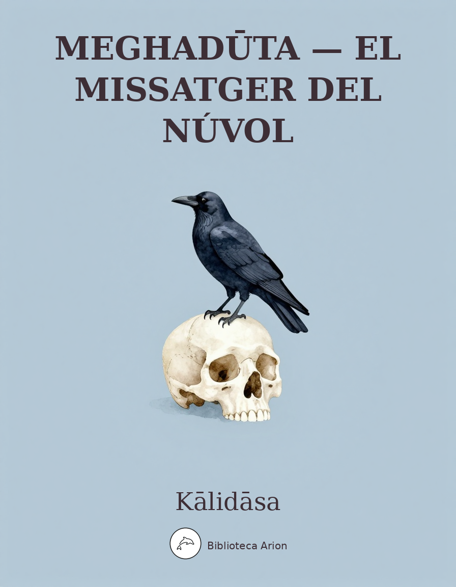

EPUBMeghadūta — El Missatger del Núvol
मेघदूतम् (Meghadūtam)
Poema líric en sànscrit on un yakṣa exiliat demana a un núvol que porti un missatge a la seva estimada a la ciutat d'Alakā. Obra mestra de la poesia sànscrita clàssica, considerada un dels millors poemes lírics de la literatura universal.
Autor: desconegut Font: gutenberg Llengua: núvol
THE BIRTH OF THE WAR-GOD.
_A POEM BY KÁLIDÁSA._
Translated from the Sanskrit into English Verse
BY
RALPH T. H. GRIFFITH, M.A.
PRINCIPAL OF BENARES COLLEGE.
Second Edition.
LONDON:
TRÜBNER & CO., LUDGATE HILL.
1879.
[_All rights reserved._]
TRÜBNER'S
ORIENTAL SERIES.
V.
PREFACE.
Of the history of KÁLIDÁSA, to whom by general assent the KUMÁRA SAMBHAVA, or BIRTH OF THE WAR-GOD, is attributed, we know but little with any certainty; we can only gather from a memorial-verse which enumerates their names, that he was one of the ‘Nine Precious Stones’ that shone at the Court of VIKRAMÁDITYA, King of OUJEIN, in the half century immediately preceding the Christian era.[A] As the examination of arguments for and against the correctness of this date is not likely to interest general readers, I must request them to rest satisfied with the belief that about the time when VIRGIL and HORACE were shedding an undying lustre upon the reign of AUGUSTUS, our poet KÁLIDÁSA lived, loved, and sang, giving and taking honour, at the polished court of the no less munificent patron of Sanskrit literature, at the period of its highest perfection.
[A] [This date is much too early. It has been shown by H.
Jacobi from the astrological data contained in the poem that
the date of its composition cannot be placed earlier than
about the middle of the fourth century A.D.]
Little as we know of Indian poetry, here and there an English reader may be found, who is not entirely unacquainted with the name or works of the author of the beautiful dramas of SAKONTALÁ and THE HERO AND THE NYMPH, the former of which has long enjoyed an European celebrity in the translation of SIR WILLIAM JONES, and the latter is one of the most charming of PROFESSOR WILSON’S specimens of the Hindú Theatre; here and there even in England may be found a lover of the graceful, tender, picturesque, and fanciful, who knows something, and would gladly know more, of the sweet poet of the CLOUD MESSENGER, and THE SEASONS; whilst in Germany he has been deeply studied in the original, and enthusiastically admired in translation,–not the Orientalist merely, but the poet, the critic, the natural philosopher,–a GOETHE, a SCHLEGEL, a HUMBOLDT, having agreed, on account of his tenderness of feeling and his rich creative imagination, to set KÁLIDÁSA very high among the glorious company of the Sons of Song.[B]
[B] Goethe says:
Willst du die Blüthe des frühen, die Früchte des späteren
Jahres,
Willst du was reizt and entzückt, willst du was sättigt
and nährt,
Willst du den Himmel, die Erde, mit einem Namen begreifen;
Nenn' ich Sakontalá, Dich, und so ist Alles gesagt.
See also Schlegel's Dramatic Literature, Lect. II., and
Humboldt's Kosmos, Vol. II. p. 40, and note.
That the poem which is now for the first time offered to the general reader, in an English dress, will not diminish this reputation is the translator’s earnest hope, yet my admiration of the grace and beauty that pervade so much of the work must not allow me to deny that occasionally, even in the noble Sanskrit, if we judge him by an European standard, KÁLIDÁSA is bald and prosaic. Nor is this a defence of the translator at the expense of the poet. Fully am I conscious how far I am from being able adequately to reproduce the fanciful creation of the sweet singer of OUJEIN; that numerous beauties of thought and expression I may have passed by, mistaken, marred; that in many of the more elaborate descriptions my own versification is ‘harsh as the jarring of a tuneless chord’ compared with the melody of KÁLIDÁSA’S rhythm, to rival whose sweetness and purity of language, so admirably adapted to the soft repose and celestial rosy hue of his pictures, would have tried all the fertility of resource, the artistic skill, and the exquisite ear of the author of LALLA ROOKH himself. I do not think this poem deserves, and I am sure it will not obtain, that admiration which the author’s masterpieces already made known at once commanded; at all events, if the work itself is not inferior, it has not enjoyed the good fortune of having a JONES or a WILSON for translator.
It may be as well to inform the reader, before he wonder at the misnomer, that the BIRTH OF THE WAR-GOD was either left unfinished by its author, or time has robbed us of the conclusion; the latter is the more probable supposition, tradition informing us that the poem originally consisted of twenty-two cantos, of which only seven now remain.[C]
[C] [Ten more cantos, of very inferior merit, have been
published since this was written.]
I have derived great assistance in the work of translation from the Calcutta printed edition of the poem in the Library of the East-India House; but although the Sanskrit commentaries accompanying the text are sometimes of the greatest use in unravelling the author’s meaning, they can scarcely claim infallibility; and, not unfrequently, are so matter-of-fact and prosaic, that I have not scrupled to think, or rather to feel, for myself. It is, however, PROFESSOR STENZLER’S edition,[D] published under the auspices of the Oriental Translation Fund (a society that has liberally encouraged my own undertaking), that I have chiefly used. Valuable as this work is (and I will not disown my great obligations to it), it is much to be regretted that the extracts from the native commentators are so scanty, and the annotations so few and brief.
[D] [With a Latin translation.]
And now one word as to the manner in which I have endeavoured to perform my task. Though there is much, I think, that might be struck out, to the advantage of the poem, this I have in no instance ventured to do, my aim having been to give the English reader as faithful a cast of the original as my own power and the nature of things would permit, and, without attempting to give word for word or line for line, to produce upon the imagination impressions similar to those which one who studies the work in Sanskrit would experience.
I will not seek to anticipate the critics, nor to deprecate their animadversions, by pointing out the beauties of the poet, or particularising the defects of him and his translator. That the former will be appreciated, and the latter kindly dealt with, late experience makes me confident; so that now, in the words of the Manager in the Prelude to the HERO AND THE NYMPH, “I have only to request the audience that they will listen to this work of KÁLIDÁSA with attention and kindness, in consideration of its subject and respect for the Author.”
ADDERLEY LIBRARY, MARLBOROUGH COLLEGE, April, 1853.
PRELIMINARY NOTE.
PRONUNCIATION.
As a general rule, the Sanskrit vowels are to be sounded like those of the Italian alphabet, except the short or unaccented a, which has the sound of that letter in the word America: “pandit,” a learned man, being pronounced pundit.
á, long or accented like a in father. e like e in they. i, short or unaccented, like i in pick. í, long or accented like i in pique. o like o in go. u, short or unaccented, like u in full. ú, long or accented like u in rule.
The diphthongs ai and au are pronounced severally like i in rise and ou in our.
The consonants are sounded as in English. In the aspirates, however, the sound of h is kept distinct; dh, th, ph, bh, &c., being pronounced as in red-hot, pent-house, up-hill, abhor, &c. G is always hard, whatever vowel follows.
In HIMÁLAYA the accent is on the second syllable.
THE
BIRTH OF THE WAR-GOD.
Canto First.
UMÁ’S NATIVITY.
Far in the north HIMÁLAYA, lifting high His towery summits till they cleave the sky, Spans the wide land from east to western sea, Lord of the hills, instinct with deity. For him, when PRITHU ruled in days of old The rich earth, teeming with her gems and gold, The vassal hills and MERU drained her breast, To deck HIMÁLAYA, for they loved him best; And earth, the mother, gave her store to fill With herbs and sparkling ores the royal hill. Proud mountain-king! his diadem of snow Dims not the beauty of his gems below. For who can gaze upon the moon, and dare To mark one spot less brightly glorious there? Who, ‘mid a thousand virtues, dares to blame One shade of weakness in a hero’s fame? Oft, when the gleamings of his mountain brass Flash through the clouds and tint them as they pass, Those glories mock the hues of closing day, And heaven’s bright wantons hail their hour of play; Try, ere the time, the magic of their glance, And deck their beauty for the twilight dance. Dear to the sylphs are the cool shadows thrown By dark clouds wandering round the mountain’s zone, Till frightened by the storm and rain they seek Eternal sunshine on each loftier peak. Far spread the wilds where eager hunters roam, Tracking the lion to his dreary home. For though the melting snow has washed away The crimson blood-drops of the wounded prey, Still the fair pearls that graced his forehead tell Where the strong elephant, o’ermastered, fell, And clinging to the lion’s claws, betray, Falling at every step, the mighty conqueror’s way. There birch-trees wave, that lend their friendly aid To tell the passion of the love-lorn maid, So quick to learn in metal tints to mark Her hopes and fears upon the tender bark.
List! breathing from each cave, HIMÁLAYA leads
The glorious hymn with all his whispering reeds, Till heavenly minstrels raise their voice in song, And swell his music as it floats along. There the fierce elephant wounds the scented bough To ease the torment of his burning brow; And bleeding pines their odorous gum distil To breathe rare fragrance o’er the sacred hill. There magic herbs pour forth their streaming light From mossy caverns through the darksome night, And lend a torch to guide the trembling maid Where waits her lover in the leafy shade. Yet hath he caves within whose inmost cells In tranquil rest the murky darkness dwells, And, like the night-bird, spreads the brooding wing Safe in the shelter of the mountain-king, Unscorned, uninjured; for the good and great Spurn not the suppliant for his lowly state.
Why lingers yet the heavenly minstrel's bride
On the wild path that skirts HIMÁLAYA’S side? Cold to her tender feet–oh, cold–the snow, Why should her steps–her homeward steps–be slow? ‘Tis that her slender ankles scarce can bear The weight of beauty that impedes her there; Each rounded limb, and all her peerless charms, That broad full bosom, those voluptuous arms. E’en the wild kine that roam his forests bring The royal symbols to the mountain-king. With tails outspread, their bushy streaming hair Flashes like moonlight through the parted air. What monarch’s fan more glorious might there be, More meet to grace a king as proud as he? There, when the nymphs, within the cave’s recess, In modest fear their gentle limbs undress, Thick clouds descending yield a friendly screen, And blushing beauty bares her breast unseen. With pearly dewdrops GANGÁ loads the gale That waves the dark pines towering o’er the vale, And breathes in welcome freshness o’er the face Of wearied hunters when they quit the chase. So far aloft, amid Himálayan steeps, Crouched on the tranquil pool the lotus sleeps, That the bright SEVEN who star the northern sky Cull the fair blossoms from their seats on high; And when the sun pours forth his morning glow In streams of glory from his path below, They gain new beauty as his kisses break His darlings’ slumber on the mountain lake.
Well might that ancient hill by merit claim
The power and glory of a monarch’s name; Nurse of pure herbs that grace each holy rite, Earth’s meetest bearer of unyielding might. The Lord of Life for this ordained him king, And bade him share the sacred offering. Gladly obedient to the law divine, He chose a consort to prolong his line. No child of earth, born of the Sage’s will, The fair nymph MENÁ pleased the sovran hill. To her he sued, nor was his prayer denied, The Saints’ beloved was the mountain’s bride. Crowned with all bliss and beauty were the pair, He passing glorious, she was heavenly fair. Swiftly the seasons, winged with love, flew on, And made her mother of a noble son, The great MAINÁKA, who in triumph led His Serpent beauties to the bridal bed; And once when INDRA’S might those pinions rent That bare the swift hills through the firmament, (So fierce his rage, no mountain could withstand The wild bolt flashing from his red right hand,) He fled to Ocean, powerful to save, And hid his glory ‘neath the friendly wave.
A gentle daughter came at length to bless
The royal mother with her loveliness; Born once again, for in an earlier life High fame was hers, as [‘S]IVA’S faithful wife. But her proud sire had dared the God to scorn; Then was her tender soul with anguish torn, And jealous for the lord she loved so well, Her angered spirit left its mortal cell. Now deigned the maid, a lovely boon, to spring From that pure lady and the mountain-king. When Industry and Virtue meet and kiss, Holy their union, and the fruit is bliss. Blest was that hour, and all the world was gay, When MENÁ’S daughter saw the light of day. A rosy glow suffused the brightening sky; An odorous breeze came sweeping softly by. Breathed round the hill a sweet unearthly strain, And the glad heavens poured down their flowery rain. That fair young maiden diademmed with light Made her dear mother’s fame more sparkling bright. As the blue offspring of the Turquois Hills The parent mount with richer glory fills, When the cloud’s voice has caused the gem to spring, Responsive to its gentle thundering. Then was it sweet, as days flew by, to trace The dawning charm of every infant grace, Even as the crescent moons their glory pour More full, more lovely than the eve before.
As yet the maiden was unknown to fame;
Child of the Mountain was her only name. But when her mother, filled with anxious care At her stern penance, cried Forbear! Forbear! To a new title was the warning turned, And UMÁ was the name the maiden earned. Loveliest was she of all his lovely race, And dearest to her father. On her face Looking with love he ne’er could satisfy The thirsty glances of a parent’s eye. When spring-tide bids a thousand flowerets bloom Loading the breezes with their rich perfume, Though here and there the wandering bee may rest, He loves his own–his darling mango–best. The Gods’ bright river bathes with gold the skies, And pure sweet eloquence adorns the wise. The flambeau’s glory is the shining fire; She was the pride, the glory of her sire, Shedding new lustre on his old descent, His loveliest child, his richest ornament. The sparkling GANGÁ laved her heavenly home, And o’er her islets would the maiden roam Amid the dear companions of her play With ball and doll to while the hours away. As swans in autumn in assembling bands Fly back to GANGÁ’S well-remembered sands: As herbs beneath the darksome shades of night Collect again their scattered rays of light: So dawned upon the maiden’s waking mind The far-off memory of her life resigned, And all her former learning in its train, Feelings, and thoughts, and knowledge came again. Now beauty’s prime, that craves no artful aid, Ripened the loveliness of that young maid: That needs no wine to fire the captive heart,– The bow of Love without his flowery dart. There was a glory beaming from her face, With love’s own light, and every youthful grace: Ne’er had the painter’s skilful hand portrayed A lovelier picture than that gentle maid; Ne’er sun-kissed lily more divinely fair Unclosed her beauty to the morning air. Bright as a lotus, springing where she trod, Her glowing feet shed radiance o’er the sod. That arching neck, the step, the glance aside, The proud swans taught her as they stemmed the tide, Whilst of the maiden they would fondly learn Her anklets’ pleasant music in return. When the Almighty Maker first began The marvellous beauty of that child to plan, In full fair symmetry each rounded limb Grew neatly fashioned and approved by Him: The rest was faultless, for the Artist’s care Formed each young charm most excellently fair, As if his moulding hand would fain express The visible type of perfect loveliness. What thing of beauty may the poet dare With the smooth wonder of those limbs compare? The young tree springing by the brooklet’s side? The rounded trunk, the forest-monarch’s pride? Too rough that trunk, too cold that young tree’s stem; A softer, warmer thing must vie with them. Her hidden beauties though no tongue may tell, Yet [‘S]IVA’S love will aid the fancy well: No other maid could deem her boasted charms Worthy the clasp of such a husband’s arms. Between the partings of fair UMÁ’S vest Came hasty glimpses of a lovely breast: So closely there the sweet twin hillocks rose, Scarce could the lotus in the vale repose. And if her loosened zone e’er slipped below, All was so bright beneath the mantle’s flow, So dazzling bright, as if the maid had braced A band of gems to sparkle round her waist; And the dear dimples of her downy skin Seemed fitting couch for Love to revel in. Her arms were softer than the flowery dart, Young KÁMA’S arrow, that subdues the heart; For vain his strife with [‘S]IVA, till at last He chose those chains to bind his conqueror fast. E’en the new moon poured down a paler beam When her long fingers flashed their rosy gleam, And brighter than A[’s]oka’s blossom threw A glory round, like summer’s evening hue. The strings of pearl across her bosom thrown Increased its beauty, and enhanced their own,– Her breast, her jewels seeming to agree, The adorner now, and now the adorned to be. When BEAUTY gazes on the fair full moon, No lotus charms her, for it blooms at noon: If on that flower she feed her raptured eye, No moon is shining from the mid-day sky; She looked on UMÁ’S face, more heavenly fair, And found their glories both united there. The loveliest flower that ever opened yet Laid in the fairest branch: a fair pearl set In richest coral, with her smile might vie Flashing through lips bright with their rosy dye. And when she spoke, upon the maiden’s tongue, Distilling nectar, such rare accents hung, The sweetest note that e’er the Koïl poured Seemed harsh and tuneless as a jarring chord. The melting glance of that soft liquid eye, Tremulous like lilies when the breezes sigh, Which learnt it first–so winning and so mild– The gentle fawn, or MENÁ’S gentler child? And oh, the arching of her brow! so fine Was the rare beauty of its pencilled line, LOVE gazed upon her forehead in despair And spurned the bow he once esteemed so fair: Her long bright tresses too might shame the pride Of envious yaks who roamed the mountain-side. Surely the Maker’s care had been to bring From Nature’s store each sweetest, loveliest thing, As if the world’s Creator would behold All beauty centred in a single mould.
When holy NÁRAD--Saint who roams at will--
First saw the daughter of the royal hill, He hailed the bride whom [‘S]IVA’S love should own Half of himself, and partner of his throne. HIMÁLAYA listened, and the father’s pride Would yield the maiden for no other’s bride: To Fire alone of all bright things we raise The holy hymn, the sacrifice of praise. But still the monarch durst not, could not bring His child, unsought, to Heaven’s supremest King; But as a good man fears his earnest prayer Should rise unheeded, and with thoughtful care Seeks for some friend his eager suit to aid, Thus great HIMÁLAYA in his awe delayed.
Since the sad moment when his gentle bride
In the full glory of her beauty died, The mournful [‘S]IVA in the holy grove Had dwelt in solitude, and known not love. High on that hill where musky breezes throw Their balmy odours o’er eternal snow; Where heavenly minstrels pour their notes divine, And rippling GANGÁ laves the mountain pine, Clad in a coat of skin all rudely wrought He lived for prayer and solitary thought. The faithful band that served the hermit’s will Lay in the hollows of the rocky hill, Where from the clefts the dark bitumen flowed. Tinted with mineral dyes their bodies glowed; Clad in rude mantles of the birch-tree’s rind, With bright red garlands was their hair entwined. The holy bull before his master’s feet Shook the hard-frozen earth with echoing feet, And as he heard the lion’s roaring swell In distant thunder from the rocky dell, In angry pride he raised his voice of fear And from the mountain drove the startled deer. Bright fire–a shape the God would sometimes wear Who takes eight various forms–was glowing there. Then the great deity who gives the prize Of penance, prayer, and holy exercise, As though to earn the meed he grants to man, Himself the penance and the pain began. Now to that holy lord, to whom is given Honour and glory by the Gods in heaven, The worship of a gift HIMÁLAYA paid, And towards his dwelling sent the lovely maid; Her task, attended by her youthful train, To woo his widowed heart to love again.
The hermit welcomed with a courteous brow
That gentle enemy of hermit vow. The still pure breast where Contemplation dwells Defies the charmer and the charmer’s spells. Calm and unmoved he viewed the wondrous maid, And bade her all his pious duties aid. She culled fresh blossoms at the God’s command, Sweeping the altar with a careful hand; The holy grass for sacred rites she sought, And day by day the fairest water brought. And if the unwonted labour caused a sigh, The fair-haired lady turned her languid eye Where the pale moon on [‘S]IVA’S forehead gleamed, And swift through all her frame returning vigour streamed.
CANTO SECOND.
Canto Second.
THE ADDRESS TO BRAHMÁ.
While impious TÁRAK in resistless might Was troubling heaven and earth with wild affright, To BRAHMÁ’S high abode, by INDRA led, The mournful deities for refuge fled. As when the Day-God’s loving beams awake The lotus slumbering on the silver lake, So BRAHMÁ deigned his glorious face to show, And poured sweet comfort on their looks of woe. Then nearer came the suppliant Gods to pay Honour to him whose face turns every way. They bowed them low before the Lord of Speech, And sought with truthful words his heart to reach: “Glory to Thee! before the world was made, One single form thy Majesty displayed. Next Thou, to body forth the mystic Three, Didst fill three Persons: Glory, Lord, to Thee! Unborn and unbegotten! from thy hand The fruitful seed rained down; at thy command From that small germ o’er quickening waters thrown All things that move not, all that move have grown. Before thy triple form in awe they bow: Maker, preserver, and destroyer, Thou! Thou, when a longing urged thee to create, Thy single form in twain didst separate. The Sire, the Mother that made all things be By their first union were but parts of Thee. From them the life that fills this earthly frame, And fruitful Nature, self-renewing, came. Thou countest not thy time by mortals’ light; With Thee there is but one vast day and night. When BRAHMÁ slumbers fainting Nature dies, When BRAHMÁ wakens all again arise. Creator of the world, and uncreate! Endless! all things from Thee their end await. Before the world wast Thou! each Lord shall fall Before Thee, mightiest, highest, Lord of all. Thy self-taught soul thine own deep spirit knows; Made by thyself thy mighty form arose; Into the same, when all things have their end, Shall thy great self, absorbed in Thee, descend. Lord, who may hope thy essence to declare? Firm, yet as subtile as the yielding air: Fixt, all-pervading; ponderous, yet light, Patent to all, yet hidden from the sight. Thine are the sacred hymns which mortals raise, Commencing ever with the word of praise, With three-toned chant the sacrifice to grace, And win at last in heaven a blissful place. They hail Thee Nature labouring to free The Immortal Soul from low humanity; Hail Thee the stranger Spirit, unimpressed, Gazing on Nature from thy lofty rest. Father of fathers, God of gods art thou, Creator, highest, hearer of the vow! Thou art the sacrifice, and Thou the priest, Thou, he that eateth; Thou, the holy feast. Thou art the knowledge which by Thee is taught, The mighty thinker, and the highest thought!”
Pleased with their truthful praise, his favouring eye
He turned upon the dwellers in the sky, While from four mouths his words in gentle flow Come welling softly to assuage their woe: “Welcome! glad welcome, Princes! ye who hold Your lofty sovereignties ordained of old. But why so mournful? what has dimmed your light? Why shine your faces less divinely bright? Like stars that pour forth weaker, paler gleams, When the fair moon with brighter radiance beams. O say, in vain doth mighty INDRA bear The thunderbolt of heaven, unused to spare? VRITRA, the furious fiend, ‘twas strong to slay: Why dull and blunted is that might to-day? See, VARUN’S noose hangs idly on his arm, Like some fell serpent quelled by magic charm. Weak is KUVERA’S hand, his arm no more Wields the dread mace it once so proudly bore; But like a tree whose boughs are lopped away, It tells of piercing woe, and dire dismay. In days of yore how YAMA’S sceptre shone! Fled are its glories, all its terrors gone; Despised and useless as a quenched brand, All idly now it marks the yielding sand. Fallen are the Lords of Light, ere now the gaze Shrank from the coming of their fearful blaze; So changed are they, the undazzled eye may see Like pictured forms, each rayless deity. Some baffling power has curbed the breezes’ swell: Vainly they chafe against the secret spell. We know some barrier checks their wonted course, When refluent waters seek again their source. The RUDRAS too–fierce demigods who bear The curved moon hanging from their twisted hair– Tell by their looks of fear, and shame, and woe, Of threats now silenced, of a mightier foe. Glory and power, ye Gods, were yours of right: Have ye now yielded to some stronger might, Even as on earth a general law may be Made powerless by a special text’s decree? Then say, my sons, why seek ye BRAHMÁ’S throne? ‘Tis mine to frame the worlds, and yours to guard your own.”
Then INDRA turned his thousand glorious eyes,
Glancing like lilies when the soft wind sighs, And in the Gods’ behalf, their mighty chief Urged the Most Eloquent to tell their grief. Then rose the heavenly Teacher, by whose side Dim seemed the glories of the Thousand-eyed, And with his hands outspread, to BRAHMÁ spake, Couched on his own dear flower, the daughter of the lake: “O mighty Being! surely thou dost know The unceasing fury of our ruthless foe; For thou canst see the secret thoughts that lie Deep in the heart, yet open to thine eye. The vengeful TÁRAK, in resistless might, Like some dire Comet, gleaming wild affright, O’er all the worlds an evil influence sheds, And, in thy favour strong, destruction spreads. All bow before him: on his palace wall The sun’s first ray and parting splendour fall; Ne’er could he waken with a lovelier glance His own dear lotus from her nightly trance. For him, proud fiend, the moon no waning knows, But with unminished full-orbed lustre glows. Too faint for him the crescent glory set Amid the blaze of [‘S]IVA’S coronet. How fair his garden, where the obedient breeze Dares steal no blossom from the slumbering trees! The wild wind checks his blustering pinions there, And gently whispering fans the balmy air; While through the inverted year the seasons pour, To win the demon’s grace, their flowery store. For him, the River-god beneath the stream, Marks the young pearl increase its silver gleam, Until, its beauty and its growth complete, He bears the offering to his master’s feet. The Serpents, led by VÁSUKI, their king, Across his nightly path their lustre fling; Bright as a torch their flashing jewels blaze, Nor wind, nor rain, can dim their dazzling rays. E’en INDRA, sovereign of the blissful skies, To gain his love by flattering homage tries, And sends him oft those flowers of wondrous hue That on the heavenly tree in beauty grew. Yet all these offerings brought from day to day, This flattery, fail his ruthless hand to stay. Earth, hell, and heaven, beneath his rage must groan, Till force can hurl him from his evil throne. Alas! where glowed the bright celestial bowers, And gentle fair ones nursed the opening flowers, Where heavenly trees a heavenly odour shed, O’er a sad desert ruin reigns instead. He roots up MERU’S sacred peaks, where stray The fiery coursers of the God of Day, To form bright slopes, and glittering mounds of ease, In the broad gardens of his palaces. There, on his couch, the mighty lord is fanned To sweetest slumber by a heavenly band; Poor captive nymphs, who stand in anguish by, Drop the big tear, and heave the ceaseless sigh. And now have INDRA’S elephants defiled The sparkling stream where heavenly GANGÁ smiled, And her gold lotuses the fiend has taken To deck his pools, and left her all forsaken. The Gods of heaven no more delight to roam O’er all the world, far from their glorious home. They dread the demon’s impious might, nor dare Speed their bright chariots through the fields of air. And when our worshippers in duty bring The appointed victims for the offering, He tears them from the flame with magic art, While we all powerless watch with drooping heart. He too has stolen from his master’s side The steed of heavenly race, great INDRA’S pride. No more our hosts, so glorious once, withstand The fierce dominion of the demon’s hand, As herbs of healing virtue fail to tame The sickness raging through the infected frame. Idly the discus hangs on VISH[N.]U’S neck, And our last hope is vain, that it would check The haughty TÁRAK’S might, and flash afar Ruin and death–the thunderbolt of war. E’en INDRA’S elephant has felt the might Of his fierce monsters in the deadly fight, Which spurn the dust in fury, and defy The threatening clouds that sail along the sky. Therefore, O Lord, we seek a chief, that he May lead the hosts of heaven to victory, Even as holy men who long to sever The immortal spirit from its shell for ever, Seek lovely Virtue’s aid to free the soul From earthly ties and action’s base control. Thus shall he save us: proudly will we go Under his escort ‘gainst the furious foe; And INDRA, conqueror in turn, shall bring FORTUNE, dear captive, home with joy and triumphing.”
Sweet as the rains--the fresh'ning rains--that pour
On the parched earth when thunders cease to roar, Were BRAHMÁ’S words: “Gods, I have heard your grief; Wait ye in patience: time will bring relief. ‘Tis not for me, my children, to create A chief to save you from your mournful fate. Not by my hand the fiend must be destroyed, For my kind favour has he once enjoyed; And well ye know that e’en a poisonous tree By him who planted it unharmed should be. He sought it eagerly, and long ago I gave my favour to your demon-foe, And stayed his awful penance, that had hurled Flames, death, and ruin o’er the subject world. When that great warrior battles for his life, O, who may conquer in the deadly strife, Save one of [‘S]IVA’S seed? He is the light, Reigning supreme beyond the depths of night. Nor I, nor VISH[N.]U, his full power may share, Lo, where he dwells in solitude and prayer! Go, seek the Hermit in the grove alone, And to the God be UMÁ’S beauty shown. Perchance, the Mountain-child, with magnet’s force, May turn the iron from its steadfast course, Bride of the mighty God; for only she Can bear to Him as water bears to me. Then from their love a mighty Child shall rise, And lead to war the armies of the skies. Freed by his hand, no more the heavenly maids Shall twine their glittering hair in mournful braids.”
He spake, and vanished from their wondering sight;
And they sped homeward to their world of light. But INDRA, still on BRAHMÁ’S words intent, To KÁMA’S dwelling-place his footsteps bent. Swiftly he came: the yearning of his will Made INDRA’S lightning course more speedy still. The LOVE-GOD, armed with flowers divinely sweet, In lowly homage bowed before his feet. Around his neck, where bright love-tokens clung, Arched like a maiden’s brow, his bow was hung, And blooming SPRING, his constant follower, bore The mango twig, his weapon famed of yore.
CANTO THIRD.
Canto Third.
THE DEATH OF LOVE.
In eager gaze the sovereign of the skies Looked full on Káma with his thousand eyes: E’en such a gaze as trembling suppliants bend, When danger threatens, on a mighty friend.
Close by his side, where INDRA bade him rest,
The LOVE-GOD sate, and thus his lord addressed: “All-knowing INDRA, deign, my Prince, to tell Thy heart’s desire in earth, or heaven, or hell: Double the favour, mighty sovereign, thou Hast thought on KÁMA, O, command him now: Who angers thee by toiling for the prize, By penance, prayer, or holy sacrifice? What mortal being dost thou count thy foe? Speak, I will tame him with my darts and bow. Has some one feared the endless change of birth, And sought the path that leads the soul from earth? Slave to a glancing eye thy foe shall bow, And own the witchery of a woman’s brow; E’en though the object of thine envious rage Were taught high wisdom by the immortal sage, With billowy passions will I whelm his soul, Like rushing waves that spurn the bank’s control. Or has the ripe full beauty of a spouse, Too fondly faithful to her bridal vows, Ravished thy spirit from thee? Thine, all thine Around thy neck her loving arms shall twine. Has thy love, jealous of another’s charms, Spurned thee in wrath when flying to her arms? I’ll rack her yielding bosom with such pain, Soon shall she be all love and warmth again, And wildly fly in fevered haste to rest Her aching heart close, close to thy dear breast. Lay, INDRA, lay thy threatening bolt aside: My gentle darts shall tame the haughtiest pride, And all that war with heaven and thee shall know The magic influence of thy KÁMA’S bow; For woman’s curling lip shall bow them down, Fainting in terror at her threatening frown. Flowers are my arms, mine only warrior SPRING, Yet in thy favour am I strong, great King. What can their strength who draw the bow avail Against my matchless power when I assail? Strong is the Trident-bearing God, yet he, The mighty [‘S]IVA, e’en, must yield to me.”
Then INDRA answered with a dawning smile,
Resting his foot upon a stool the while: “Dear God of Love, thou truly hast displayed The power unrivalled of thy promised aid. My hope is all in thee: my weapons are The thunderbolt and thou, more mighty far. But vain, all vain the bolt of heaven to fright Those holy Saints whom penance arms aright. Thy power exceeds all bound: thou, only thou, All-conquering Deity, canst help me now! Full well I know thy nature, and assign This toil to thee, which needs a strength like thine: As on that snake alone will KRISH[N.]A rest, That bears the earth upon his haughty crest. Our task is well-nigh done: thy boasted dart Has power to conquer even [‘S]IVA’S heart. Hear what the Gods, oppressed with woe, would fain From mighty [‘S]IVA through thine aid obtain. He may beget–and none in heaven but he– A chief to lead our hosts to victory. But all his mind with holiest lore is fraught, Bent on the Godhead is his every thought. Thy darts, O LOVE, alone can reach him now, And lure his spirit from the hermit vow. Go, seek HIMÁLAYA’S Mountain-child, and aid With all thy loveliest charms the lovely maid, So may she please his fancy: only she May wed with [‘S]IVA: such the fixt decree. E’en now my bands of heavenly maids have spied Fair UMÁ dwelling by the Hermit’s side. There by her father’s bidding rests she still, Sweet minister, upon the cold bleak hill. Go, KÁMA, go! perform this great emprise, And free from fear the Rulers of the Skies; We need thy favour, as the new-sown grain Calls for the influence of the gentle rain. Go, KÁMA, go! thy flowery darts shall be Crowned with success o’er this great deity. Yea, and thy task is e’en already done, For praise and glory are that instant won When a bold heart dares manfully essay The deed which others shrink from in dismay. Gods are thy suppliants, KÁMA, and on thee Depends the triple world’s security. No cruel deed will stain thy flowery bow: With all thy gentlest, mightiest valour, go! And now, Disturber of the spirit, see SPRING, thy beloved, will thy comrade be, And gladly aid thee [‘S]IVA’S heart to tame: None bids the whispering Wind, and yet he fans the flame.”
He spake, and KÁMA bowed his bright head down,
And took his bidding like a flowery crown. Above his wavy curls great INDRA bent, And fondly touched his soldier ere he went, With that hard hand–but, O, how gentle now– That fell so heavy on his elephant’s brow. Then for that snow-crowned hill he turned away, Where all alone the heavenly Hermit lay. His fearful RATI and his comrade SPRING Followed the guidance of Love’s mighty king. There will he battle in unwonted strife, Return a conqueror or be reft of life.
How fair was SPRING! To fill the heart with love,
And lure the Hermit from his thoughts above, In that pure grove he grew so heavenly bright That KÁMA’S envy wakened at the sight. Now the bright Day-God turned his burning ray To where KUVERA holds his royal sway, While the sad South in whispering breezes sighed And mourned his absence like a tearful bride. Then from its stem the red A[’s]oka threw Full buds and flowerets of celestial hue, Nor waited for the maiden’s touch, the sweet beloved pressure of her tinkling feet. There grew LOVE’S arrow, his dear mango spray, Winged with young leaves to speed its airy way, And at the call of SPRING the wild bees came, Grouping the syllables of KÁMA’S name. How sighed the spirit o’er that loveliest flower That boasts no fragrance to enrich its dower! For Nature, wisest mother, oft prefers To part more fairly those good gifts of hers. There from the tree Palása blossoms spread, Curved like the crescent moon, their rosiest red, With opening buds that looked as if young SPRING Had pressed his nails there in his dallying: Sweet wanton SPRING, to whose enchanting face His flowery Tilaka gave fairer grace: Who loves to tint his lip, the mango spray, With the fresh colours of the early day, And powder its fine red with many a bee That sips the oozing nectar rapturously. The cool gale speeding o’er the shady lawns Shook down the sounding leaves, while startled fawns Ran wildly at the viewless foe, all blind With pollen wafted by the fragrant wind. Sweet was the Köil’s voice, his neck still red With mango buds on which he late had fed: Twas as the voice of LOVE to bid the dame Spurn her cold pride, nor quench the gentle flame. What though the heat has stained the tints that dyed With marvellous bloom the heavenly minstrel’s bride? Neither her smile nor sunny glances fail: Bright is her lip, although her check be pale E’en the pure hermits owned the secret power Of warm SPRING coming in unwonted hour, While LOVE’S delightful witchery gently stole With strong sweet influence o’er the saintly soul.
On came the Archer-God, and at his side
The timid RATI, his own darling bride, While breathing nature showed how deep it felt, At passion’s glowing touch, the senses melt. For there in eager love the wild bee dipp’d In the dark flower-cup where his partner sipp’d. Here in the shade the hart his horn declined, And, while joy closed her eyes, caressed the hind. There from her trunk the elephant had poured A lily-scented stream to cool her lord, While the fond love-bird by the silver flood Gave to his mate the tasted lotus bud. Full in his song the minstrel stayed to sip The heavenlier nectar of his darling’s lip. Pure pearls of heat had late distained the dye, But flowery wine was sparkling in her eye. How the young creeper’s beauty charmed the view, Fair as the fairest maid, as playful too! Here some bright blossoms, lovelier than the rest, In full round beauty matched her swelling breast. Here in a thin bright line, some delicate spray, Red as her lip, ravished the soul away. And then how loving, and how close they clung To the tall trees that fondly o’er them hung! Bright, heavenly wantons poured the witching strain, Quiring for [‘S]IVA’S ear, but all in vain. No charmer’s spell may check the firm control Won by the holy o’er the impassioned soul.
The Hermit's servant hasted to the door:
In his left hand a branch of gold he bore. He touched his lip for silence: “Peace! be still! Nor mar the quiet of this holy hill.” He spake: no dweller of the forest stirred, No wild bee murmured, hushed was every bird. Still and unmoved, as in a picture stood All life that breathed within the waving wood. As some great monarch when he goes to war Shuns the fierce aspect of a baleful star, So KÁMA hid him from the Hermit’s eye, And sought a path that led unnoticed by, Where tangled flowers and clustering trailers spread Their grateful canopy o’er [‘S]IVA’S head. Bent on his hardy enterprise, with awe The Three-eyed Lord–great Penitent–he saw. There sate the God beneath a pine-tree’s shade, Where on a mound a tiger’s skin was laid. Absorbed in holiest thought, erect and still, The Hermit rested on the gentle hill. His shoulders drooping down, each foot was bent Beneath the body of the Penitent. With open palms the hands were firmly pressed, As though a lotus lay upon his breast. A double rosary in each ear, behind With wreathing serpents were his locks entwined. His coat of hide shone blacker to the view Against his neck of brightly beaming blue. How wild the look, how terrible the frown Of his dark eyebrows bending sternly down! How fiercely glared his eyes’ unmoving blaze Fixed in devotion’s meditating gaze: Calm as a full cloud resting on a hill, A waveless lake when every breeze is still, Like a torch burning in a sheltered spot, So still was he, unmoving, breathing not. So full the stream of marvellous glory poured from the bright forehead of that mighty Lord, Pale seemed the crescent moon upon his head, And slenderer than a slender lotus thread. At all the body’s nine-fold gates of sense He had barred in the pure Intelligence, To ponder on the Soul which sages call Eternal Spirit, highest, over all.
How sad was KÁMA at the awful sight,
How failed his courage in a swoon of fright! As near and nearer to the God he came Whom wildest thought could never hope to tame, Unconsciously his hands, in fear and woe, Dropped the sweet arrows and his flowery bow. But UMÁ came with all her maiden throng, And KÁMA’S fainting heart again was strong; Bright flowers of spring, in every lovely hue, Around the lady’s form rare beauty threw. Some clasped her neck like strings of purest pearls, Some shot their glory through her wavy curls. Bending her graceful head as half-oppressed With swelling charms even too richly blest, Fancy might deem that beautiful young maiden Some slender tree with its sweet flowers o’erladen. From time to time her gentle hand replaced The flowery girdle slipping from her waist: It seemed that LOVE could find no place more fair, So hung his newest, dearest bowstring there. A greedy bee kept hovering round to sip The fragrant nectar of her blooming lip. She closed her eyes in terror of the thief, And beat him from her with a lotus leaf. The angry curl of RATI’S lip confessed The shade of envy that stole o’er her breast. Through KÁMA’S soul fresh hope and courage flew, As that sweet vision blessed his eager view. So bright, so fair, so winning soft was she, Who could not conquer in such company?
Now UMÁ came, fair maid, his destined bride,
With timid steps approaching [‘S]IVA’S side. In contemplation will he brood no more, He sees the Godhead, and his task is o’er. He breathes, he moves, the earth begins to rock, The Snake, her bearer, trembling at the shock. Due homage then his own dear servant paid, And told him of the coming of the maid. He learnt his Master’s pleasure by the nod, And led HIMÁLAYA’S daughter to the God. Before his feet her young companions spread Fresh leaves and blossoms as they bowed the head, While UMÁ stooped so low, that from her hair Dropped the bright flower that starred the midnight there. To him whose ensign bears the bull she bent, Till each spray fell, her ear’s rich ornament. “Sweet maid,” cried [‘S]IVA, “surely thou shalt be Blessed with a husband who loves none but thee!” Her fear was banished, and her hope was high: A God had spoken, and Gods cannot lie.
Rash as some giddy moth that wooes the flame,
LOVE seized the moment, and prepared to aim. Close by the daughter of the Mountain-King, He looked on [‘S]IVA, and he eyed his string. While with her radiant hand fair UMÁ gave A rosary, of the lotuses that lave Their beauties in the heavenly GANGÁ’S wave, And the great Three-Eyed God was fain to take The offering for the well-loved suppliant’s sake, On his bright bow LOVE placed the unerring dart, The soft beguiler of the stricken heart. Like the Moon’s influence on the sea at rest, Came passion stealing o’er the Hermit’s breast, While on the maiden’s lip that mocked the dye Of ripe red fruit, he bent his melting eye. And oh! how showed the lady’s love for him, The heaving bosom, and each quivering limb! Like young Kadambas, when the leaf-buds swell, At the warm touch of Spring they love so well. But still, with downcast eyes, she sought the ground, And durst not turn their burning glances round. Then with strong effort, [‘S]IVA lulled to rest, The storm of passion in his troubled breast, And seeks, with angry eyes that round him roll, Whence came the tempest o’er his tranquil soul. He looked, and saw the bold young archer stand, His bow bent ready in his skilful hand, Drawn towards the eye; his shoulder well depressed, And the left foot thrown forward as a rest.
Then was the Hermit-God to madness lashed,
Then from his eye red flames of fury flashed. So changed the beauty of that glorious brow, Scarce could the gaze support its terror now. Hark! heavenly voices sighing through the air: “Be calm, great [‘S]IVA, O be calm and spare!” Alas! that angry eye’s resistless flashes Have scorched the gentle King of Love to ashes! But RATI saw not, for she swooned away; Senseless and breathless on the earth she lay; Sleep while thou mayst, unconscious lady, sleep! Soon wilt thou rise to sigh and wake to weep. E’en as the red bolt rives the leafy bough, So [‘S]IVA smote the hinderer of his vow; Then fled with all his train to some lone place Far from the witchery of a female face.
Sad was HIMALÁYA’S daughter: grief and shame O’er the young spirit of the maiden came: Grief–for she loved, and all her love was vain; Shame–she was spurned before her youthful train. She turned away, with fear and woe oppressed, To hide her sorrow on her father’s breast; Then, in the fond arms of her pitying sire, Closed her sad eyes for fear of [‘S]IVA’S ire. Still in his grasp the weary maiden lay, While he sped swiftly on his homeward way. Thus have I seen the elephant stoop to drink, And lift a lily from the fountain’s brink. Thus, when he rears his mighty head on high, Across his tusks I’ve seen that lily lie.
CANTO FOURTH.
Canto Fourth.
RATI’S LAMENT.
Sad, solitary, helpless, faint, forlorn, Woke KÁMA’S darling from her swoon to mourn. Too soon her gentle soul returned to know The pangs of widowhood–that word of woe. Scarce could she raise her, trembling, from the ground, Scarce dared to bend her anxious gaze around, Unconscious yet those greedy eyes should never Feed on his beauty more–gone, gone for ever.
“Speak to me, KÁMA! why so silent? give One word in answer–doth my KÁMA live?” There on the turf his dumb cold ashes lay, Whose soul that fiery flash had scorched away. She clasped the dank earth in her wild despair, Her bosom stained, and rent her long bright hair, Till hill and valley caught the mourner’s cry, And pitying breezes echoed sigh for sigh. “Oh thou wast beautiful: fond lovers sware Their own bright darlings were like KÁMA, fair. Sure woman’s heart is stony: can it be That I still live while this is all of thee? Where art thou, KÁMA? Could my dearest leave His own fond RATI here alone to grieve? So must the sad forsaken lotus die When her bright river leaves his channel dry. KÁMA, dear KÁMA, call again to mind How thou wast ever gentle, I was kind. Let not my prayer, thy RATI’S prayer, be vain; Come as of old, and bless these eyes again! Wilt thou not hear me? Think of those sweet hours When I would bind thee with my zone of flowers, Those soft gay fetters o’er thee fondly wreathing, Thine only punishment when gently breathing In tones of love thy heedless sigh betrayed The name, dear traitor! of some rival maid. Then would I pluck a floweret from my tress And beat thee till I forced thee to confess, While in my play the falling leaves would cover The eyes–the bright eyes–of my captive lover. And then those words that made me, oh, so blest– “Dear love, thy home is in my faithful breast!” Alas, sweet words, too blissful to be true, Or how couldst thou have died, nor RATI perish too?
Yes, I will fly to thee, of thee bereft,
And leave this world which thou, my life, hast left. Cold, gloomy, now this wretched world must be, For all its pleasures came from only thee. When night has veiled the city in its shade, Thou, only thou, canst soothe the wandering maid, And guide her trembling at the thunder’s roar Safe through the darkness to her lover’s door. In vain the wine-cup, as it circles by, Lisps in her tongue and sparkles in her eye. Long locks are streaming, and the cheek glows red: But all is mockery, LOVE–dear LOVE–is dead. The MOON, sweet spirit, shall lament for thee, Late, dim, and joyless shall his rising be. Days shall fly on, and he forget to take His full bright glory, mourning for thy sake. Say, KÁMA, say, whose arrow now shall be The soft green shoot of thy dear mango tree, The favourite spray which Köils love so well, And praise in sweetest strain its wondrous spell? This line of bees which strings thy useless bow Hums mournful echo to my cries of woe. Come in thy lovely shape and teach again The Köil’s mate, that knows the tender strain, Her gentle task to waft to longing ears The lover’s hope, the distant lover’s fears. Come, bring once more that ecstasy of bliss, The fond dear look, the smile, and ah! that kiss! Fainting with woe, my soul refuses rest When memory pictures how I have been blest. See, thou didst weave a garland, love, to deck With all spring’s fairest buds thy RATI’S neck. Sweet are those flowers as they were culled to-day, And is my KÁMA’S form more frail than they? His pleasant task my lover had begun, But stern Gods took him ere the work was done; Return, my KÁMA, at thy RATI’S cry, And stain this foot which waits the rosy dye. Now will I hie me to the fatal pile, And ere heaven’s maids have hailed thee with a smile, Or on my love their winning glances thrown, I will be there, and claim thee for mine own. Yet though I come, my lasting shame will be That I have lived one moment after thee. Ah, how shall I thy funeral rites prepare, Gone soul and body to the viewless air? “With thy dear SPRING I’ve seen thee talk and smile, Shaping an arrow for thy bow the while. Where is he now, thy darling friend, the giver Of many a bright sweet arrow for thy quiver? Is he too sent upon death’s dreary path, Scorched by the cruel God’s inexorable wrath?”
Stricken in spirit by her cries of woe,
Like venomed arrows from a mighty bow, A moment fled, and gentle SPRING was there, To ask her grief, to soothe her wild despair. She beat her breast more wildly than before, With greater floods her weeping eyes ran o’er. When friends are nigh the spirit finds relief In the full gushing torrent of its grief.
"Turn, gentle friend, thy weeping eyes, and see
That dear companion who was all to me. His crumbling dust with which the breezes play, Bearing it idly in their course away, White as the silver feathers of a dove, Is all that’s left me of my murdered love. Now come, my KÁMA. SPRING, who was so dear, Longs to behold thee. Oh, appear, appear! Fickle to women LOVE perchance may bend His ear to listen to a faithful friend. Remember, he walked ever at thy side O’er bloomy meadows in the warm spring-tide, That Gods above, and men, and fiends below Should own the empire of thy mighty bow, That ruthless bow, which pierces to the heart, Strung with a lotus-thread, a flower its dart. As dies a torch when winds sweep roughly by, So is my light for ever fled, and I, The lamp his cheering rays no more illume, Am wrapt in darkness, misery and gloom. Fate took my love, and spared the widow’s breath, Yet fate is guilty of a double death. When the wild monster tramples on the ground The tree some creeper garlands closely round, Reft of the guardian which it thought so true, Forlorn and withered, it must perish too. Then come, dear friend, the true one’s pile prepare, And send me quickly to my husband there. Call it not vain: the mourning lotus dies When the bright MOON, her lover, quits the skies. When sinks the red cloud in the purple west, Still clings his bride, the lightning, to his breast. All nature keeps the eternal high decree: Shall woman fail? I come, my love, to thee! Now on the pile my faint limbs will I throw, Clasping his ashes, lovely even so,– As if beneath my weary frame were spread Soft leaves and blossoms for a flowery bed. And oh, dear comrade (for in happier hours Oft have I heaped a pleasant bed of flowers For thee and him beneath the spreading tree), Now quickly raise the pile for LOVE and me. And in thy mercy gentle breezes send To fan the flame that wafts away thy friend, And shorten the sad moments that divide Impatient KÁMA from his RATI’S side; Set water near us in a single urn, We’ll sip in heaven from the same in turn; And let thine offering to his spirit be Sprays fresh and lovely from the mango tree, Culled when the round young buds begin to swell, For KÁMA loved those fragrant blossoms well.”
As RATI thus complained in faithful love,
A heavenly voice breathed round her from above, Falling in pity like the gentle rain That brings the dying herbs to life again: “Bride of the flower-armed God, thy lord shall be Not ever distant, ever deaf to thee. Give me thine ear, sad lady, I will tell Why perished KÁMA, whom thou lovedst well. The Lord of Life in every troubled sense Too warmly felt his fair child’s influence. He quenched the fire, but mighty vengeance came On KÁMA, fanner of the unholy flame. When [‘S]IVA by her penance won has led HIMÁLAYA’S daughter to her bridal bed, His bliss to KÁMA shall the God repay, And give again the form he snatched away. Thus did the gracious God, at JUSTICE’ prayer, The term of LOVE’S sad punishment declare. The Gods, like clouds, are fierce and gentle too, Now hurl the bolt, now drop sweet heavenly dew. Live, widowed lady, for thy lover’s arms Shall clasp again–oh, fondly clasp–thy charms. In summer-heat the streamlet dies away Beneath the fury of the God of Day: Then, in due season, comes the pleasant rain, And all is fresh, and fair, and full again.” Thus breathed the spirit from the viewless air, And stilled the raging of her wild despair; While SPRING consoled with every soothing art, Cheered by that voice from heaven, the mourner’s heart, Who watched away the hours, so sad and slow, That brought the limit of her weary woe, As the pale moon, quenched by the conquering light Of garish day, longs for its own dear night.
CANTO FIFTH.
Canto Fifth.
UMÁ’S REWARD.
Now woe to UMÁ, for young Love is slain, Her Lord hath left her, and her hope is vain. Woe, woe to UMÁ! how the Mountain-Maid Cursed her bright beauty for its feeble aid! ‘Tis Beauty’s guerdon which she loves the best, To bless her lover, and in turn be blest. Penance must aid her now–or how can she Win the cold heart of that stern deity? Penance, long penance: for that power alone Can make such love, so high a Lord, her own.
But, ah! how troubled was her mother's brow
At the sad tidings of the mourner’s vow! She threw her arms around her own dear maid, Kissed, fondly kissed her, sighed, and wept, and prayed: “Are there no Gods, my child, to love thee here? Frail is thy body, yet thy vow severe. The lily, by the wild bee scarcely stirred, Bends, breaks, and dies beneath the weary bird.” Fast fell her tears, her prayer was strong, but still That prayer was weaker than her daughter’s will. Who can recall the torrent’s headlong force, Or the bold spirit in its destined course? She sent a maiden to her sire, and prayed He for her sake would grant some bosky shade, That she might dwell in solitude, and there Give all her soul to penance and to prayer. In gracious love the great HIMÁLAYA smiled, And did the bidding of his darling child. Then to that hill which peacocks love she came, Known to all ages by the lady’s name.
Still to her purpose resolutely true,
Her string of noble pearls aside she threw, Which, slipping here and there, had rubbed away The sandal dust that on her bosom lay, And clad her in a hermit coat of bark, Rough to her gentle limbs, and gloomy dark, Pressing too tightly, till her swelling breast Broke into freedom through the unwonted vest. Her matted hair was full as lovely now As when ‘twas braided o’er her polished brow. Thus the sweet beauties of the lotus shine When bees festoon it in a graceful line; And, though the tangled weeds that crown the rill Cling o’er it closely, it is lovely still. With zone of grass the votaress was bound, Which reddened the fair form it girdled round: Never before the lady’s waist had felt The ceaseless torment of so rough a belt. Alas! her weary vow has caused to fade The lovely colours that adorned the maid. Pale is her hand, and her long finger-tips Steal no more splendour from her paler lips, Or, from the ball which in her play would rest, Made bright and fragrant, on her perfumed breast. Rough with the sacred grass those hands must be, And worn with resting on her rosary. Cold earth her couch, her canopy the skies, Pillowed upon her arm the lady lies: She who before was wont to rest her head In the soft luxury of a sumptuous bed, Vext by no troubles as she slumbered there, But sweet flowers slipping from her loosened hair. The maid put off, but only for awhile, Her passioned glances and her witching smile. She lent the fawn her moving, melting gaze, And the fond creeper all her winning ways. The trees that blossomed on that lonely mount She watered daily from the neighbouring fount: If she had been their nursing mother, she Could not have tended them more carefully. Not e’en her boy–her own bright boy–shall stay Her love for them: her first dear children they. Her gentleness had made the fawns so tame, To her kind hand for fresh sweet grain they came, And let the maid before her friends compare Her own with eyes that shone as softly there.
Then came the hermits of the holy wood
To see the votaress in her solitude; Grey elders came; though young the maid might seem, Her perfect virtue must command esteem. They found her resting in that lonely spot, The fire was kindled, and no rite forgot. In hermit’s mantle was she clad; her look Fixt in deep thought upon the Holy Book. So pure that grove: all war was made to cease, And savage monsters lived in love and peace. Pure was that grove: each newly built abode Had leafy shrines where fires of worship glowed.
But far too mild her penance, UMÁ thought,
To win from heaven the lordly meed she sought. She would not spare her form, so fair and frail, If sterner penance could perchance prevail. Oft had sweet pastime wearied her, and yet Fain would she match in toil the anchoret. Sure the soft lotus at her birth had lent Dear UMÁ’S form its gentle element; But gold, commingled with her being, gave That will so strong, so beautifully brave. Full in the centre of four blazing piles Sate the fair lady of the winning smiles, While on her head the mighty God of Day Shot all the fury of his summer ray; Yet her fixt gaze she turned upon the skies, And quenched his splendour with her brighter eyes. To that sweet face, though scorched by rays from heaven, Still was the beauty of the lotus given, Yet, worn by watching, round those orbs of light A blackness gathered like the shades of night. She cooled her dry lips in the bubbling stream, And lived on Amrit from the pale moon-beam, Sometimes in hunger culling from the tree The rich ripe fruit that hung so temptingly. Scorched by the fury of the noon-tide rays, And fires that round her burned with ceaseless blaze, Summer passed o’er her: rains of Autumn came And throughly drenched the lady’s tender frame. So steams the earth, when mighty torrents pour On thirsty fields all dry and parched before. The first clear rain-drops falling on her brow, Gem it one moment with their light, and now Kissing her sweet lip find a welcome rest In the deep valley of the lady’s breast; Then wander broken by the fall within The mazy channels of her dimpled skin. There as she lay upon her rocky bed, No sumptuous roof above her gentle head, Dark Night, her only witness, turned her eyes, Red lightnings flashing from the angry skies, And gazed upon her voluntary pain, In wind, in sleet, in thunder, and in rain. Still lay the maiden on the cold damp ground, Though blasts of winter hurled their snows around, Still pitying in her heart the mournful fate Of those poor birds, so fond, so desolate,– Doomed, hapless pair, to list each other’s moan Through the long hours of night, sad and alone. Chilled by the rain, the tender lotus sank: She filled its place upon the streamlet’s bank. Sweet was her breath as when that lovely flower Sheds its best odour in still evening’s hour. Red as its leaves her lips of coral hue: Red as those quivering leaves they quivered too.
Of all stern penance it is called the chief
To nourish life upon the fallen leaf. But even this the ascetic maiden spurned, And for all time a glorious title earned. APARNÁ–Lady of the unbroken fast– Have sages called her, saints who knew the past. Fair as the lotus fibres, soft as they, In these stern vows she passed her night and day. No mighty anchoret had e’er essayed The ceaseless penance of this gentle maid.
There came a hermit: reverend was he
As Bráhmanhood’s embodied sanctity. With coat of skin, with staff and matted hair, His face was radiant, and he spake her fair. Up rose the maid the holy man to greet, And humbly bowed before the hermit’s feet. Though meditation fill the pious breast, It finds a welcome for a glorious guest: The sage received the honour duly paid, And fixed his earnest gaze upon the maid. While through her frame unwonted vigour ran, Thus, in his silver speech, the blameless saint began: “How can thy tender frame, sweet lady, bear In thy firm spirit’s task its fearful share? Canst thou the grass and fuel duly bring, And still unwearied seek the freshening spring? Say, do the creeper’s slender shoots expand, Seeking each day fresh water from thy hand, Till like thy lip each ruddy tendril glows, That lip which, faded, still outreds the rose? With loving glance the timid fawns draw nigh: Say dost thou still with joy their wants supply? For thee, O lotus-eyed, their glances shine, Mocking the brightness of each look of thine. O Mountain-Lady, it is truly said That heavenly charms to sin have never led, For even penitents may learn of thee How pure, how gentle Beauty’s self may be. Bright GANGÁ falling with her heavenly waves, HIMÁLAYA’S head with sacred water laves, Bearing the flowers the seven great Sages fling To crown the forehead of the Mountain-King. Yet do thy deeds, O bright-haired maiden, shed A richer glory round his awful head. Purest of motives, Duty leads thy heart: Pleasure and gain therein may claim no part. O noble maid, the wise have truly said That friendship soon in gentle heart is bred. Seven steps together bind the lasting tie: Then bend on me, dear Saint, a gracious eye. Fain, lovely UMÁ, would a Bráhman learn What noble guerdon would thy penance earn. Say, art thou toiling for a second birth, Where dwells the great Creator? O’er the earth Resistless sway? Or fair as Beauty’s Queen, Peerless, immortal, shall thy form be seen? The lonely soul bowed down by grief and pain, By penance’ aid some gracious boon may gain. But what, O faultless one, can move thy heart To dwell in solitude and prayer apart? Why should the cloud of grief obscure thy brow, ‘Mid all thy kindred, who so loved as thou? Foes hast thou none: for what rash hand would dare From serpent’s head the magic gem to tear? Why dost thou seek the hermit’s garb to try, Thy silken raiment and thy gems thrown by? As though the sun his glorious state should leave, Rayless to harbour ‘mid the shades of eve. Wouldst thou win heaven by thy holy spells? Already with the Gods thy father dwells. A husband, lady? O forbear the thought, A priceless jewel seeks not, but is sought. Maiden, thy deep sighs tell me it is so; Yet, doubtful still, my spirit seeks to know Couldst thou e’er love in vain? What heart so cold That hath not eagerly its worship told? Ah! could the cruel loved one, thou fair maid, Look with cold glances on that bright hair’s braid? Thy locks are hanging loosely o’er thy brow, Thine ear is shaded by no lotus now. See, where the sun hath scorched that tender neck Which precious jewels once were proud to deck. Still gleams the line where they were wont to cling, As faintly shows the moon’s o’ershadowed ring. Now sure thy loved one, vain in beauty’s pride, Dreamed of himself when wandering at thy side, Or he would count him blest to be the mark Of that dear eye, so soft, so lustrous dark. But, gentle UMÁ, let thy labour cease; Turn to thy home, fair Saint, and rest in peace. By many a year of penance duly done Rich store of merit has my labour won. Take then the half, thy secret purpose name; Nor in stern hardships wear thy tender frame.”
The holy Bráhman ceased: but UMÁ'S breast
In silence heaved, by love and fear opprest. In mute appeal she turned her languid eye, Darkened with weeping, not with softening dye, To bid her maiden’s friendly tongue declare The cherished secret of her deep despair: “Hear, holy Father, if thou still wouldst know, Why her frail form endures this pain and woe, As the soft lotus makes a screen to stay The noontide fury of the God of Day. Proudly disdaining all the blest above, With heart and soul she seeks for [‘S]IVA’S love. For him alone, the Trident-wielding God, The thorny paths of penance hath she trod. But since that mighty one hath KÁMA slain, Vain every hope, and every effort vain. E’en as life fled, a keen but flowery dart Young LOVE, the Archer, aimed at [‘S]IVA’S heart. The God in anger hurled the shaft away, But deep in UMÁ’S tender soul it lay; Alas, poor maid! she knows no comfort now, Her soul’s on fire, her wild locks hide her brow. She quits her father’s halls, and frenzied roves The icy mountain and the lonely groves. Oft as the maidens of the minstrel throng To hymn great [‘S]IVA’S praises raised the song, The lovelorn lady’s sobs and deep-drawn sighs Drew tears of pity from their gentle eyes. Wakeful and fevered in the dreary night Scarce closed her eyes, and then in wild affright Rang through the halls her very bitter cry, “God of the azure neck, why dost thou fly?” While their soft bands her loving arms would cast Hound the dear vision fading all too fast. Her skilful hand, with true love-guided art, Had traced the image graven on her heart. “Art thou all present? Dost thou fail to see Poor UMÁ’S anguish and her love for thee?” Thus oft in frenzied grief her voice was heard, Chiding the portrait with reproachful word. Long thus in vain for [‘S]IVA’S love she strove, Then turned in sorrow to this holy grove. Since the sad maid hath sought these forest glades To hide her grief amid the dreary shades, The fruit hath ripened on the spreading bough; But ah! no fruit hath crowned her holy vow. Her faithful friends alone must ever mourn To see that beauteous form by penance worn, But oh! that [‘S]IVA would some favour deign, As INDRA pitieth the parching plain!” The maiden ceased: his secret joy dissembling, The Bráhman turned to UMÁ pale and trembling: “And is it thus, or doth the maiden jest? Is this the darling secret of thy breast?”
Scarce could the maid her choking voice command,
Or clasp her rosary with quivering hand: “O holy Sage, learned in the Vedas’ lore, ‘Tis even thus. Great [‘S]IVA I adore. Thus would my steadfast heart his love obtain, For this I gladly bear the toil and pain. Surely the strong desire, the earnest will, May win some favour from his mercy still.”
"Lady," cried he, "that mighty Lord I know;
Ever his presence bringeth care and woe. And wouldst thou still a second time prepare The sorrows of his fearful life to share? Deluded maid, how shall thy tender hand, Decked with the nuptial bracelet’s jewelled band, Be clasped in his, when fearful serpents twine In scaly horror round that arm divine? How shall thy robe, with gay flamingoes gleaming, Suit with his coat of hide with blood-drops streaming? Of old thy pathway led where flowerets sweet Made pleasant carpets for thy gentle feet. And e’en thy foes would turn in grief away To see these vermeil-tinted limbs essay, Where scattered tresses strew the mournful place, Their gloomy path amid the tombs to trace. On [‘S]IVA’S heart the funeral ashes rest, Say, gentle lady, shall they stain thy breast, Where the rich tribute of the Sandal trees Sheds a pure odour on the amorous breeze? A royal bride returning in thy state, The king of elephants should bear thy weight. How wilt thou brook the mockery and the scorn When thou on [‘S]IVA’S bull art meanly borne? Sad that the crescent moon his crest should be: And shall that mournful fate be shared by thee? His crest, the glory of the evening skies, His bride, the moonlight of our wondering eyes! Deformed is he, his ancestry unknown; By vilest garb his poverty is shown. O fawn-eyed lady, how should [‘S]IVA gain That heart for which the glorious strive in vain No charms hath he to win a maiden’s eye: Cease from thy penance, hush the fruitless sigh! Unmeet is he thy faithful heart to share, Child of the Mountain, maid of beauty rare! Not ‘mid the gloomy tombs do sages raise The holy altar of their prayer and praise.”
Impatient UMÁ listened: the quick blood
Rushed to her temples in an angry flood. Her quivering lip, her darkly-flashing eye Told that the tempest of her wrath was nigh. Proudly she spoke: “How couldst thou tell aright Of one like [‘S]IVA, perfect, infinite? ‘Tis ever thus, the mighty and the just Are scorned by souls that grovel in the dust. Their lofty goodness and their motives wise Shine all in vain before such blinded eyes. Say who is greater, he who strives for power, Or he who succours in misfortune’s hour? Refuge of worlds, O how should [‘S]IVA deign To look on men enslaved to paltry gain? The spring of wealth himself, he careth naught For the vile treasures that mankind have sought. His dwelling-place amid the tombs may be, Yet Monarch of the three great worlds is he. What though no love his outward form may claim, The stout heart trembles at his awful name. Who can declare the wonders of his might? The Trident-wielding God, who knows aright? Whether around him deadly serpents twine, Or if his jewelled wreaths more brightly shine; Whether in rough and wrinkled hide arrayed, Or silken robe, in glittering folds displayed; If on his brow the crescent moon he bear, Or if a shrunken skull be withering there; The funeral ashes touched by him acquire The glowing lustre of eternal fire; Falling in golden showers, the heavenly maids Delight to pour them on their shining braids. What though no treasures fill his storehouse full, What though he ride upon his horned bull, Not e’en may INDRA in his pride withhold The lowly homage that is his of old, But turns his raging elephant to meet His mighty Lord, and bows before his feet, Right proud to colour them rich rosy red With the bright flowers that deck his prostrate head. Thy slanderous tongue proclaims thy evil mind, Yet in thy speech one word of truth we find. Unknown thou call’st him: how should mortal man Count when the days of BRAHMÁ’S Lord began? But cease these idle words: though all be true, His failings many and his virtues few, Still clings my heart to him, its chosen lord, Nor fails nor falters at thy treacherous word. Dear maiden, bid yon eager boy depart: Why should the slanderous tale defile his heart? Most guilty who the faithless speech begins, But he who stays to listen also sins.” She turned away: with wrath her bosom swelling, Its vest of bark in angry pride repelling: But sudden, lo, before her wondering eyes In altered form she sees the sage arise; ‘Tis [‘S]IVA’S self before the astonished maid, In all his gentlest majesty displayed. She saw, she trembled, like a river’s course, Checked for a moment in its onward force, By some huge rock amid the torrent hurled Where erst the foaming waters madly curled. One foot uplifted, shall she turn away? Unmoved the other, shall the maiden stay? The silver moon on [‘S]IVA’S forehead shone, While softly spake the God in gracious tone: “O gentle maiden, wise and true of soul, Lo, now I bend beneath thy sweet control. Won by thy penance, and thy holy vows, Thy willing slave [‘S]IVA before thee bows.”
He spake, and rushing through her languid frame,
At his dear words returning vigour came. She knew but this, that all her cares were o’er, Her sorrows ended, she should weep no more!
CANTO SIXTH.
Canto Sixth.
UMÁ’S ESPOUSALS.
Now gentle UMÁ bade a damsel bear To [‘S]IVA, Soul of All, her maiden prayer: “Wait the high sanction of HIMÁLAYA’S will, And ask his daughter from the royal hill.” Then ere the God, her own dear Lord, replied, In blushing loveliness she sought his side. Thus the young mango hails the approaching spring By its own tuneful bird’s sweet welcoming.
In UMÁ'S ear he softly whispered, yea,
Then scarce could tear him from her arms away. Swift with a thought he summoned from above The Seven bright Saints to bear his tale of love. They came, and She, the Heavenly Dame, was there, Lighting with glories all the radiant air; Just freshly bathed in sacred GANGÁ’S tide, Gemmed with the dancing flowers that deck her side, And richly scented with the nectarous rill That heavenly elephants from their brows distil. Fair strings of pearl their radiant fingers hold, Clothed are their limbs in hermit-coats of gold; Their rosaries, large gems of countless price, Shone like the fruit that glows in Paradise, As though the glorious trees that blossom there Had sought the forest for a life of prayer. With all his thousand beams the God of Day, Urging his coursers down the sloping way, His banner furled at the approach of night, Looks up in reverence on those lords of light. Ancient creators: thus the wise, who know, Gave them a name in ages long ago: With BRAHMÁ joining in creation’s plan, And perfecting the work His will began; Still firm in penance, though the hermit-vow Bears a ripe harvest for the sages now. Brightest in glory ‘mid that glorious band See the fair Queen, the Heavenly Lady, stand. Fixing her loving eyes upon her spouse, She seemed sent forth to crown the sage’s vows With sweet immortal joy, the dearest prize Strong prayer could merit from the envious skies. With equal honour on the Queen and all Did the kind glance of [‘S]IVA’S welcome fall. No partial favour by the good is shown: They count not station, but the deed alone. So fair she shone upon his raptured view, He longed for wedlock’s heavenly pleasures too. What hath such power to lead the soul above By virtue’s pleasant path as wedded love! Scarce had the holy motive lent its aid To knit great [‘S]IVA to the Mountain-Maid, When KÁMA’S spirit that had swooned in fear Breathed once again and deemed forgiveness near.
The ancient Sages reverently adored
The world’s great Father and its Sovran Lord, And while a soft ecstatic thrilling ran O’er their celestial frames, they thus began: “Glorious the fruit our holy studies bear, Our constant penance, sacrifice and prayer. For that high place within thy thoughts we gain Which fancy strives to reach, but longs in vain. How blest is he, the glory of the wise, Deep in whose thoughtful breast thy Godhead lies! But who may tell his joy who rests enshrined, O BRAHMÁ’S great Creator, in thy mind! We dwell on high above the cold moon’s ray; Beneath our mansion glows the God of Day, But now thy favour lends us brighter beams, Blest with thy love our star unchanging gleams. How should we tell what soul-entrancing bliss Enthrals our spirit at an hour like this? Great Lord of All, thou Soul of Life indwelling, We crave one word thy wondrous nature telling. Though to our eyes thy outward form be shown, How can we know thee as thou shouldst be known? In this thy present shape, we pray thee, say Dost thou create? dost thou preserve or slay? But speak thy wish; called from our starry rest We wait, O [‘S]IVA, for our Lord’s behest”
Then answered thus the Lord of glory, while
Flashed from his dazzling teeth so white a smile, The moon that crowned him poured a larger stream Of living splendour from that pearly gleam: “Ye know, great Sages of a race divine, No selfish want e’er prompts a deed of mine. Do not the forms–eight varied forms–I wear, The truth of this to all the world declare? Now, as that thirsty bird that drinks the rain Prays the kind clouds of heaven to soothe its pain, So the Gods pray me, trembling ‘neath their foe, To send a child of mine and end their woe. I seek the Mountain-Maiden as my bride: Our hero son shall tame the demon’s pride. Thus the priest bids the holy fire arise, Struck from the wood to aid the sacrifice. Go, ask HIMÁLAYA for the lovely maid: Blest are those bridals which the holy aid. So shall more glorious honours gild my name, And win the father yet a prouder fame. Nor, O ye heavenly Sages, need I teach What for the maiden’s hand shall be your speech, For still the wise in worthiest honour hold The rules and precepts ye ordained of old. This Lady too shall aid your mission there: Best for such task a skilful matron’s care. And now, my heralds, to your task away, Where proud HIMÁLAYA holds his royal sway; Then meet me where this mighty torrent raves Down the steep channel with its headlong waves.”
Thus while that holiest One his love confessed,
The hermits listened: from each saintly breast Fled the false shame that yet had lingered there, And love and wedlock showed divinely fair.
On through the heaven, o'er tracts of swordlike blue,
Towards the gay city, swift as thought, they flew, Bright with high domes and palaces most fair, As if proud ALAKÁ were planted there, Or PARADISE poured forth, in showers that bless, The rich o’erflowings of its loveliness. Round lofty towers adorned with gems and gold Her guardian stream the holy GANGÁ rolled. On every side, the rampart’s glowing crown, Bright wreaths of fragrant flowers hung waving down,– Flowers that might tempt the maids of heavenly birth To linger fondly o’er that pride of earth. Its noble elephants, unmoved by fear, The distant roaring of the lions hear. In beauty peerless, and unmatched in speed, Its thousand coursers of celestial breed. Through the broad streets bright sylphs and minstrels rove: Its dames are Goddesses of stream and grove. Hark! the drum echoes louder and more loud From glittering halls whose spires are wrapt in cloud. It were the thunder, but that voice of fear Falls not in measured time upon the ear. ‘Tis balmy cool, for many a heavenly tree, With quivering leaves and branches waving free, Sheds a delightful freshness through the air,– Fans which no toil of man has stationed there. The crystal chambers where they feast at night Flash back the beamings of the starry light. So brightly pure that silver gleam is shed, Playing so fondly round each beauteous head, That all seem gifted from those lights above With richest tokens of superior love. How blest its maidens! cloudless is their day, And radiant herbs illume their nightly way. No term of days, but endless youth they know; No Death save him who bears the Flowery Bow: Their direst swoon, their only frenzy this– The trance of love, the ecstasy of bliss! Ne’er can their lovers for one hour withstand The frown, the quivering lip, the scornful hand; But seek forgiveness of the angry fair, And woo her smile with many an earnest prayer. Around, wide gardens spread their pleasant bowers, Where the bright Champac opes her fragrant flowers: Dear shades, beloved by the sylphs that roam In dewy evening from their mountain home.
Ah! why should mortals fondly strive to gain
Heaven and its joys by ceaseless toil and pain? E’en the Saints envied as their steps drew near, And owned a brighter heaven was opened here. They lighted down; braided was each long tress, Bright as the pictured flame, as motionless. HIMÁLAYA’S palace-warders in amaze On the Seven Sages turned their eager gaze,– A noble company of celestial race Where each in order of his years had place,– Glorious, as when the sun, his head inclining, Sees his own image ‘mid the waters shining. To greet them with a gift HIMÁLAYA sped, Earth to her centre shaking at his tread. By his dark lips with mountain metals dyed, His arms like pines that clothe his lofty side: By his proud stature, by his stony breast, Lord of the Snowy Hills he stood confest. On to his Council-hall he led the way, Nor failed due honour to the Saints to pay. On couch of reed the Monarch bade them rest, And thus with uplift hands those Heavenly Lords addressed: “Like soft rain falling from a cloudless sky, Or fruit, when bloom has failed to glad the eye, So are ye welcome, Sages; thus I feel Ecstatic thrilling o’er my spirit steal, Changed, like dull senseless iron to burning gold, Or some rapt creature, when the heavens unfold To eyes yet dim with tears of earthly care, The rest, the pleasures, and the glory there. Long pilgrim bands from this auspicious day To my pure hill shall bend their constant way. Famed shall it be o’er all the lands around, For where the good have been is holy ground. Now am I doubly pure, for GANGÁ’S tide Falls on my head from heaven and laves my side. Henceforth I boast a second stream as sweet, The water, Sages, that has touched your feet. Twice by your favour is HIMÁLAYA blest,– This towery mountain that your feet have prest, And this my moving form is happier still To wait your bidding, to perform your will. These mighty limbs that fill the heaven’s expanse Sink down, o’erpowered, in a blissful trance. So bright your presence, at the glorious sight My brooding shades of darkness turn to light. The gloom that haunts my mountain caverns flies, And cloudy passion in the spirit dies. O say, if here your arrowy course ye sped To throw fresh glory round my towering head. Surely your wish, ye Mighty Ones, can crave No aid, no service from your willing slave. Yet deem me worthy of some high behest: The lord commandeth, and the slave is blest. Declare your pleasure, then, bright heavenly band: We crave no guerdon but your sole command. Yours are we all, HIMÁLAYA and his bride, And this dear maiden child our hope and pride.”
Not once he spake: his cavern mouths around
In hollow echoings gave again the sound. Of all who speak beyond compare the best, ANGIRAS answered at the Saints’ request: “This power hast thou, great King, and mightier far, Thy mind is lofty as thy summits are. Sages say truly, VISH[N.]U is thy name: His spirit breatheth in thy mountain frame. Within the caverns of thy boundless breast All things that move and all that move not rest. How on his head so soft, so delicate, Could the great Snake uphold the huge earth’s weight, Did not thy roots, far-reaching down to hell, Bear up the burden and assist him well? Thy streams of praise, thy pure rills’ ceaseless flow Make glad the nations wheresoe’er they go, Till, shedding purity on every side, They sink at length in boundless Ocean’s tide. Blest is fair GANGÁ, for her heavenly stream Flows from the feet of him that sits supreme; And blest once more, O mighty Hill, is she That her bright waters spring anew from thee. Vast grew his body when the avenging God In three huge strides o’er all creation trod. Above, below, his form increased, but thou Wast ever glorious and as vast as now. By thee is famed SUMERU forced to hide His flashing rays and pinnacles of pride, For thou hast won thy station in the skies ‘Mid the great Gods who claim the sacrifice. Firm and unmoved remains thy lofty hill, Yet thou canst bow before the holy still. Now–for the glorious work will fall on thee,– Hear thou the cause of this our embassy. We also, Mountain Monarch, since we bear To thee the message, in the labour share. The Highest, Mightiest, Noblest One, adored By the proud title of our Sovran Lord: The crescent moon upon his brow bears he, And wields the wondrous powers of Deity. He in this earth and varied forms displayed, Bound each to other by exchange of aid, Guides the great world and all the things that are, As flying coursers whirl the glittering car. Him good men seek with holy thought and prayer, Who fills their breast and makes his dwelling there. When saints, we read, his lofty sphere attain, They ne’er may fall to this base earth again: His messengers, great King, we crave the hand Of thy fair daughter at the God’s command. At such blest union, as of TRUTH and VOICE, A father’s heart should grieve not, but rejoice. Her Lord is Father of the world, and she Of all that liveth shall the mother be. Gods that adore him with the Neck of Blue In homage bent shall hail the Lady too, And give a glory to her feet with gems That sparkle in their priceless diadems. Hear what a roll shall blazon forth thy line,– Maid, Father, Suitor, Messengers divine! Give him the chosen lady, and aspire To call thy son the Universe’s Sire, Who laudeth none, but all mankind shall raise To Him through endless time the songs of praise.”
Thus while he spake the lady bent her head
To hide her cheek, now blushing rosy red, And numbered o’er with seeming care the while Her lotus’ petals in sweet maiden guile. With pride and joy HIMÁLAYA’S heart beat high, Yet ere he spake he looked to MENÁ’S eye: Full well he knew a mother’s gentle care Learns her child’s heart and love’s deep secret there, And this the hour, he felt, when fathers seek Her eye for answer or her changing cheek. His eager look HIMÁLAYA scarce had bent When MENÁ’S eye beamed back her glad assent. O gentle wives! your fondest wish is still To have with him you love one heart, one will.
He threw his arms around the blushing maid
In queenly garment and in gems arrayed, Awhile was silent, then in rapture cried, “Come, O my daughter! Come, thou destined bride Of [‘S]IVA, Lord of All: this glorious band Of Saints have sought thee at the God’s command; And I thy sire this happy day obtain The best reward a father’s wish would gain.” Then to the Saints he cried: “Pure Hermits, see The spouse of [‘S]IVA greets your company.” They looked in rapture on the maid, and poured Their fullest blessing on her heavenly lord. So low she bowed, the gems that decked her hair And sparkled in her ear fell loosened there; Then with sweet modesty and joy opprest She hid her blushes on the Lady’s breast, Who cheered the mother weeping for her child, Her own dear UMÁ, till again she smiled: Such bliss and glory should be hers above, Yea, mighty [‘S]IVA’S undivided love.
They named the fourth for UMÁ'S nuptial day;
Then sped the Sages on their homeward way; And thanked by [‘S]IVA with a gracious eye Sought their bright rest amid the stars on high. Through all those weary days the lover sighed To wind his fond arms round his gentle bride. Oh, if the Lord of Heaven could find no rest, Think, think how Love, strong Love, can tear a mortal’s breast!
CANTO SEVENTH.
Canto Seventh.
UMÁ’S BRIDAL.
In light and glory dawned the expected day Blest with a kindly star’s auspicious ray, When gaily gathered at HIMÁLAYA’S call His kinsmen to the solemn festival. Through the broad city every dame’s awake To grace the bridal for her monarch’s sake; So great their love for him, this single care Makes one vast household of the thousands there. Heaven is not brighter than the royal street Where flowers lie scattered ‘neath the nobles’ feet, And banners waving to the breeze unfold Their silken broidery over gates of gold. And she, their child, upon her bridal day Bears her dear parents’ every thought away. So, when from distant shores a friend returns, With deeper love each inmost spirit burns. So, when grim Death restores his prey again Joy brighter shines from memory of pain. Each noble matron of HIMÁLAYA’S race Folds his dear UMÁ in a long embrace, Pours blessings on her head, and prays her take Some priceless jewel for her friendship’s sake. With sweetest influence a star of power Had joined the spotted moon: at that blest hour To deck fair UMÁ many a noble dame And many a gentle maid assiduous came. And well she graced their toil, more brightly fair With feathery grass and wild flowers in her hair. A silken robe flowed free below her waist; Her sumptuous head a glittering arrow graced. So shines the young unclouded moon at last, Greeting the sun, its darksome season past. Sweet-scented Lodhra dust and Sandal dyed The delicate beauties of the fair young bride, Veiled with a soft light robe. Her tiring-girls Then led her to a chamber decked with pearls And paved with sapphires, where the lulling sound Of choicest music breathed divinely round. There o’er the lady’s limbs they poured by turns Streams of pure water from their golden urns. Fresh from the cooling bath the lovely maid In fairest white her tender form arrayed. So opens the Kása all her shining flowers Lured from their buds by softly falling showers. Then to a court with canopies o’erhead A crowd of noble dames the maiden led– A court for solemn rites, where gems and gold Adorn the pillars that the roof uphold. There on a couch they set her with her face Turned toward the east. So lovely then the grace Of that dear maid, so ravishing her smile, E’en her attendants turned to gaze awhile; For though the brightest gems around her lay, Her brighter beauty stole their eyes away. Through her long tresses one a chaplet wound, And one with fragrant grass her temples crowned, While o’er her head sweet clouds of incense rolled To try and perfume every shining fold. Bright dyes of saffron and the scented wood Adorned her beauty, till the maiden stood Fairer than GANGÁ when the Love-birds play O’er sandy islets in her silvery bay. To what rare beauty shall her maids compare Her clear brow shaded by her glossy hair? Less dazzling pure the lovely lotus shines Flecked by the thronging bees in dusky lines. Less bright the moon, when a dark band of cloud Enhances beauties which it cannot shroud. Behind her ear a head of barley drew The eye to gaze upon its golden hue. But then her cheek, with glowing saffron dyed, To richer beauty called the glance aside. Though from those lips, where Beauty’s guerdon lay, The vermeil tints were newly washed away, Yet o’er them, as she smiled, a ray was thrown Of quivering brightness that was all their own.
"Lay this dear foot upon thy lover's head
Crowned with the moon,” the laughing maiden said, Who dyed her lady’s feet–no word spake she, But beat her with her wreath in playful glee. Then tiring-women took the jetty dye To guard, not deck, the beauty of her eye, Whose languid half-shut glances might compare With lotus leaves just opening to the air; And as fresh gems adorned her neck and arms, So quickly changing grew the maiden’s charms, Like some fair plant where bud succeeding bud Unfolds new beauty; or a silver flood Where gay birds follow quickly; or like night, When crowding stars come forth in all their light. Oft as the mirror would her glance beguile She longed to meet her Lord’s approving smile. Her tasteful skill the timid maid essays To win one smile of love, one word of praise.
The happy mother took the golden dye
And raised to hers young UMÁ’S beaming eye. Then swelled her bosom with maternal pride As thus she decked her darling for a bride. Oh, she had longed to trace on that fair brow The nuptial line, yet scarce could mark it now. On UMÁ’S rounded arm the woollen band Was fixt securely by the nurse’s hand. Blind with the tears that filled her swimming eye, In vain the mother strove that band to tie. Spotless as curling foam-flakes stood she there, As yielding soft, as graceful and as fair: Or like the glory of an autumn night Robed by the full moon in a veil of light. Then at her mother’s hest, the maid adored The spirit of each high ancestral lord, Nor failed she next the noble dames to greet, And give due honour to their reverend feet. They raised the maiden as she bowed her head: “Thine be the fulness of his love!” they said. Half of his being, blessing high as this Can add no rapture to her perfect bliss. Well-pleased HIMÁLAYA viewed the pomp and pride Meet for his daughter, meet for [‘S]IVA’S bride; Then sought the hall with all his friends to wait The bridegroom’s coming with a monarch’s state.
Meanwhile by heavenly matrons' care displayed
Upon KUVERA’S lofty mount were laid The ornaments of [‘S]IVA, which of yore At his first nuptials the bridegroom wore. He laid his hand upon the dress, but how Shall robes so sad, so holy, grace him now? His own dire vesture took a shape as fair As gentle bridegroom’s heart could wish to wear. The withering skull that glazed the eye with dread, Shone a bright coronal to grace his head. That elephant’s hide the God had worn of old Was now a silken robe inwrought with gold. Ere this his body was with dust besprent: With unguent now it shed delightful scent; And that mid-eye which glittering like a star Shot the wild terror of its glance afar– So softly now its golden radiance beamed– A mark of glory on his forehead seemed. His twining serpents, destined still to be The pride and honour of the deity, Changed but their bodies: in each sparkling crest The blazing gems still shone their loveliest. What need of jewels on the brow of Him Who wears the crescent moon? No spot may dim Its youthful beauty, e’en in light of day Shedding the glory of its quenchless ray. Well-pleased the God in all his pride arrayed Saw his bright image mirrored in the blade Of the huge sword they brought; then calmly leant On NANDI’S arm, and toward his bull he went, Whose broad back covered with a tiger’s hide Was steep to climb as Mount KAILÁSA’S side. Yet the dread monster humbly shrank for fear, And bowed in reverence as his Lord drew near. The matrons followed him, a saintly throng, Their ear-rings waving as they dashed along: Sweet faces, with such glories round them shed As made the air one lovely lotus bed. On flew those bright ones: KÁLI came behind, The skulls that decked her rattling in the wind: Like the dark rack that scuds across the sky, With herald lightning and the crane’s shrill cry.
Hark! from the glorious bands that lead the way,
Harp, drum, and pipe, and shrilling trumpet’s bray, Burst through the sky upon the startled ear And tell the Gods the hour of worship’s near. They came; the SUN presents a silken shade Which heaven’s own artist for the God had made, Gilding his brows, as though bright GANGÁ rolled Adown his holy head her waves of gold. She in her Goddess-shape divinely fair, And YAMUNÁ, sweet river-Nymph, were there, Fanning their Lord, that fancy still might deem Swans waved their pinions round each Lady of the Stream. E’en BRAHMÁ came, Creator, Lord of Might, And VISH[N.]U glowing from the realms of light. “Ride on,” they cried, “thine, thine for ever be The strength, the glory, and the victory.” To swell his triumph that high blessing came Like holy oil upon the rising flame. In those Three Persons the one God was shown, Each first in place, each last,–not one alone; Of [‘S]IVA, VISH[N.]U, BRAHMÁ, each may be First, second, third, among the Blessed Three. By INDRA led, each world-upholding Lord With folded hands the mighty God adored. In humble robes arrayed, the pomp and pride Of glorious deity they laid aside. They signed to NANDI, and the favourite’s hand Guided his eye upon the suppliant band. He spake to VISH[N.]U, and on INDRA smiled, To BRAHMÁ bowed–the lotus’ mystic child. On all the hosts of heaven his friendly eye Beamed duly welcome as they crowded nigh. The Seven Great Saints their blessings o’er him shed, And thus in answer, with a smile, he said: “Hail, mighty Sages! hail, ye Sons of Light! My chosen priests to celebrate this rite.” Now in sweet tones the heavenly minstrels tell His praise, beneath whose might TRIPURA fell. He moves to go: from his moon-crest a ray Sheds quenchless light on his triumphant way. On through the air his swift bull bore him well, Decked with the gold of many a tinkling bell; Tossing from time to time his head on high, Enwreathed with clouds as he flew racing by, As though in furious charge he had uptorn A bank of clay upon his mighty horn.
Swiftly they came where in its beauty lay
The city subject to HIMÁLAYA’S sway. No foeman’s foot had ever trod those halls, No foreign bands encamped around the walls. Then [‘S]IVA’S glances fixed their eager hold On that fair city as with threads of gold. The God whose neck still gleams with cloudy blue Burst on the wondering people’s upturned view, And on the earth descended, from the path His shafts once dinted in avenging wrath. Forth from the gates a noble army poured To do meet honour to the mighty Lord. With all his friends on elephants of state The King of Mountains passed the city gate, So gaily decked, the princes all were seen Like moving hills inwrapt in bowery green. As the full rushing of two streams that pour Beneath one bridge with loud tumultuous roar, So through the city’s open gate streamed in Mountains and Gods with tumult and with din. So glorious was the sight, wonder and shame, When [‘S]IVA bowed him, o’er the Monarch came; He knew not he had bent his lofty crest In reverent greeting to his heavenly guest HIMÁLAYA, joying in the festive day, Before the immortal bridegroom led the way Where heaps of gay flowers burying half the feet Lay breathing odours through the crowded street. Careless of all beside, each lady’s eye Must gaze on [‘S]IVA as the troop sweeps by. One dark-eyed beauty will not stay to bind Her long black tresses, floating unconfined Save by her little hand; her flowery crown Hanging neglected and unfastened down. One from her maiden tore her foot away On which the dye, all wet and streaming, lay, And o’er the chamber rushing in her haste, Where’er she stepped, a crimson footprint traced. Another at the window takes her stand; One eye is dyed,–the pencil in her hand. Here runs an eager maid, and running, holds Loose and ungirt her flowing mantle’s folds, Whilst, as she strives to close the parting vest, Its brightness gives new beauty to her breast. Oh! what a sight! the crowded windows there With eager faces excellently fair, Like sweetest lilies, for their dark eyes fling Quick glances quivering like the wild bee’s wing.
Onward in peerless glory ['S]IVA passed;
Gay banners o’er his way their shadows cast, Each palace dome, each pinnacle and height Catching new lustre from his crest of light. On swept the pageant: on the God alone The eager glances of the dames were thrown; On his bright form they fed the rapturous gaze, And only turned to marvel and to praise: “Oh, well and wisely, such a lord to gain The Mountain-Maid endured the toil and pain. To be his slave were joy; but Oh, how blest The wife–the loved one–lying on his breast! Surely in vain, had not the Lord of Life Matched this fond bridegroom and this loving wife, Had been his wish to give the worlds a mould Of perfect beauty! Falsely have they told How the young flower-armed God was burnt by fire At the red flash of [‘S]IVA’S vengeful ire. No: jealous LOVE a fairer form confessed, And cast away his own, no more the loveliest. How glorious is the Mountain King, how proud Earth’s stately pillar, girt about with cloud! Now will he lift his lofty head more high, Knit close to [‘S]IVA by this holy tie.”
Such words of praise from many a bright-eyed dame
On [‘S]IVA’S ear with soothing witchery came. Through the broad streets ‘mid loud acclaim he rode, And reached the palace where the King abode. There he descended from his monster’s side, As the sun leaves a cloud at eventide. Leaning on VISH[N.]U’S arm he passed the door Where mighty BRAHMÁ entered in before. Next INDRA came, and all the host of heaven, The noble Saints and those great Sages seven. Then led they [‘S]IVA to a royal seat; Fair gifts they brought, for such a bridegroom meet: With all due rites, the honey and the milk, Rich gems were offered and two robes of silk.
At length by skilful chamberlains arrayed
They led the lover to the royal maid. Thus the fond Moon disturbs the tranquil rest Of Ocean glittering with his foamy crest, And leads him on, his proud waves swelling o’er, To leap with kisses on the clasping shore. He gazed on UMÁ. From his lotus eyes Flashed out the rapture of his proud surprise. Then calm the current of his spirit lay Like the world basking in an autumn day. They met; and true love’s momentary shame O’er the blest bridegroom and his darling came. Eye looked to eye, but, quivering as they met, Scarce dared to trust the rapturous gazing yet. In the God’s hand the priest has duly laid The radiant fingers of the Mountain-Maid, Bright, as if LOVE with his dear sprays of red Had sought that refuge in his hour of dread. From hand to hand the soft infection stole, Till each confessed it in the inmost soul. Fire filled his veins, with joy she trembled; such The magic influence of that thrilling touch.
How grows their beauty, when two lovers stand
Eye fixt on eye, hand fondly linkt in hand! Then how, unblamed, may mortal minstrel dare To paint in words the beauty of that pair! Around the fire in solemn rite they trod, The lovely lady and the glorious God; Like day and starry midnight when they meet In the broad plains at lofty MERU’S feet. Thrice at the bidding of the priest they came With swimming eyes around the holy flame. Then at his word the bride in order due Into the blazing fire the parched grain threw, And toward her face the scented smoke she drew, Which softly wreathing o’er her fair cheek hung, And round her ears in flower-like beauty clung. As o’er the incense the sweet lady stooped, The ear of barley from her tresses drooped, And rested on her cheek, beneath the eye Still brightly beaming with the jetty dye.
"This flame be witness of your wedded life:
Be just, thou husband, and be true, thou wife!” Such was the priestly blessing on the bride. Eager she listened, as the earth when dried By parching summer suns drinks deeply in The first soft droppings when the rains begin.
"Look, gentle UMÁ," cried her Lord, "afar
Seest thou the brightness of yon polar star? Like that unchanging ray thy faith must shine.” Sobbing, she whispered, “Yes, for ever thine.”
The rite is o'er. Her joyful parents now
At BRAHMÁ’S feet in duteous reverence bow. Then to fair UMÁ spake the gracious Power Who sits enthroned upon the lotus flower: “O beautiful lady, happy shalt thou be, And hero children shall be born of thee;” Then looked in silence: vain the hope to bless The bridegroom, [‘S]IVA, with more happiness.
Then from the altar, as prescribed of old,
They turned, and rested upon seats of gold; And, as the holy books for men ordain, Were sprinkled duly with the moistened grain. High o’er their heads sweet Beauty’s Queen displayed Upon a stem of reed a cool green shade, While the young lotus-leaves of which ‘twas made Seemed, as they glistened to the wondering view, All richly pearled with drops of beady dew. In twofold language on each glorious head The Queen of Speech her richest blessings shed; In strong, pure, godlike utterance for his ear, To her in liquid tones, soft, beautifully clear.
Now for awhile they gaze where maids divine
In graceful play the expressive dance entwine; Whose eloquent motions, with an actor’s art, Show to the life the passions of the heart.
The rite was ended; then the heavenly band
Prayed [‘S]IVA, raising high the suppliant hand: “Now, for the dear sake of thy lovely bride, Have pity on the gentle God,” they cried, “Whose tender body thy fierce wrath has slain: Give all his honour, all his might again.” Well pleased, he smiled, and gracious answer gave: [‘S]IVA himself now yields him KÁMA’S slave. When duly given, the great will ne’er despise The gentle pleading of the good and wise.
Now have they left the wedded pair alone;
And [‘S]IVA takes her hand within his own To lead his darling to the bridal bower, Decked with bright gold and all her sumptuous dower. She blushes sweetly as her maidens there Look with arch smiles and glances on the pair; And for one moment, while the damsels stay, From him she loves turns her dear face away.
NOTES.
CANTO FIRST.
The Hindú Deity of War, the leader of the celestial armies, is known by the names Kártikeya and Skanda. He is represented with six faces and corresponding arms, and is mounted upon a peacock.
Himálaya.] Mansion of Snow; from hima, snow, and álaya, mansion. The accent is on the second syllable.
Prithu.] It is said that in the reign of this fabulous monarch, gods, saints, demons, and other supernatural beings, drained or milked from the earth various treasures, appointing severally one of their own class as the recipient, or Calf, to use the word of the legend. Himálaya was thus highly favoured by the sacred Mount Meru, and the other hills. The story is found in the sixth chapter of the Harivansa, which forms a supplement to the Mahabhárat.
Still the fair pearls, &c.] It was the belief of the Hindús that elephants wore these precious jewels in their heads.
Till heavenly minstrels, &c.] A class of demi-gods, the songsters of the Hindú Paradise, or Indra’s heaven.
There magic herbs, &c.] Frequent allusion is made by Kálidás and other Sanskrit poets to a phosphoric light emitted by plants at night.
E’en the wild kine, &c.] The Chouri, or long brush, used to whisk off insects and flies, was with the Hindús what the sceptre is with us. It was usually made of the tail-hairs of the Yak, or Bos Grunniens. Thus the poet represents these animals as doing honour to the Monarch of Mountains with these emblems of sovereignty.
That the bright Seven.] The Hindús call the constellation Ursa Major the seven Rishis, or Saints. They will appear as actors in the course of the poem.
And once when Indra’s might.] We learn from the Rámáyana that the mountains were originally furnished with wings, and that they flew through the air with the speed of the wind. For fear lest they should suddenly fall in their flight, Indra, King of the Gods, struck off their pinions with his thunderbolt; but Maináka was preserved from a similar fate by the friendship of Ocean, to whom he fled for refuge.
Born once again, &c.] The reader will remember the Hindú belief in the Transmigration of Souls. The story alluded to by the poet is this:–“Daksha was the son of Brahmá and father of Satí, whom, at the recommendation of the Rishis, or Sages, he espoused to [‘S]iva, but he was never wholly reconciled to the uncouth figure and practices of his son-in-law. Having undertaken to celebrate a solemn sacrifice, he invited all the Gods except [‘S]iva, which so incensed Satí, that she threw herself into the sacrificial fire.”–(Wilson, Specimens of Hindú Theatre, Vol. II. p. 263.) The name of Satí, meaning good, true, chaste woman, is the modern Suttee, as it is corruptly written.
As the blue offspring of the Turquois Hills.] These hills are placed in Ceylon. The precious stone grows, it is said, at the sound of thunder in the rainy season.
At her stern penance.] This is described in the fifth canto. The meaning of the name Umá is “Oh, do not.”
The Gods’ bright river.] The celestial Ganges, which falls from heaven upon Himálaya’s head, and continues its course on earth.
Young Káma’s arrow.] Káma, the Hindú Cupid, is armed with a bow, the arrows of which are made of flowers.
And brighter than A[’s]oka’s rich leaves.] Nothing, we are told, can exceed the beauty of this tree when in full bloom. It is, of course, a general favourite with the poets of India.
The strings of pearl.]
“Then, too, the pearl from out its shell Unsightly, in the sunless sea (As ‘twere a spirit, forced to dwell In form unlovely) was set free, And round the neck of woman threw A light it lent and borrowed too.” MOORE–Loves of the Angels.
Moore is frequently the best interpreter, unconsciously, of an Indian poet’s thought. It is worth remarking, that the Sanskrit word muktá, pearl (literally freed), signifies also the spirit released from mundane existence, and re-integrated with its divine original.
The sweetest note that e’er the Köil poured.] The Kokila, or Köil, the black or Indian cuckoo, is the bulbul or nightingale of Hindústan. It is also the herald of spring, like its European namesake, and the female bird is the especial messenger of Love.
When holy Nárad.] A divine sage, son of Brahmá.
The holy bull.] The animal on which the God [‘S]iva rides, as Indra on the elephant.
Who takes eight various forms.] [‘S]iva is called Wearer of the Eight Forms, as being identical with the Five Elements, Mind, Individuality, and Crude Matter.
Where the pale moon on [‘S]iva’s forehead.] [‘S]iva’s crest is the new moon, which is sometimes described as forming a third eye in his forehead. We shall find frequent allusions to this in the course of the poem.
CANTO SECOND.
While impious Tárak.] A demon who, by a long course of austerities, had acquired power even over the Gods. This Hindú notion is familiar to most of us from Southey’s “Curse of Keháma.”
Whose face turns every way.] Brahmá is represented with four faces, one towards each point of the compass.
The mystic Three.] “The triad of qualities,” a philosophical term familiar to all the systems of Hindú speculation. They are thus explained in the Tattwa Samása, a text-book of the Sánkhya school:–“Now it is asked, What is the ‘triad of qualities’? It is replied, The triad of qualities consists of ‘Goodness,’ ‘Foulness,’ and ‘Darkness.’ By the ‘triad of qualities’ is meant the ‘three qualities.’ Goodness is endlessly diversified, accordingly as it is exemplified in calmness, lightness, complacency, attainment of wishes, kindliness, contentment, patience, joy, and the like; summarily, it consists of happiness. ‘Foulness’ is endlessly diversified, accordingly as it is exemplified in grief, distress, separation, excitement, anxiety, fault-finding, and the like; summarily, it consists of pain. ‘Darkness’ is endlessly diversified, accordingly as it is exemplified in envelopment, ignorance, disgust, abjectness, heaviness, sloth, drowsiness, intoxication, and the like; summarily, it consists of delusion.”
Thou, when a longing, &c.] “Having divided his own substance, the mighty power became half male, half female, or nature active and passive.”–Manu, Ch. I.
So also in the old Orphic hymn it is said,
[Greek: Zeus arsên geneto, Zeus ambrotos epleto numphê.] “Zeus was a male; Zeus was a deathless damsel.”
The sacred hymns.] Contained in the Vedas, or Holy Scriptures of the Hindús.
The word of praise.] The mystic syllable OM, prefacing all the prayers and most of the writings of the Hindús. It implies the Indian triad, and expresses the Three in One.
They hail thee, Nature.] The object of Nature’s activity, according to the Sánkhya system, is “the final liberation of individual soul.” “The incompetency of nature, an irrational principle, to institute a course of action for a definite purpose, and the unfitness of rational soul to regulate the acts of an agent whose character it imperfectly apprehends, constitute a principal argument with the theistical Sánkhyas for the necessity of a Providence, to whom the ends of existence are known, and by whom Nature is guided.... The atheistical Sánkhyas, on the other hand, contend that there is no occasion for a guiding Providence, but that the activity of nature, for the purpose of accomplishing soul’s object, is an intuitive necessity, as illustrated in the following passage:–As it is a function of milk, an unintelligent (substance), to nourish the calf, so it is the office of the chief principle (nature) to liberate the soul.”–Prof. Wilson’s Sánkhya Káriká.
Hail Thee the stranger Spirit, &c.] “Soul is witness, solitary, bystander, spectator, passive.”–Sánkh. Kár. verse xix.
See, Varun’s noose.] The God of Water.
Weak is Kuvera’s hand.] The God of Wealth.
Yama’s sceptre.] The God and Judge of the Dead.
The Lords of Light.] The Ádityas, twelve in number, are forms of the sun, and appear to represent him as distinct in each month of the year.
The Rudras.] A class of demi-gods, eleven in number, said to be inferior manifestations of [‘S]iva, who also bears this name.
E’en as on earth, &c.] Thus the commandment,–Thou shalt not kill, is abrogated by the injunction to kill animals for sacrifice.
The heavenly Teacher.] Vrihaspati, the son of Angiras.
His own dear flower.] The lotus, on which Brahmá is represented reclining.
Their flashing jewels.] According to the Hindú belief, serpents wear precious jewels in their heads.
Chakra.] A discus, or quoit, the weapon of Vishnu.
As water bears to me.] “HE, having willed to produce various beings from his own divine substance, first with a thought created the waters, and placed in them a productive seed.”–Manu, Ch. I.
Mournful braids.] As a sign of mourning, especially for the loss of their husbands, the Hindústáni women collect their long hair into a braid, called in Sanskrit ve[n.]i.
The mango twig.] We shall meet with several allusions to this tree as the favourite of Love and the darling of the bees.
CANTO THIRD.
Who angers thee, &c.] To understand properly this speech of Káma, it is necessary to be acquainted with some of the Hindú notions regarding a future state. “The highest kind of happiness is absorption into the divine essence, or the return of that portion of spirit which is combined with the attributes of humanity to its original source. This happiness, according to the philosopher, is to be obtained only by the most perfect abstraction from the world and freedom from passion, even while in a state of terrestrial existence.... Besides this ultimate felicity, the Hindús have several minor degrees of happiness, amongst which is the enjoyment of Indra’s Swarga, or, in fact, of a Muhammadan Paradise. The degree and duration of the pleasures of this paradise are proportioned to the merits of those admitted to it; and they who have enjoyed this lofty region of Swarga, but whose virtue is exhausted, revisit the habitation of mortals.”–Prof. Wilson’s Megha Dúta. Compare also “The Lord’s Song.”–Specimens of Old Indian Poetry, pp. 67, 68.
Indra, therefore, may be supposed to feel jealous whenever a human being aspires to something higher than that heaven of which he is the Lord.
The “chain of birth” alluded to is of course the metempsychosis, or transmigration of souls, a belief which is not to be looked upon (says Prof. Wilson in the preface to his edition of the Sánkhya Káriká) as a mere popular superstition. It is the main principle of all Hindú metaphysics; it is the foundation of all Hindú philosophy. The great object of their philosophical research in every system, Brahminical or Buddhist, is the discovery of the means of putting a stop to further transmigration; the discontinuance of corporeal being; the liberation of soul from body.
As on that Snake.] Sesha, the Serpent King, is in the Hindú mythology the supporter of the earth, as, in one of the fictions of the Edda,–
“That sea-snake, tremendous curled, Whose monstrous circle girds the world.”
He is also the couch and canopy of the God Vishnu, or, as he is here called, Krish[n.]a,–that hero being one of his incarnations, and considered identical with the deity himself.
The threefold world.] Earth, heaven, and hell.
His fearful Rati.] The wife of Káma, or Love.
To where Kuvera &c.] The demi-god Kuvera was regent of the north.
Nor waited for the maiden’s touch.] Referring to the Hindú notion that the A[’s]oka blossoms at the touch of a woman’s foot. So Shelley says,
“I doubt not, the flowers of that garden sweet Rejoiced in the sound of her gentle feet.” Sensitive Plant.
Grouping the syllables.] This comparison seems forced rather too far to suit a European taste. Kálidás is not satisfied with calling the mango-spray the Arrow of Love; he must tell us that its leaves are the feathers, and that the bees have marked it with the owner’s name.
That loveliest flower.] The Karnikára.
His flowery Tilaka.] The name of a tree; it also means a mark made with coloured earths or unguents upon the forehead and between the eyebrows, either as an ornament or a sectarial distinction; the poet intends the word to convey both ideas at once here. In this passage is another comparison of the mango-spray: it is called the lip of Love; its rouge is the blush of morning, and its darker beautifying powder the clustering bees. From the universal custom of dying the lips, the Sanskrit poets are constantly speaking of their “vermeil tints,” &c., as will be sufficiently evident in the course of this work.
The Hermit’s servant.] By name Nandi.
His neck of brightly-beaming blue.] An ancient legend tells us that after the deluge the ocean was churned by Gods and demons, in order to recover the Amrit and other treasures that had been lost in it:–
“Then loud and long a joyous sound Rang through the startled sky: ‘Hail to the Amrit, lost and found!’ A thousand voices cry. But from the wondrous churning streamed A poison fierce and dread, Burning like fire: where’er it streamed Thick noisome mists were spread. The wanting venom onwards went, And filled the Worlds with fear, Till Brahmá to their misery bent His gracious pitying ear; And [‘S]iva those destroying streams Drank up at Brahmá’s beck. Still in thy throat the dark flood gleams, God of the azure neck!” Specimens of Old Indian Poetry–Churning of the Ocean.
Gates of sense.] The eyes, ears, &c.
CANTO FOURTH.
Late, dim, and joyless shall his rising be.] The Moon, in Hindú mythology, is a male deity.
This line of bees.] Káma’s bow is sometimes represented as strung in this extraordinary manner.
And stain this foot.] “Staining the soles of the feet with a red colour, derived from the Mehndee, the Lac, &c., is a favourite practice of the Hindú toilet.”–WILSON.
CANTO FIFTH.
And worn with resting on her rosary.] The Hindús use their rosaries much as we do, carrying them in their hands or on their wrists. As they turn them over, they repeat an inaudible prayer, or the name of the particular deity they worship, as Vish[n.]u or S’iva. The Rudrákshá málá (which we may suppose Umá to have used) is a string of the seeds or berries of the Eleocarpus, and especially dedicated to S’iva. It should contain 108 berries or beads, each of which is fingered with the mental repetition of one of S’iva’s 108 appellations.
Not e’en her boy.] Kártikeya, the God of War.
Of those poor birds.] The Chakraváki. These birds are always observed to fly in pairs during the day, but are supposed to remain separate during the night.
That friendship soon in gentle heart is bred.]
“Amor in cor gentil ratto s’apprende.” DANTE.
CANTO SIXTH.
The Heavenly Dame.] Arundhatí, wife of one of the Seven Saints.
The Boar.] An Avatár, or incarnation of Vish[n.]u. In this form he preserved the world at the deluge.
That thirsty bird.] The Chátaka, supposed to drink nothing but rain-water.
Proud Alaká.] The capital of Kuvera, the God of Wealth.
The bright Champac.]
“The maid of India blest again to hold In her broad lap the Champac’s leaves of gold.” Lalla Rookh.
Angiras.] One of the Seven Saints; the father of Vrihaspati, the teacher of the gods.
Vast grew his body.] Alluding to the Vámana, or Dwarf Avatár of Vish[n.]u, wrought to restrain the pride of the giant Bali, who had expelled the Gods from heaven. In that form he presented himself before the giant, and asked him for three paces of land to build a hut. Bali ridiculed and granted the request. The dwarf immediately grew to a prodigious size, so that he measured the earth with one pace, and the heavens with another.
Sumeru.] Another name of the sacred Mount Meru; or rather the same word, with su, good, prefixed.
CANTO SEVENTH.
Kailása’s side.] A mountain, the fabulous residence of Kuvera, and favourite haunt of S’iva, placed by the Hindús among the Himálayas.
Kalí came behind.] The name of one of the divine matrons. The word also signifies in Sanskrit a row or succession of clouds, suggesting the comparison which follows.
In twofold language.] In Sanskrit and Prakrit. The latter is a softened modification of the former, to which it bears the same relation as Italian to Latin; it is spoken by the female characters of the Hindú drama.
THE END.
PRINTED BY BALLANTYNE, HANSON AND CO.
EDINBURGH AND LONDON
TRANSCRIBER'S NOTES
-
Passages in italics are surrounded by underscores.
-
For this text version the Greek letters have been replaced with transliterations in brackets [Greek:] using English alphabet table, without diacritical marks.
-
The following words use accented characters in the original: [‘S]iva has S with an acute A[’s]oka has s with an acute Vish[n.]u has n with with dot below Krish[n.]a has n with with dot below ve[n.]i has n with with dot below
-
Other than the changes listed above, printer’s inconsistencies in spelling, punctuation, hyphenation, and ligature usage have been retained.
Autor: ** desconegut Font: ** [gutenberg] (https://www.gutenberg.org/ebooks/31968) **Llengua: ** anglès.
EL NAIXEMENT DEL DÉU DE LA GUERRA. Poema de Kālidāsa Traduit del sànscrit a l’anglès en vers per RALPH T. H. GRIFFITH, M.A. DIRECTOR DEL COL·LEGI DE BENARES. Segona edició. LONDRES: TRÜBNER & CO., LUDGATE HILL. 1879. [Reservats tots els drets.] SÈRIE ORIENTAL DE TRÜBNER. V. PREFACI. De Kālidāsa en sabem poc amb certesa. Se li atribueix per consens general el Kumāra Sambhava, o Naixement del déu de la guerra. Només podem deduir d’un vers commemoratiu que enumera els seus noms que fou una de les ‘Nou Pedres Precioses’ que van brillar a la cort de Vikramāditya, rei d’Ujjain, en el mig segle immediatament anterior a l’era cristiana. Com que l’examen dels arguments a favor i en contra d’aquesta datació difícilment interessarà els lectors en general, els he de demanar que es donin per satisfets amb la creença que cap al temps en què Virgili i Horaci donaven una glòria immortal al regnat d’August, el nostre poeta Kālidāsa va viure, va estimar i va cantar, donant i rebent honor, a la cort refinada del patró igualment generós de la literatura sànscrita, en el període de la seva màxima perfecció.
[A] [Aquesta data és massa primerenca. H. Jacobi ha demostrat a partir de les dades astrològiques contingudes al poema que la composició no es pot situar abans de mitjans del segle IV de la nostra era.] Tot i que en sabem poc de la poesia índia, podem trobar de tant en tant algun lector anglès familiaritzat amb el nom o les obres de l’autor dels bells drames de Śakuntalā i L’Heroi i la Nimfa. El primer ha gaudit durant molt temps d’una celebritat europea gràcies a la traducció de Sir William Jones. El segon és una de les mostres més encantadores del teatre hindú que ens ofereix el professor Wilson. Fins i tot a Anglaterra podem trobar de tant en tant algun amant del que és gràcil, tendre, pintoresc i fantàstic, que coneix el dolç poeta d’El Missatger del Núvol i Les Estacions, i que de bon grat en sabria més. En canvi, a Alemanya ha estat estudiat profundament en l’original i admirat amb entusiasme en traducció —no només pels orientalistes, sinó també pels poetes, els crítics i els naturalistes—. Goethe, Schlegel i Humboldt han coincidit a situar Kālidāsa en un lloc destacat entre els Fills del Cant, per la seva sensibilitat i la seva rica imaginació creadora.[B].
[B] Goethe diu: Vols la flor de la primavera, els fruits de la tardor, vols allò que sedueix i captiva, vols allò que sacia i nodreix, vols abraçar el cel i la terra amb un sol nom; dic Sakuntala, i ho dic tot. Vegeu també les Dramatic Literature de Schlegel, Lect. II. i el Kosmos de Humboldt, Vol. II. p. 40, i nota. El traductor espera ferventment que el poema que ara s’ofereix per primera vegada al lector general, traduït a l’anglès, no minvi aquesta reputació. Tanmateix, la meva admiració per la gràcia i la bellesa que impregnen bona part de l’obra no pot fer-me negar que de vegades, fins i tot en el noble sànscrit, si el jutgem segons criteris europeus, KÁLIDÁSA és nu i prosaic. I això no és una defensa del traductor a costa del poeta. Sóc plenament conscient de lo lluny que estic de poder reproduir adequadament la fantasiosa creació del dolç cantor d’OUJEIN. Pot ser que hagi passat per alt, confós o malmès nombroses belleses de pensament i expressió. En moltes de les descripcions més elaborades, la meva versificació és “aspra com el so discordant d’un acord desentonat” comparada amb la melodia del ritme de KÁLIDÁSA. Rivalitzar amb la seva dolçor i puresa de llenguatge —tan admirablement adaptada al suau repòs i el to rosat celestial de les seves imatges— hauria posat a prova tota la fertilitat de recursos, la destresa artística i l’oïda exquisida de l’autor de LALLA ROOKH mateix.
Potser convé informar el lector, abans que s’estranyaria d’aquesta denominació incorrecta, que EL NAIXEMENT DEL DÉU DE LA GUERRA va quedar inacabat pel seu autor o bé el temps ens ha robat el final. La segona suposició és la més probable, ja que la tradició ens informa que el poema constava originalment de vint-i-dos cants, dels quals només en resten set.[C]. [C] [Des que això es va escriure, s’han publicat deu cants més, de mèrit molt inferior.] He rebut gran ajuda en la traducció de l’edició impresa de Calcuta del poema, que es troba a la Biblioteca de la Casa de l’Índia Oriental. Tot i que els comentaris sànscrits que acompanyen el text són de vegades utilíssims per desentranyar el significat de l’autor, no es poden considerar infal·libles. Sovint són tan prosaics i literals que no he dubtat a pensar, o més aviat a sentir, per mi mateix. Però és l’edició del professor Stenzler[D] la que he utilitzat principalment, publicada sota els auspicis del Fons de Traduccions Orientals (una societat que ha encoratjat generosament el meu projecte). Per valuosa que sigui aquesta obra (i no vull negar les grans obligacions que tinc amb ella), és molt de lamentar que els extractes dels comentaristes originals siguin tan escassos i les anotacions tan poques i breus.
I ara unes paraules sobre la manera com he intentat complir la meva feina. Encara que crec que hi ha molt que es podria suprimir per millorar el poema, en cap cas m’he atrevit a fer-ho. El meu objectiu ha estat oferir al lector anglès una versió tan fidel de l’original com les meves capacitats i la naturalesa de les coses ho permetessin, i, sense intentar traduir paraula per paraula o vers per vers, suscitar impressions semblants a les que experimentaria qui estudia l’obra en sànscrit. No intentaré anticipar-me als crítics, ni minimitzar les seves observacions, assenyalant les belleses del poeta o detallant els defectes seus i del seu traductor. L’experiència recent em fa confiar que les primeres seran apreciades i aquests últims tractats amb benevolència. Així que ara, amb les paraules del director en el Preludi de L’HEROI I LA NIMFA: “Només he de demanar a l’audiència que escolti aquesta obra de KÀLIDÀSA amb atenció i benevolència, en consideració al seu tema i respecte cap a l’Autor.”
BIBLIOTECA ADDERLEY, MARLBOROUGH COLLEGE, Abril de 1853. NOTA PRELIMINAR. PRONUNCIACIÓ. Com a regla general, les vocals sànscrítiques han de sonar com les de l’alfabet italià, excepte la a breu o no accentuada, que té el so d’aquesta lletra en la paraula America: «pandit», un home erudit, es pronuncia pundit. á, llarga o accentuada com la a de pare. e com la e de rei. i, breu o no accentuada, com la i de pit. í, llarga o accentuada com la i de mil. o com la o de so. u, breu o no accentuada, com la u de dur. ú, llarga o accentuada com la u de cul. Els diftongs ai i au es pronuncien respectivament com la ai de caiguda i la au de pau. Les consonants es pronuncien amb els seus sons habituals. Pel que fa a les aspirades, però, la h es pronuncia distintament; així, dh, th, ph, bh, etc., sonen com si fossin dues consonants separades, amb la h ben audible. La G és sempre dura, sigui quina sigui la vocal que la segueixi. En HIMÁLAYA l’accent recau en la segona síl·laba. EL NAIXEMENT DEL DÉU DE LA GUERRA.
Cant Primer. EL NAIXEMENT D’UMÁ. A l’extrem nord l’HIMÀLAIA, alçant les seves cimes Com torres que esqueixen el cel, Abraça la terra ampla de mar a mar, Senyor de les muntanyes, sagrat i diví. Per ell, quan PRITHU regnava en temps passats Sobre la terra rica, que rebossava gemmes i or, Els turons vassalls i el MERU n’extreien les riqueses Per engalanar l’HIMÀLAIA, que tant estimaven; I la terra mare va oferir els seus tresors D’herbes i minerals lluents a la muntanya reial. Rei altiu de les muntanyes!, la seva corona de neu. No entela la bellesa dels seus fondals de gemmes. Qui pot contemplar la lluna i gosar Trobar-hi un sol punt menys resplendent? Qui, entre mil virtuts, gosa retreure. Una sola falla a la fama d’un heroi? Sovint, quan les lluïssors dels seus metalls Brillen entre els núvols i els tenyeixen al pas, aquella glòria rivalitza amb els tons del vespre, I les nimfes del cel celebren l’hora de joc; Assagen, abans del temps, la màgia del seu lluir, I s’adornen per al ball del capvespre. Estimades dels sílfids són les ombres fresques Dels núvols foscos que vaguen per la muntanya, fins que, espantats per la tempesta i la pluja, Cerquen sol etern en cada cim més alt. S’estenen lluny les terres ermes on vaguen caçadors ànsiosos, Seguint el lleó fins al seu cau sombriu. Car tot i que la neu fosa hagi rentat Les gotes carmesí de sang de la presa ferida, Encara les perles belles del seu front revelen On caigué el fort elefant, vençut i humiliat, I aferrades a les urpes del lleó, traeixen, Caient a cada pas, el camí del poderós conqueridor. Allà els bedolls oscil·len, que presten la seva ajuda amable Per dir la passió de la donzella enamorada, Tan àgil a aprendre a marcar en tints metàl·lics Les seves esperances i temors sobre l’escorça tendra.
Escolta! respirant des de cada cova, l'HIMÀLAIA condueix
L’himne gloriós amb totes les seves canyes xiuxiuejants, Fins que els menestrals celestials alcen la veu en cant, I enflen la seva música mentre sura en l’aire. Allà el ferotge elefant fereix la branca perfumada Per alleujar el turment del seu front ardent; I els pins sagnants destil·len la seva goma olorosa Per escampar rares fragàncies pel turó sagrat. Allà herbes màgiques vessen la seva llum fluent Des de coves molsoses a través de la nit fosca, I presten una torxa per guiar la donzella tremolosa On espera el seu amant a l’ombra frondosa. Però té coves en els seus racons més pregons On en repòs tranquil la foscor ombrívola habita, I, com l’ocell nocturn, estén l’ala protectora Segura a l’empara del rei de les muntanyes, Sense menyspreu ni ofensa; car els bons i grans No rebutgen el suplicant pel seu estat humil.
Per què s'atura encara l'esposa del menestral celestial
Al camí salvatge que voreja el flanc de l’HIMÀLAIA? Fred als seus peus tendres —oh, fred— és el gel, Per què haurien de ser lents els seus passos de tornada? És que els seus turmells prims amb prou feines poden suportar El pes de la bellesa que la retarda; Cada membre arrodonit, i tots els seus encants incomparables, Aquell pit ample i generós, aquells braços voluptuosos. Fins els bous salvatges que vaguen pels seus boscos porten Els símbols reials al rei de les muntanyes. Amb les cues esteses, el seu pèl espès i fluent Brilla com llum de lluna a través de l’aire obert. Quin ventall de monarca podria ser més gloriós, Més digne d’honrar un rei tan altiu com ell? Allà, quan les nimfes, dins el recés de la cova, Amb por modesta despullen els seus membres gentils, Núvols espessos davallen i ofereixen un vel amic, I la bellesa ruborosa descobreix el pit sense ser vista. Amb rosada perlada el GANGÀ carrega la brisa Que mou els pins foscos que s’alcen sobre la vall, I alena una frescor benvinguda sobre el rostre Dels caçadors esgotats quan deixen la caça. Tan amunt, entre els cims de l’Himàlaia, Arraulit sobre l’estany tranquil el lotus dorm, Que els brillants SET que estelegen el cel del nord Cullen les belles flors des dels seus setials celestials; I quan el sol vessa la seva resplendor matinal En corrents de glòria des del seu camí inferior, Guanyen nova bellesa quan els seus petons trenquen El son de les seves estimades al llac de la muntanya.
Ben podria aquella muntanya antiga reclamar per mèrit propi El poder i la glòria del nom d’un monarca; Nodreix herbes pures que adornen cada ritu sagrat, El dipositari més noble de la terra de força indomable. El Senyor de la Vida l’ordenà rei per a això, I li manà compartir l’ofrena sagrada. Alegrament obedient a la llei divina, Escollí una consort per prolongar el seu llinatge. Cap filla de la terra, nascuda de la voluntat del Savi, La bella nimfa MENÁ va complaure la muntanya sobirana. A ella demanà la mà, i fou escoltada la seva pregària, La benvolguda dels sants fou l’esposa de la muntanya. La parella fou coronada amb tota benaurança i bellesa, ell immensament gloriós, ella celestialment bella. Ràpidament, les estacions, impulsades per l’amor, volaren, I la feren mare d’un fill noble, El gran MAINÁKA, que en triomf menà Les seves belleses serpentines al llit nupcial; I una vegada, quan la força d’INDRA esquinçà aquelles ales Que portaven les muntanyes veloces pel firmament (Tan ferotge era la seva ira, cap muntanya podia resistir El llamp salvatge que centellejava de la seva mà dreta bermella), Fugí vers l’Oceà, poderós per salvar, I amagà la seva glòria sota les ones protectores.
Una filla gentil vingué a beneir la reina mare amb sa bellesa pura; renaixia, car en vida anterior gran fama tingué com esposa fidel de Śiva. Mas son pare orgullós osà menysprear el Déu; llavors sa ànima tendra fou esquinçada d’angoixa, i gelosa pel senyor que tant estimava, son esperit irós deixà la cel·la mortal. Ara es dignà la donzella, bell do, néixer d’aquella dama pura i del rei de la muntanya. Quan la virtut i la laboriositat es troben i es besen, santa és llur unió, i el fruit és la benaurança. Beneïda fou aquella hora, i el món sencer s’alegrava, quan la filla de Menā veié la llum del dia. Un resplendor rosat es difongué pel cel que s’aclargia; una brisa odorosa passà suaument. Sonà entorn del turó un cant dolç i sobrenatural, i els cels joiosos vessaren llur pluja de flors. Aquella bella donzella coronada de llum féu que la fama de sa mare resplandís més. Com els blaus descendents dels Turons Turquesa omplen de glòria més rica el mont pare, quan la veu del núvol ha fet néixer la gemma, responent a son dolç tronar. Llavors fou dolç, mentre els dies volaven, contemplar l’encís naixent de cada gràcia infantil, tal com les llunes creixents vessen llur glòria més plena, més bella que el vespre anterior.
Encara la donzella era desconeguda per la fama; Filla de la Muntanya era el seu únic nom. Però quan la mare, plena d’angoixa davant la seva severa penitència, cridà: «Atura’t! Atura’t!», aquell crit d’advertència es convertí en nou títol, i UMA fou el nom que guanyà la donzella. Era la més bella de tota la seva formosa estirp, i la més estimada pel pare. Mirava el seu rostre amb un amor que mai podia satisfer la mirada amorosa d’un pare. Quan la primavera fa florir milers de floretes i omple les brises de ric perfum, encara que aquí i allà l’abella errant pugui reposar, sempre estima més la seva pròpia flor —el seu estimat mànec. El riu lluminós dels déus banya d’or els cels, i la pura i dolça eloqüència adorna els savis. La glòria de la torxa és el foc brillant; ella era l’orgull i la glòria del seu pare, donant nou esplendor a l’antic llinatge, la seva filla més bella, el seu ornament més preuat. El centellejant Ganga banyava la seva llar celestial, i pels illots la donzella errava entre les estimades companyes dels seus jocs, amb pilota i nina per fer passar les hores. Com els cignes a la tardor, en bandades reunides, tornen volant a les sorres ben recordades del Ganga; com les herbes sota les ombres fosques de la nit recullen altra vegada els seus raigs dispersos; així despertà en la ment de la donzella la llunyana memòria de la vida abandonada, i tot l’antic aprenentatge al seu darrere: sentiments, pensaments i coneixements que tornaven. Ara la primavera de la bellesa, que no necessita artifici, feia madurar la gràcia d’aquella jove
Els seus braços eren més suaus que la fletxa florida, la sageta del jove KÁMA que sotmet el cor; va ser en va la seva lluita contra SIVA, fins que al final va triar aquestes cadenes per lligar el seu conquistador. Fins i tot la lluna nova va vessar un raig més pàl·lid quan els seus llargs dits van centellejar amb brillantor rosada, i més brillant que la flor d’Asoka va estendre una glòria a l’entorn, com la tonalitat del vespre estiuenc. Les fileres de perles que li creuaven el pit van augmentar la seva bellesa i van realçar la pròpia— el seu pit i les seves joies semblaven concordar, com si no se sabés què adornava què. Quan la BELLESA mira la lluna plena i bella, cap lotus l’encanta, perquè floreix al migdia: si fixa la mirada en aquella flor, cap lluna brilla des del cel de migdia; Va mirar el rostre d’UMÁ, més celestialment bell, i hi va trobar unides totes dues glòries. La flor més encantadora que mai s’hagi obert posada en la branca més bella: una perla preciosa engastada en el corall més ric, podria rivalitzar amb el seu somriure centellejant entre llavis de tinta rosada. I quan parlava, de la llengua de la donzella, destil·lant nèctar, brollaven paraules tan dolces que la nota més suau que mai el Koïl ha cantat semblava aspra i destemplada com un acord discordant. La mirada tendra d’aquell ull suau i líquid, tremolosa com lliris quan sospiren les brises, qui la va aprendre primer—tan seductora i tan suau— la cerva gentil, o la més gentil filla de MENÁ?
Quan el sant Narad—qui vaga on vol— Per primera vegada va veure la filla de la reial muntanya, Va saludar l’esposa que posseïria l’amor de Shiva, Meitat d’ell mateix, i companya del seu tron. Himálaya va escoltar, i l’orgull del pare No donaria la donzella per a cap altre pretendent: Solament al Foc, de totes les coses brillants, elevem L’himne sagrat, el sacrifici de lloança. Però encara el monarca no gosava, no podia portar La seva filla, sense que fos demanada, al Rei suprem del Cel; sinó que com un bon home tem que la seva pregària fervent. S’alci desatesa, i amb cura reflexiva Cerca algun amic que ajudi la seva ansiosa súplica, Així el gran Himálaya va retardar-se amb temor reverencial. Des del trist moment quan la seva dolça esposa En la plena glòria de la seva bellesa va morir, El dolgut Shiva en el bosc sagrat Havia viscut en solitud, i no havia conegut l’amor. Dalt en aquell turó on brises almesqueres porten Els seus perfums balsàmics sobre neu eterna; on músics celestials vessen llurs notes divines, I l’ondulant Ganga banya el pi de muntanya, Vestit amb una túnica de pell tota rudament feta Va viure per a la pregària i el pensament solitari. El fidel grup que servia la voluntat de l’ermità Jeia a les cavitats del turó rocós, on de les esquerdes el betum fosc fluïa. Marcats amb colorants minerals els seus cossos resplendien; Vestits amb rudes capes d’escorça de bedoll, Amb garlandes roges brillants els seus cabells s’entrellaçaven. El brau sagrat davant els peus del seu mestre
L’ermità va acollir amb front cortès aquella dolça transgressora del vot eremític. El pit encara pur on habita la Contemplació desafia l’encantador i els seus sortilegis. Serè i inmutable va contemplar la donzella meravellosa, i li va demanar que l’ajudés en tots els seus deures piadosos. Ella collia flors fresques per mandat del Déu, espolsant l’altar amb mà acurada; cercava l’herba sagrada per als ritus sacres, i dia rere dia portava l’aigua més pura. I si la feina desacostumada la feia sospirar, la dama de cabells daurats girava el seu ull melancòlic allà on la lluna pàl·lida brillava al front de Śiva, i ràpidament per tot el seu cos el vigor li retornava. CANT SEGON. Cant Segon. L’INVOCACIÓ A BRAHMÁ. Mentre l’impiu Tárak amb poder irresistible turbava el cel i la terra amb salvatge espant, cap a l’alta morada de Brahmá, guiats per Indra, les deïtats dolgudes van fugir cercant refugi. Com quan els raigs amorosos del Déu del Dia desperten el lotus que dormita sobre el llac platejat, així Brahmá es dignà mostrar el seu rostre gloriós, i va vessar dolç consol sobre les seves mirades de pena. Llavors s’acostaren més els Déus suplicants per rendre honor a aquell que mira cap a tots els costats. Es van inclinar humils davant el Senyor de la Paraula, i amb paraules veraces cercaren tocar el seu cor: «»Glòria a Tu!, abans que el món fos fet, la teva Majestat mostrava una sola forma. Després Tu, per donar cos als tres principis místics, vas omplir tres Persones: Glòria, Senyor, a Tu!
Complagut per les seves lloances sinceres, va dirigir la seva mirada benèvola cap als habitants del cel, mentre de quatre boques brollaven suaument les seves paraules en dolç corrent per mitigar la seva pena: «»Benvinguts! Cordial acolliment, prínceps! Vós que deteniu els alts dominis establerts des d’antic. Però per què tan tristos? Què ha enterbolit la vostra llum? Per què brillen els vostres rostres menys divinament? Com estrelles que vessen raigs més febles i pàl·lids quan la bella lluna resplandeix amb més viu fulgor. Digueu-me: en va porta el poderós Indra el llamp celestial, ell que solia ser implacable? Vritra, el dimoni furiós, va tenir prou força per matar-lo: per què és ara tan embotada i esmussada aquella força? Veieu: el llaç de Varuna penja inert del seu braç, com una serp mortífera domada per encantament màgic. Feble és la mà de Kuvera, el seu braç ja no brandeix la terrible maça que un temps va portar amb tant d’orgull, sinó que com un arbre al qual han tallat les branques, delata una pena punyent i un funest esmai. Quant brillava en temps passats el ceptre de Yama! Fugides són les seves glòries, tots els seus terrors esvaïts; menyspreat i inútil com un tió apagat, ara només marca ociosament la sorra que cedeix. Caiguts són els Senyors de la Llum, ells davant dels quals abans la mirada es retraia per por del seu temible fulgor; tan canviats estan que l’ull no enlluernado pot contemplar-los com simples figures pintades, cada deïtat despullada dels seus raigs. Algun poder desconcertant ha frenat el corrent dels vents: en va es debaten contra l’encantament secret. Sabem que alguna barrera atura el seu curs habitual, quan les aigües refluents tornen a cercar el seu origen.
Llavors INDRA va girar els seus mil ulls gloriosos, que brillaven com lliris quan sospira el vent suau, i en nom dels déus, el seu poderós cap va instar l’Eloqüentíssim a explicar la seva pena. Llavors es va alçar el Mestre celestial, davant del qual semblaven pàl·lides les glòries del de Mil Ulls, i amb les mans esteses, a BRAHMÀ va parlar, reposat sobre la seva flor estimada, la filla del llac: «»Oh ésser poderós! Sens dubte coneixes la fúria incessant del nostre enemic cruel; perquè pots veure els pensaments secrets que jeuen pregons al cor, però oberts als teus ulls. El venjatiu TÀRAK, amb força irresistible, com un cometa sinistre que escampa terror salvatge, sobre tots els móns una influència maligna estén, i, fort en el teu favor, la destrucció propaga. Tots s’inclinen davant seu: al mur del seu palau cauen el primer raig del sol i l’esplendor darrer; mai no podria despertar amb mirada més bella el seu estimat lotus del seu son nocturn. Per a ell, dimoni orgullós, la lluna no minva, sinó que brilla amb llustre ple i indefallent. Massa feble per a ell la glòria creixent posada enmig de l’esclat de la corona de SIVA. Quin bell el seu jardí, on la brisa obedient no gosa robar cap flor dels arbres adormits! El vent salvatge refrena allí les seves ales bramadores, i murmurant suaument acaricia l’aire balsàmic; mentre al llarg de l’any alterat les estacions vessen, per conquistar el favor del dimoni amb la seva ofrena florida.
Ja no resisteixen els nostres exèrcits, un cop gloriosos, el domini feroç de la mà del dimoni, com les herbes de virtut curativa fracassen en domar la malaltia que s’escampa pel cos infectat. El disc penja inútil al coll de Vixnu, i és vana l’esperança que pugui aturar el poder de l’orgullós Tàraka, i llampegar a la distància ruïna i mort —el llamp de la guerra. Fins i tot l’elefant d’Indra ha sentit el poder dels seus monstres ferocs en la lluita mortal, que menyspreen la terra amb fúria, i desafien els núvols amenaçadors que naveguen pel cel. Per això, oh Senyor, busquem un cabdill perquè pugui conduir les hosts celestials a la victòria, tal com els homes sants que anhelen separar per sempre l’esperit immortal del seu embolcall, cerquen l’ajuda de la bella Virtut per alliberar l’ànima dels lligams terrenals i del control vil de l’acció. Així ens salvarà: orgullosos anirem sota la seva escorta contra l’enemic furiós; i Indra, conqueridor al seu torn, portarà la Fortuna, estimada captiva, a casa amb goig i triomf.
Dolces com les pluges—les pluges refrescants—que vessen sobre la terra reseca quan els trons ja descansen, foren les paraules de BRAHMÀ: “Déus, he sentit vostre plor; espereu amb paciència: el temps portarà alleujament. No em pertoca a mi, fills meus, crear un cabdill que us salvi del vostre trist destí. No per ma mà el dimoni ha de perir, car un temps va gaudir del meu favor; i ben sabeu que fins i tot un arbre verinós no hauria de rebre mal de qui el plantà. Àvidament, ho cercà, i fa molt temps vaig atorgar ma gràcia a vostre enemic dimoni, i vaig aturar sa terrible penitència, que hauria llençat flames, mort i ruïna sobre el món sotmès. Quan aquell gran guerrer lluiti per sa vida, oh, qui podrà vèncer en la lluita mortal, sinó un del llinatge de XIVA? Ell és la llum, regnant suprem més enllà de la nit profunda. Ni jo, ni VIXNU, podem compartir tot el seu poder— mireu on viu en solitud i pregària! Aneu, cercau l’Ermità en el bosc solitari, i mostreu al Déu la bellesa d’UMÀ. Potser la Filla de la Muntanya, amb força d’imant, pugui desviar el ferro del seu rumb constant, Esposa del Déu poderós; car només ella pot parir-li un fill, com la terra rep l’aigua fecunda. Llavors del seu amor un Infant poderós naixerà, i conduirà a la guerra els exèrcits dels cels. Alliberades per sa mà, no més les donzelles celestes pentinaran llur cabellera brillant en trenes de dol.”
Va parlar i va desaparèixer davant els seus ulls meravellats, i ells van tornar de pressa al seu món de llum. Però Indra, encara concentrat en les paraules de Brahma, va dirigir els seus passos cap a la morada de Kama. Va arribar-hi ràpidament: el seu intens desig va accelerar encara més el curs de la centella d’Indra. El déu de l’amor, armat de flors divinament dolces, es va inclinar humilment davant els seus peus. Al voltant del coll, on penjaven brillants senyals d’amor, portava el seu arc corbat com la cella d’una donzella, i la florida primavera, la seva fidel seguidora, portava la branca de mango, la seva arma famosa des de temps antics. CANT TERCER. Cant Tercer. LA MORT DE L’AMOR. El sobirà dels cels va contemplar fixament Kama amb mirada ansiosa i els seus mil ulls: una mirada com la que llancen els súbdits tremolosos, quan els amenaça el perill, a un amic poderós. Al seu costat, allà on Indra li va ordenar seure, el déu de l’amor va prendre seient i així es va adreçar al seu senyor: «»Indra omniscient, digues-me, príncep meu, què desitja el teu cor a la terra, al cel o a l’infern. Doble favor, sobirà poderós, has concedit pensant en Kama, ara dona-li ordres: qui t’irrita amb la seva lluita pel premi mitjançant la penitència, la pregària o el sant sacrifici? Quin ésser mortal consideres el teu enemic? Parla, que el domaré amb els meus dards i el meu arc. Ha tingut por algú del canvi infinit del renaixement i ha cercat el camí que allibera l’ànima de la terra?
Llavors INDRA respongué amb somrís naixent, reposant el peu sobre un escambell present: “”Estimat Déu d’Amor, veritablement has mostrat la força sens rival que has promès. Tota ma esperança en tu reposa: són les meves armes el llamp i tu, molt més poderós encara. Mas és inútil, tot inútil el raig del cel per espantar aquells sants ermitans que s’armen amb penitència. El teu poder no té límit: tu, només tu, Déu triomfant de tot, em pots ajudar ara! Conec bé la teva natura, i t’assigno aquesta tasca, que necessita una força com la teva: com només en aquella serp KRISNÀ descansarà, que la terra sobre la seva cresta altiva portarà. Gairebé acabada està la nostra tasca: el teu dard tan famós té poder per conquerir fins i tot el cor de XIVA. Escolta què els déus, d’angoixa oprimits, voldrien del poderós XIVA per la teva ajuda obtenir. Ell pot engendrar—i ningú al cel sinó ell— un cap que guiï les nostres hosts vers la victòria. Mas tot el seu esperit de santa saviesa és ple, en la Deïtat es concentra cada pensament que té. Els teus dards, oh AMOR, sols poden ara arribar-hi, i del vot ermità l’esperit apartar-hi. Vés, cerca la Filla de l’HIMÀLAIA, i amb l’ajuda de tots els teus més bells encants la donzella saluda, perquè pugui complaure la seva fantasia: només ella pot esposar-se amb XIVA: tal és la llei que destella. Ja ara les meves bandes de donzelles celestials han vist la bella UMÀ que viu al costat de l’ermità. Allà per mandat del pare encara reposa, dolça serventa, sobre la freda muntanya ombrosa. Vés, KÀMA, vés!, compleix aq
Va parlar, i KÁMA va inclinar el seu cap resplendent, i va acceptar l’ordre com una corona florida. Sobre els seus cabells ondulats es va inclinar el gran INDRA, i va acariciar amb tendresa el seu soldat abans que partís, amb aquella mà dura —però ara, oh, com de suau— que tan pesadament havia caigut sobre el front del seu elefant. Llavors va dirigir-se cap a aquell turó coronat de neu, on jeia sol l’Ermità celestial. La seva temorosa RATI i el seu company PRIMAVERA van seguir la guia del poderós rei de l’Amor. Allà lluitarà en un combat poc habitual, tornarà conqueridor o morirà. Com era bonica la PRIMAVERA! Per omplir el cor d’amor i atreure l’Ermità dels seus pensaments elevats, en aquell bosc pur va créixer d’una brillantor tan celestial que la gelosia de KÁMA es va despertar en veure-ho. Ara el brillant Déu del Dia va dirigir el seu raig ardent cap a on KUVERA manté el seu regne reial, mentre el trist Sud en brises xiuxiuejadores sospirava i plorava la seva absència com una núvia ploranera. Llavors de la seva tija l’Aśoka vermella va llançar capulls plens i flors de to celestial, sense esperar el tacte de la donzella, la dolça pressió dels seus peus que sonen. Allà va créixer la fletxa de l’AMOR, el seu estimat ram de mango, amb ales de fulles joves per accelerar el seu camí aeri, i a la crida de PRIMAVERA van arribar les abelles salvatges, agrupant les síl·labes del nom de KÁMA. Com sospirava l’esperit sobre aquella flor més enca
Vingué el déu arquer, i al seu costat la tímida Rati, la seva estimada esposa, mentre la natura vivent mostrava la profunditat del que sentia, sota el tacte ardent de la passió, fondre els sentits. Perquè aquí amb amor ansiós l’abella salvatge s’endinsa en la copa fosca de la flor on la seva companya beu. Aquí a l’ombra el cérvol inclina la seva banya, i, mentre la joia li clou els ulls, acarona la cerva. Allà des del seu cos l’elefant havia vessat un corrent perfumat de lliri per refrescar el seu senyor, mentre l’ocell enamorat vora el raig platejat donava a la seva companya el capoll de lotus tastat. Ple en el seu cant el trobador es va aturar per tastar el nèctar més celestial dels llavis de l’estimada. Perles pures de calor havien tenyit les seves galtes, però ara als seus ulls brillava un vi de flors. Què encisava la vista la bellesa de la jove enfiladissa, bella com la més bella donzella, i igualment joguinera! Aquí algunes flors brillants, més encisadores que la resta, en plena bellesa rodona igualaven els seus pits que s’alcen. Aquí en una línia prima i brillant, alguna branca delicada, vermella com els seus llavis, captivava l’ànima. I llavors què amorosament, i què estretament s’abraçaven als arbres alts que tendrement es corbaven sobre elles! Brillants, celestials seductores vessaven l’encantadora melodia, cantant a l’orella de Shiva, però tot en va. Cap encís de fetillera pot aturar el ferm control guanyat pel sagrat sobre l’ànima apassionada.
El servent de l’ermità corregué cap a la porta: portava una branca d’or a la mà esquerra. Es tocà el llavi demanant silenci: “Pau! Quietud! No trenqueu la calma d’aquest mont sagrat.” Parlà, i cap habitant del bosc es mogué, no brunzí cap abella, es callà tot ocell. Restà quiet i immòbil, com en un quadre, tota vida que respirava pel bosc ondulant. Com un gran monarca quan va a la guerra evita l’aspecte cruel d’una estrella adversa, així KAMA s’amagà de l’ull de l’Ermità, i cercà un sender que passés inadvertit, on flors entrellaçades i enredaderes estenen el seu dosser sobre el cap de XIVA. Entregat a la seva empresa audaç, amb temor veié el Senyor de Tres Ulls, gran Penitent. Allà seia el Déu sota l’ombra del pi, on damunt un túmol s’estenia una pell de tigre. Absort en sant pensament, dret i quiet, l’Ermità descansava al turó suau. Amb les espatlles caigudes, cada peu plegat sota el cos del Penitent. Amb palmes obertes les mans premudes, com si un lotus li reposés al pit. Doble rosari a cada orella, darrere amb serps entortolligades els cabells cargolats. La seva vestidura de pell lluïa més negra contra el coll de blau brillant. Quina mirada estranya, quin terrible entrecell de les fosques celles corbades severament! Com ferotgement cremaven els seus ulls immòbils fixats en meditativa devoció: Calm com núvol ple que descansa al cim, lac sense ones quan tot vent s’aquieta, com torxa cremant en lloc aixoplugat, així quiet era, sense moure’s, sense respirar. Tan ple el
Quin dolor va sentir KÁMA davant tan terrible visió, com va fallar el seu valor en un esvaïment de por! S’acostava cada cop més al Déu a qui la imaginació més desbocada no podria sotmetre. Inconscientment, les mans, de pena i temor, van deixar caure les dolces fletxes i l’arc florit. Però UMÁ va arribar amb tot el seu seguici de donzelles, i el cor esvaït de KÁMA tornà a ser fort; brillants flors de primavera, de cada matís bell, van crear una bellesa rara al voltant de la dama. Algunes li abraçaven el coll com fileres de perles, altres espargien la seva lluentor pels seus bucles ondulats. Inclinant el cap graciós com si mig oprimida per la seva bellesa exuberant, la fantasia podria creure aquella bella donzella un arbre esvelt carregat de dolces flors. De tant en tant la seva mà gentil recollocava el cinyell florit que se li relliscava de la cintura: semblava que AMOR no podia trobar lloc més bell, i hi penjà la seva corda d’arc més nova i estimada. Una abella golosa voltava al seu voltant per xuclar el nèctar fragrant dels seus llavis florents. Tancà els ulls, terroritzada pel lladre, i el va espantar amb una fulla de lotus. La contracció envejosa del llavi de RATI revelava l’ombra d’enveja que se li va escampar pel pit. El cor de KÁMA es va omplir de nova esperança i valor en veure aquella dolça visió. Tan brillant, tan bella, tan dolçament atractiva era, qui no podria conquerir en tal companyia?
Uma va arribar, donzella bella, la seva promesa, amb passes tímides acostant-se al costat de Xiva. Ja no rumiarà més en contemplació, veu la Divinitat, i la seva tasca s’ha acabat. Respira, es mou, la terra comença a tremolar, la Serp que la sosté, tremola pel xoc. Llavors el seu estimat servent li va retre el degut homenatge i li va dir de l’arribada de la donzella. Pel gest va entendre la voluntat del seu Mestre, i va conduir la filla de l’Himàlaia fins al Déu. Davant dels seus peus les joves companyes van escampar fulles fresques i flors mentre inclinaven el cap, i Uma s’inclinà tan baixa, que dels seus cabells va caure la flor brillant que estelava aquella mitjanit. Davant d’ell, que porta el toro com a ensenya, es va ajupir, fins que li van caure tots els ornaments de les orelles. «Dolça donzella», va exclamar Xiva, «ben segur seràs beneïda amb un espòs que no estimi ningú més que tu!» La seva por es va esvair, i se li va despertar l’esperança: un Déu havia parlat, i els Déus no poden mentir. Impetuós com una arna que s’acosta a la flama, l’Amor va agafar el moment, i es va preparar per apuntar. Prop de la filla del Rei de la Muntanya, va mirar Xiva, i va observar la seva corda. Mentre amb la mà radiant la bella Uma donava un rosari dels lotus que es banyen en les aigües sagrades del Ganges, i el gran Déu dels Tres Ulls va acceptar l’ofrena per l’estimat suplicant, a l’arc brillant l’Amor va posar la fletxa infalible, dolç seductor del cor ferit. Com la influència de la Lluna sobre el mar en
Llavors l’Ermità-Déu es deixà portar per la ira, llavors en sortiren flames roges dels seus ulls. Tan canviat quedà aquell front gloriós, que a penes es podia sostenir la mirada davant d’aquell horror. Escolta!, veus celestes sospiren per l’aire: “Calma’t, gran XIVA, oh calma’t i perdona!” Ai!, les flames d’aquell ull irós han cremat el gentil Rei de l’Amor fins a cendra! Mas RATI no ho veié, que s’havia desmaiat; sense sentit ni alè a terra jacent; dorm mentre puguis, dama inconscient, dorm! Aviat t’alçaràs per sospirar i plorar en despertar. Com el roig llamp esquerda la branca fullosa, així XIVA ferí qui li estorbava el vot; llavors fugí amb tot el seu seguici a un lloc solitari llunys de l’encís d’un rostre femení. La filla d’HIMÀLAIA quedà trista: dolor i vergonya vingueren sobre l’esperit jove de la donzella: dolor, perquè estimava i tot el seu amor era en va; vergonya, que fou rebutjada davant la seva jove cort. Es girà, oprimida per por i pena, per amagar la seva pena al pit del pare; llavors, en els braços amorosos del seu sire pietós, tancà els ulls tristos per por de la ira de XIVA. En els seus braços la donzella cansada jeia, mentre ell anava ràpidament cap a casa. Així he vist l’elefant inclinar-se per beure, i alçar un lliri de la vora de la font. Així, quan alça el seu cap poderós enlaire, he vist aquell lliri jeure sobre les seves defenses.
CANT QUART. Cant Quart. EL PLANY DE RATI. Trista, solitària, desemparada, feble, desolada, la benvolguda de KAMA despertà del desmai per plorar. Massa aviat la seva ànima gentil tornà per conèixer els turments de la viduïtat—aquesta paraula tan dolorosa. A penes pogué alçar-se, tremolosa, de terra, a penes gosà dirigir la mirada angoixada entorn, sense saber que mai més podria contemplar la seva bellesa—perduda, perduda per sempre. «Parla’m, KAMA! Per què aquest silenci? Dóna’m una paraula de resposta—viu el meu KAMA?» Allà sobre l’herba jeien les seves cendres fredes i mudes, l’ànima cremada per aquella flamarada ardent. Abraçà la terra humida en la seva desesperació, es tacà el pit i es rengà els cabells llargs i brillants, fins que turons i valls van sentir el crit de la que plorava, i les brises compassives repetien cada sospir. «»Oh, com eres de bell! Els enamorats juraven que les seves estimades eren belles com KAMA. Segur que el cor de la dona és de pedra: com pot ser que jo visqui encara quan això és tot el que queda de tu? On ets, KAMA? Com ha pogut el meu estimat deixar la seva fidel RATI aquí sola per plorar? Així ha de morir el trist lotus abandonat quan el seu riu brillant deixa el llit eixut. KAMA, estimat KAMA, recorda com tu sempre eres gentil, i jo amorosa. No deixis que la meva pregària, la pregària de la teva RATI, sigui vana; torna com abans, i beneeix aquests ulls de nou! No em sentiràs? Pensa en aquelles hores dolces quan et lligava amb el meu cinyell de flors, aquelles cadenes suaus i alegres que et teixia amb tendresa, el teu únic.
Sí, volaré cap a tu, que estàs sense mi, i deixaré aquest món que tu, vida mia, has deixat. Aquest món miserable ha de ser ara fred i tenebrós, perquè tots els seus plaers venien només de tu. Quan la nit cobreix la ciutat amb la seva ombra, tu, només tu, pots consolar la noia perduda, i guiar-la, tremolosa davant el rugit del tro, segura a través de la foscor fins a la porta del seu estimat. En va la copa de vi, mentre circula, balbucea en la seva llengua i brilleja en els seus ulls. Llargues cabelleres flueixen, i la galta s’encén de vermell: però tot és burleria, AMOR—estimat AMOR—és mort. La LLUNA, dolç ànima, et planyerà, tardana, feble i sense goig serà quan surti. Els dies volaran, i oblidarà prendre la seva plena glòria brillant, plorant per tu. Digues, KÁMA, digues, la fletxa de qui serà ara el tendre brot verd del teu estimat arbre de mango, la branca predilecta que tant estimen els rossinyols, i alaben amb dolcíssim cant el seu meravellós encanteri? Aquest eixam d’abelles que forma el teu arc inútil ressona tristament amb els meus crits de dolor. Torna amb la teva forma encantadora i ensenya altra vegada a la companya del rossinyol, que coneix la melodia tendra, la seva dolça tasca de portar a orelles anhelants l’esperança de l’amant, les pors de l’amant llunyà. Torna, porta una vegada més aquell èxtasi de benaurança, la mirada fonda i estimada, el somriure, i ai!, aquell petó! Desfallint de pena, la meva ànima rebutja el repòs quan la memòria em mostra com he estat benaurat.
Afligida en l’esperit pels seus crits de dolor, com fletxes verinoses d’un arc poderós, un moment passà, i la dolça primavera hi era, per preguntar-li la pena i calmar sa profunda desesperació. Es colpejava el pit més febrilment que abans, I pels seus ulls plorosos corrien majors torrents. Quan els amics són a prop, l’esperit troba alleujament En el torrent desbordant de la seva aflicció. “”Alça, dolça amiga, els teus ulls plorosos, i mira Aquell estimat company que ho era tot per mi. Les seves cendres amb les quals juguen les brises, Emportant-les lleugerament en llur camí, Blanques com les plomes platejades d’un colom, Són tot el que em resta del meu amor assassinat. Ara vine, mon KAMA. La PRIMAVERA, que et fou tan estimada, Anhela contemplar-te. Oh, apareix, apareix! Inconstant amb les dones, potser l’AMOR escolti Un amic fidel que li suplica. Recorda, ell caminava sempre al teu costat Sobre prats florits en la càlida primavera, que déus d’amunt, i homes, i dimonis de baix Reconeixien l’imperi del teu arc poderós, aquell arc despietat, que travessa fins al cor, Encordat amb fil de lotus, una flor per sageta. Com mor una torxa quan vents la colpegen, Així s’ha esvaït per sempre la meva llum, i jo, La llàntia que els seus raigs consoladors ja no il·luminen, Estic submergida en foscor, misèria i tristesa. El destí prengué el meu amor, i perdonà l’alè de la vídua, però el destí és culpable d’una doble mort. Quan el monstre salvatge trepitja terra L’arbre que alguna enfiladissa corona estretament, Privada del guardià que creia tan fidel, Abandonada i.
Així com rati es planyia amb amor fidel, una veu celestial va ressonar al seu voltant, caient com pluja suau que en pietat torna les herbes mortes a la vida: «Esposa del Déu de braços florits, el teu senyor mai no et serà distant ni sord. Escolta’m, trista dama, et diré per què va perir Káma, que estimaves. El Senyor de la Vida, en tot sentit turbat, va sentir massa ardent la influència del seu fill. Va apagar el foc, però poderosa venjança va caure sobre Káma, avivador de la flama. Quan Siva, guanyat per la penitència, hagi portat la filla d’Himálaya al llit nupcial, la seva beatitud a Káma tornarà i la forma arrabasada li retornarà. Així va decretar el graciós Déu, per pregària de Justícia, el terme del càstig de l’Amor. Els Déus, com núvols, són ferotges i suaus: ara llancen el llamp, ara vessen dolça rosada. Viu, vídua estimada, que els braços del teu amant t’abraçaran de nou amb tendresa. En calor d’estiu mor el rierol sota la fúria del Déu solar; però després, en l’estació deguda, ve la pluja benigna que tot renova: fresc i bell i ple torna a ser.» Així sospirà l’esperit de l’aire i va calmar la ràbia de sa desesperació, mentre primavera, amb art consolador, animava el cor de la planídua, que vetllava les hores tristes i lentes que portaven el límit de sa pena, com la pàl·lida lluna que, per la llum del dia apagada, anyora la seva nit estimada.
CANT CINQUÈ. Cant cinquè. LA RECOMPENSA D’UMÁ. Ara ai d’Umá, que han matat el jove Amor, el seu Senyor l’ha abandonada i l’esperança és vana. Ai, ai d’Umá! Com la Donzella de la Muntanya va maleir la seva bellesa brillant per ser-li tan poc d’ajuda! Allò que més estima és la recompensa de la bellesa: fer feliç el seu amant i ser feliç al seu torn. La penitència l’ha d’ajudar ara, si no, com podrà conquistar el cor fred d’aquella divinitat austera? Penitència, llarga penitència: perquè només aquest poder pot fer seu un tal amor, un Senyor tan elevat. Però, ai! Com es va turbar la front de sa mare quan va saber el trist vot de la seva filla! Abraçà la seva estimada filla, la va besar amb tendresa, va sospirar, va plorar i va pregar: «No hi ha déus, filla meva, per estimar-te aquí? El teu cos és fràgil, però el teu vot és sever. El lliri, a penes mogut per l’abella salvatge, es doblega, es trenca i mor sota l’ocell fatigat.» Li van caure les llàgrimes de pressa, el prec era fort, però aquest prec era més feble que la voluntat de sa filla. Qui pot frenar la força impetuosa del torrent, o l’esperit audaç en el seu curs destinat? Va enviar una donzella al seu pare i va pregar que per amor d’ella concedís alguna ombra boscosa, perquè pogués habitar en solitud i allà donar tota la seva ànima a la penitència i la pregària. Amb amor graciós el gran Himàlaia va somriure i va complir el mandat de la seva estimada filla. Llavors va anar al turó que estimen els paons, conegut per totes les eres pel nom de la dama.
Ferma encara en el seu propòsit, llança a un costat el collar de perles nobles, que han esborrat, relliscant ací i allà, la pols de sàndal que al pit li jeia, i es vesteix amb una túnica d’ermitana de corfa, àspera als seus tendres membres, i fosca, que li estreny massa, fins que el pit inflat esclata en llibertat a través del vestit estrany. Els cabells embolicats ara eren tan bells com quan els portava trençats sobre el front polit. Així brillen les dolces belleses del lotus quan les abelles el coronen en graciosa filera; i, tot i que les males herbes entrellaçades que cobreixen el rierol s’hi enganxen estretament, encara és bonic. Amb un cinturó d’herba la devota es cenyia, que enrogia la bella forma que cingla: mai abans la cintura de la dama havia sentit el turment constant d’un cinturó tan àsper. Ai!, el seu vot fatigós ha fet esvair els bells colors que adornaven la donzella. Pàl·lida és la seva mà, i les puntes dels dits llargs ja no roben esplendor als llavis més pàl·lids, o, de la pilota que en el seu joc reposarien, feta brillant i perfumada, al pit perfumat. Àsperes amb l’herba sagrada han de ser aquelles mans, i gastades de reposar sobre el rosari. Terra freda el seu llit, cel el dosser, recolzada sobre el braç jau la dama: ella que abans solia reposar el cap en la tova mollesa d’un llit sumptuós, sense que cap problema la molestés mentre hi dormia, sinó dolces flors que li relliscaven dels cabells.
Llavors van arribar els ermitans del bosc sagrat per veure la devota en la seva soledat; vingueren els ancians de cabell gris; per jove que semblés la donzella, la seva virtut perfecta mereixia tot respecte. La van trobar descansant en aquell lloc solitari, el foc estava encès i cap ritual oblidat. Vestia el mantell d’ermitana; fixava la mirada, pensativa, sobre el Llibre Sagrat. Tan pur era aquell bosc: tota guerra havia cessat, i els monstres salvatges vivien en amor i pau. Pur era aquell bosc: cada nova habitació construïda tenia santuaris de fulles on brillaven focs d’adoració. Però Uma pensava que la seva penitència era massa suau per guanyar del cel la noble recompensa que buscava. No volia estalviar el seu cos, tan bell i fràgil, si una penitència més severa pogués triomfar. Sovint els dolços plaers l’havien cansat, i, tanmateix, volia igualar en fatigues l’anacoreta. Segur que el tendre lotus al néixer li havia donat a la dolça Uma el seu element gentil; però l’or, barrejat amb el seu ésser, va donar aquella voluntat tan forta, tan bellament valenta. Al centre de quatre piles flamejants seïa la bella dama dels somriures captivadors, mentre que sobre el seu cap el poderós Déu del Dia llançava tota la fúria del seu raig estival; però ella fixava la mirada als cels i apagava el seu esplendor amb els seus ulls més brillants. A aquell rostre dolç, tot i cremat pels raigs celests, encara conservava la bellesa del lotus, però, gastada per la vigília, al voltant d’aquells ulls de llum s’acumulava una negror com les ombres de la nit. Refrescava els llavis secs en la
Entre totes les penitències severes és la principal nodrir la vida amb la fulla caiguda. Però fins i tot això la donzella asceta menyspreà, i per sempre més guanyà un títol gloriós. APARNÁ —Senyora del dejuni irrompible— l’han anomenada els savis, sants que coneixien el passat. Bella com les fibres del lotus, suau com elles, en aquests vots severs passava nit i dia. Cap ancorità poderós no havia temptat mai la penitència incansable d’aquesta gentil donzella. Vingué un ermità: venerable era com la santedat encarnada del bramanisme. Amb túnica de pell, amb bastó i cabell emmandat, el seu rostre era radiant, i li parlà amb dolçor. S’alçà la donzella per saludar el sant home, i humilment s’inclinà davant els peus de l’ermità. Tot i que la meditació ompli el pit pietós, troba una benvinguda per a un hoste gloriós: el savi rebé l’honor degudament tributat, i fixà la seva mirada fervent sobre la donzella. Mentre per la seva forma corria vigor inusitat, així, amb la seva parla platejada, el sant irreprotxable començà: “”Com pot el teu tendre cos, dolça senyora, suportar la seva part temible en la tasca del teu esperit ferm? Pots portar degudament l’herba i el combustible, i encara incansable buscar la font refrescant? Diges, s’expandeixen els tendres brots de l’enfiladissa, buscant cada dia aigua fresca de la teva mà, fins que cada sarment vermellós brilla com el teu llavi, aquell llavi que, pansit, encara supera en rojor la rosa? Amb mirada am
Els teus cabells penjuen lliures sobre el front, ja no ombreix cap lotus la teva orella. Mira com el sol ha cremat aquest coll tendre que joies precioses abans s’enorgullien de lluir. Encara llueix la línia on solien reposar, com l’anell eclipsat de la lluna es mostra débilment. Ara segur que el teu estimat, vanidós en l’orgull de la bellesa, somiava amb si mateix quan errava al teu costat, o es comptaria beneit de ser el blanc d’aquell ull estimat, tan suau, tan llustrós i fosc. Però, dolça Uma, que cessin els teus treballs; torna a casa teva, bella Santa, i descansa en pau. Amb molts anys de penitència degudament feta, ric tresor de mèrit ha guanyat la meva labor. Pren doncs la meitat, revela el teu propòsit secret; no gastis en dures penalitats el teu tendre cos.
El sant brahmà callà: però el pit d’Umá en silenci s’alçava, oprimit d’amor i por. Suplicant en silenci girà l’ull lànguig, enfosquit de plor, no de cosmètiques suaus, perquè la llengua amiga de sa donzella declarés el secret estimat de sa profunda pena: “”Escolta, sant Pare, si encara vols saber per què sa forma fràgil sofreix aquesta pena i dolor, com el tendre lotus serveix d’escut per aturar la fúria del migdia del Déu del Dia. Desdenyant amb orgull tots els benaurats d’amunt, amb cor i ànima cerca l’amor de Shiva. Per ell sol, el Déu del Trident, ha trepitjat els senders espinosos de la penitència. Però des que aquell poderós ha mort Kama, en va és tota esperança, i en va tot esforç. Fins i tot quan fugí la vida, un dard agut, però florit el jove Amor, l’Arquer, apuntà al cor de Shiva. El Déu amb ira llançà lluny la sageta, però profunda en l’ànima tendra d’Umá romangué; ai, pobra donzella!, no coneix consol ara, té l’ànima en foc, els cabells salvatges li amaguen el front. Abandona les sales de son pare, i vaga frenètica per la muntanya gelada i els boscos solitaris. Sovint quan les donzelles del cor de menestrals alçaven la cançó per lloar el gran Shiva, els sospirs i gemecs profunds de la dama enamorada treien llàgrimes de pietat de llurs mirades tendres. Insomne i febril en la nit trista a penes tancava els ulls, i llavors amb espant salvatge ressonava per les sales el seu crit molt amarg: ‘Déu del coll blau, per què fuges?’ Mentre llurs mans suaus la seva estimada.
Amb prou feines la donzella aconseguí parlar amb la veu entretallada, o agafar el rosari amb la mà tremolosa: «Oh sant Savi, docte en la saviesa dels Vedes, així és. El gran Xiva és qui adoro. Així vol el meu cor fidel guanyar-se el seu amor, per això suporto gustosa la fatiga i el dolor. Segur que el desig ferm, la voluntat ardent, poden obtenir encara alguna gràcia de la seva clemència.» «Senyora», va cridar ell, «»conec aquest Senyor poderós. Sempre la seva presència porta cuita i dolor. I vols encara preparar-te una segona vegada a compartir les penes de la seva vida terrible? Donzella innocent, com podrà la teva mà tendra, ornada amb la banda enjoiada del braçalet nupcial, enllaçar-se amb la seva? Serpents temibles s’enrosquen en horror escamós voltant aquell braç diví. Com s’avindrà la teva túnica, on brillen alegres flamencs, amb la seva pell tenyida de gotes de sang? Antany el teu sender et menava on floretes dolces feien catifes plaents als teus peus delicats. I fins i tot els teus enemics es girarien dolguts en veure aquests braços i cames vermellosos recórrer el camí tenebrós entre les tombes. Allà on cabells escampats cobreixen el lloc de dol. Al cor de Xiva reposen les cendres funeràries. Digues, gentil senyora, tenyiran el teu pit, on el ric tribut dels sàndals escampa una olor pura a la brisa amorosa? Una núvia reial que torna en la seva pompa, l’hauria de portar el rei dels elefants. Com suportaràs
UMÁ escoltava impacient: la sang se li disparà cap a les temples com una onada de còlera. El llavi tremolós i l’ull que centellejava anunciaven la tempesta de la seva ira. Amb orgull parlà: «»Com pots jutjar amb encert algú com ŚIVA, perfecte i infinit? Sempre és així: els poderosos i els justos són menyspreats per ànimes que es prostren a la pols. La seva noblesa elevada i els seus motius savis brillen en va davant d’ulls tan cecs. Digues-me qui és més gran: el que lluita pel poder o el que socorre en l’hora de la desgràcia? Refugi dels mons, com es dignaria ŚIVA a mirar homes esclaus del guany mesquí? Font de riquesa ell mateix, no li importa gens pels vils tresors que la humanitat ha buscat. La seva morada pot ser entre les tombes, però és Monarca dels tres grans mons. Encara que cap amor reclami la seva forma externa, el cor valent tremola al seu nom terrible. Qui pot declarar les meravelles del seu poder? El Déu que braneix el Trident, qui ho sap amb certesa? Si al seu voltant serps mortals s’entortolliguen, o si les seves corones enjoyades brillen més; si vesteix pell rugosa i arrugada, o túnica de seda amb plecs brillants; si porta al front la lluna creixent, o si hi ha un crani encongit que s’asseca; les cendres funeràries tocades per ell adquireixen l’esplendor ardent del foc etern; caient en pluges daurades, les donzelles celestes es complauen vessant-les sobre les seves trenes lluents. Encara que cap tresor ompli el seu magatzem, encara que cavalqui sobre el seu toro
Així parlà, i travessant-li el cos lànguim, a les seves paraules estimades tornà el vigor. Només això sabia, que totes ses penes havien acabat, els seus plors cessats, ja no ploraria més! CANT SISÈ. Cant Sisè. ELS ESPOSALLES D’UMA. Llavors la gentil Uma va enviar una donzella a Shiva, Ànima del Tot, amb la seva pregària virginal: “Espera la santa sanció de la voluntat d’Himàlaia, i demana la seva filla de la muntanya reial.” Abans que el Déu, el seu estimat Senyor, respongués, ruborosa i bella cercà el seu costat. Així el jove mango saluda la primavera propera amb la dolça benvinguda del seu ocell melodiós. A l’orella d’Uma li xiuxiuejà suaument que sí, després amb prou feines pogué arrancar-se dels seus braços. Ràpid com un pensament convocà des de dalt els Set Sants brillants per portar la seva història d’amor. Vingeren, i Ella, la Dama Celestial, era allà, il·luminant amb glòries tot l’aire radiant; acabada de banyar en les ones sagrades del Ganges, enguirnaldada amb les flors dansants que adornen el seu costat, i ricament perfumada amb el rierol nectari que els elefants celestials destil·len dels seus fronts. Collars de perles sostenen amb les mans radiants, els seus membres van vestits amb túniques d’ermità d’or; els seus rosaris, grans gemmes d’innombrable preu, brillaven com la fruita que resplendeix al Paradís, com si els gloriosos arbres que floreixen allà s’haguessin retirat al bosc per viure en oració.
Els antics Savis veneraven El gran Pare del món i el seu Senyor Suprem, I mentre un dolç estremeç d’èxtasi. S’estenia pels seus cossos celestials, així començaren: «Gloriós és el fruit dels nostres estudis sagrats, de la nostra penitència constant, sacrifici i pregària. Perquè hem assolit aquell lloc alt dins els teus pensaments Que la fantasia s’esforça d’arribar, però anyora en va. Que benurat és ell, glòria dels savis, en el cor contemplatiu del qual habita la teva Divinitat! Però qui podrà dir la seva joia, ell que roman consagrat, Oh gran Creador de BRAHMÀ, dins la teva ment! Vivim a les altures per damunt del fred raig lunar; sota la nostra mansió brilla el Déu del Dia, però ara el teu favor ens atorga raigs més lluents, Beneïts amb el teu amor, la nostra estrella llueix immutable. Com podríem expressar quin goig que encanta l’ànima Captiva el nostre esperit en una hora com aquesta? Gran Senyor de Tot, tu Ànima de Vida que habites a dins, Demanem una paraula que reveli la teva natura meravellosa. Encara que als nostres ulls es mostri la teva forma exterior, com et podem conèixer tal com ets realment? En aquesta teva forma present, et preguem, digues: Crees? Preserves o destrueixes? Però parla el teu desig; cridats del nostre repòs entre els estels Esperem, oh SHIVA, l’ordre del nostre Senyor.»
Llavors respongué així el Senyor de la Glòria, mentre un somriure tan blanc brollava de les dents enlluernadores que la lluna que el coronava abocà un raig més ample d’esplendor vivent d’aquella brillantor nacarada: “Sabeu, grans Savis d’una raça divina, que cap desig egoista mai no mou cap acte meu. Les formes —vuit formes diverses— que vesteixo, no declaren al món la veritat d’això? Ara, com aquell ocell assedegat que beu la pluja i prega als núvols benèvols del cel que calmin el seu dolor, així els Déus m’imploren, tremolosos sota l’enemic, que enviï un fill meu i posi fi al seu turment. Busco la Donzella de la Muntanya per esposa: el nostre fill heroi domarà l’orgull del dimoni. Així el sacerdot fa néixer el foc sagrat, tret de la fusta per ajudar el sacrifici. Aneu, demaneu a Himàlaia la bella donzella: beneïdes són aquelles núpcies que acompanya l’auxili sagrat. Així més gloriosos honors doraran el meu nom, i el pare guanyarà encara una fama més altiva. Ni cal que us ensenyi, oh Savis celestials, quines han de ser les paraules per la mà de la donzella, car sempre els savis tenen en honor més digne les regles i preceptes que vau establir antany. També aquesta Senyora us ajudarà en la vostra missió: la cura d’una matrona experta és millor per tal tasca. I ara, missatgers meus, cap a la vostra tasca, on l’altiu Himàlaia té el seu regne; després trobeu-me on aquest torrent poderós bramula pel canal escarpat amb les ones precipitades.”
Hi ha una contradicció important en la teva sol·licitud que cal aclarir: Problema detectat: Indiques que el text està en llatí, però el text proporcionat està clarament escrit en anglès. Es tracta d’un passatge poètic en anglès que sembla ser una traducció de l’obra sànscrita “Meghaduta” de Kalidasa. Opcions per procedir: ** 1. Si vols que tradueixi l’anglès al català: Puc traduir aquest passatge poètic de l’anglès al català literari, respectant el to elevat i la temàtica oriental. 2. Si realment tens un text en llatí: Hauries de proporcionar-me el text real en llatí que vols traduir. 3. Si busques l’original sànscrit**: “Meghaduta” va ser escrit originalment en sànscrit per Kalidasa, no en llatí. Pots aclarir quin és l’idioma font real que vols que tradueixi? Així podré oferir-te una traducció precisa amb el format JSON sol·licitat.
Ah! Per què haurien els mortals de lluitar amb tan cruel afany per guanyar el cel i els seus goigs amb dolor i pena? Fins i tot els Sants els envejaren quan s’aproparen, i reconegueren que aquí s’obria un cel més clar. Baixaren a terra; eren trenats els seus cabells llargs, lluminosos com la flama pintada, immòbils. Els guardians del palau d’HIMÀLAYA, meravellats, dirigiren la seva mirada àvida als Set Savis, noble companyia de celestial llinatge on cada un tenia lloc segons els seus anys, gloriosos, com quan el sol, inclinant el cap, veu la seva pròpia imatge lluint entre les aigües. Per saludar-los amb un present es dirigí HIMÀLAYA, tremolant la Terra fins al centre amb la seva petjada. Pels seus llavis foscos tenyits de metalls de muntanya, els seus braços com pins que vesteixen el seu alt costat, per la seva altiva estatura, pel seu pit de pedra, senyor dels Turons Nevats es revelà com a tal. Els guià cap a la seva Sala del Consell, ni deixà de rendir els deguts honors als Sants. En llit de joncs el Monarca els féu reposar, i així amb mans alçades a aquells Senyors Celestials s’adreçà: «Com suau pluja que cau d’un cel sense núvols, o fruit, quan la flor ha fallat per alegrar l’ull, així sou benvinguts, Savis; així sento èxtasi que s’escampa pel meu esperit, canviat, com ferro obtús i insensible a or ardent, o alguna criatura transportada, quan els cels es despleguen als ulls encara tèrbols amb llàgrimes de preocupacions mundanes, el repòs, els plaers i la glò
No va dir paraula: al voltant, les boques de les seves cavernes repetien el so en ecos buits. Aṅgiras, l’orador incomparable, va respondre a la petició dels sants: “”Tens aquest poder, gran rei, i encara de més gran, la teva ment s’alça tant com els teus cims. Els savis diuen veritablement que Viṣṇu és el teu nom: el seu esperit respira en el teu cos de muntanya. En les cavernes del teu pit immens reposen tot allò que es mou i tot allò que roman quiet. Com podria la gran serp sostenir sobre el seu cap tan suau, tan delicat, el pes de l’immensa terra, si les teves arrels, que s’estenen fins als inferns, no sostinguessin la càrrega i l’ajudessin? Els teus corrents de lloança, el flux incansable dels teus rierols purs alegren les nacions allà on van, fins que, escampant puresa per tot arreu, s’enfonsen finalment en les aigües de l’oceà infinit. Benaurada és la bella Gaṅgā, perquè el seu corrent celestial flueix dels peus d’aquell qui seu suprem; i benaurada una vegada més, oh poderosa muntanya, és ella perquè les seves aigües brillants brollen de nou de tu. Vast va créixer el seu cos quan el déu venjador va trepitjar tota la creació en tres grans passes. A dalt, a baix, la seva forma va créixer, però tu sempre has estat gloriós i tan vast com ara. Per tu, l’afamat Sumeru es veu obligat a amagar els seus raigs flamejants i els seus pinacles d’orgull, perquè has guanyat la teva posició en els cels entre els grans déus que reclamen el sacrifici. Ferm i immòbil roman el teu alt cim, però et pots inclinar davant del sagrat. Ara —perquè la gloriosa tasca recaurà sobre…
Mentre ell parlava, la donzella inclinà el cap per ocultar la galta, ara roja de vergonya, i amb aparent cura comptà mentrestant els pètals del seu lotus, amb dolça coqueteria innocent. Amb orgull i joia el cor li bategava fort a HIMÀLAIA, però abans de parlar mirà l’ull de MENÁ: ben sabia que la tendresa d’una mare aprèn el cor del fill i el secret profund de l’amor, i que aquesta era l’hora, sentia, quan els pares cerquen la seva mirada com a resposta o la seva galta canviant. Tot just HIMÀLAIA hagué dirigit la seva mirada ansiosa quan l’ull de MENÁ li tornà el seu alegre assentiment. Oh, esposes gentils!, el vostre desig més ferm és sempre tenir amb aquell que estimeu un sol cor, una sola voluntat. Ell estengué els braços al voltant de la donzella que es ruboritzava, vestida regialment i guarnida de gemmes, un moment callà, després cridà en èxtasi: “Vine, filla meva! Vine, tu, promesa destinada de XIVA, Senyor de Tot: aquest gloriós grup de Sants t’han cercat per manament del Déu; i jo, el teu pare, obtinc aquest dia feliç la millor recompensa que el desig d’un pare voldria guanyar.” Llavors cridà als Sants: “Purs Ermitans, mireu l’esposa de XIVA que saluda la vostra companyia.” Miraren amb èxtasi la donzella, i la beneiiren amb la seva més plena benedicció per al seu senyor celestial. Tan baixa s’inclinà, que les gemmes que ornaven els seus cabells i espurnejaven a les orelles caigueren soltes; llavors amb dolça modèstia i joia continguda amagà els seus rubors al pit de la.
Al quart dia fixaren el dia de les núpcies d’UMA; Tornaren llavors els Savis de tornada a casa; I SHIVA, amb ull benèvol, els agraí Cercaren el seu repós lluent entre els astres. Durant tots aquells dies penosos el galant sospirà Per cenyir els seus braços entorn de la seva dolça promesa. Oh, si el Senyor del Cel no podia trobar descans, Pensa, pensa com Amor, l’Amor fort, pot esquinçar un pit mortal! CANT SETÈ. Cant Setè. LES NÚPCIES D’UMA. En llum i glòria despuntà el dia esperat, Beneït pel raig propici d’un astre favorable, quan alegrement es congregaren per la crida d’HIMÀLAYA Els seus parents per al solemne festival. Per tota l’àmplia ciutat cada dama es desperta Per honrar les núpcies per amor al seu monarca; Tan gran és llur amor per ell, aquesta única preocupació Fa una sola llar dels milers que hi viuen. El Cel no és més lluent que el carrer reial On flors jeus escampades sota els peus dels nobles, I banderes onejant al vent despleguen Llur brodat de seda sobre portes d’or. I ella, llur filla, en el seu dia nupcial Se’n du tots els pensaments dels seus estimats pares. Així, quan de terres llunyanes un amic retorna, cada esperit íntim crema amb amor més profund. Així, quan la Mort sinistra torna la seva presa, La joia brilla més clara des del record del dolor. Cada noble matrona de la raça d’HIMÀLAYA Estreny la seva estimada UMA en llarga abraçada, Vessa benediccions sobre el seu cap, i li prega que prengui Alguna joia sense preu per la seva amistat. Amb la més dol
La lluna, menys lluminosa, quan una fosca banda de núvol realça belleses que no pot amagar. Darrere l’orella, una espiga d’ordi atreia la mirada amb el seu daurat. Però llavors la galta, tenyida de safrà ardent, atreia els ulls cap a més rica bellesa. Tot i que d’aquells llavis, on jeia el do de la bellesa, els matisos vermells s’havien esvaït; tanmateix, sobre ells, mentre somreia, aparegué un raig de llum tremolosa que era tota seva.
«Posa aquest peu estimat sobre el cap del teu amant coronat de lluna», digué la donzella rient mentre tenyia els peus de la seva senyora. Sense dir paraula, la colpejà amb la seva corona en joc alegre. Llavors les dones de cambra prengueren el tint fosc per guardar, no adornar, la bellesa dels seus ulls, les mirades lànguides i mig tancades de les quals es podien comparar amb fulles de lotus que s’obren a l’aire; i mentre joies fresques adornaven el seu coll i braços, així de ràpid canviaven els encants de la donzella, com una bella planta on brot després de brot desplega nova bellesa; o un corrent platejat on aus vistoses se segueixen ràpidament; o com la nit, quan les estrelles amuntegades apareixen amb tota la seva llum. Sovint, quan el mirall captava la seva mirada, esperava trobar el somriure aprovador del seu Senyor. La tímida donzella assajava la seva habilitat refinada per guanyar un somriure d’amor, una paraula d’elogi. La mare feliç prengué el tint daurat i alçà vers els seus els ulls radiants de la jove Uma. Llavors se li inflà el pit d’orgull maternal mentre així engalanava la seva estimada com a núvia. Oh, havia desitjat traçar en aquell front bell la línia nupcial, però ara gairebé no la podia marcar. Al braç arrodonit d’Uma la banda de llana fou fixada fermament per la mà de la dida. Cegada per les llàgrimes que omplien els seus ulls nedants, en va s’esforçà la mare per lligar aquella banda. Immaculada com flocs d’escuma es dreçava allí, tan suau i cedint, tan
Mentrestant, les matrones celestials van disposar sobre l’alt mont de Kúvera els ornaments de Xiva, que l’esposat havia dut a les seves primeres núpcies. Posà la mà sobre la vestidura, però com podrien vestir-lo ara unes robes tan tristes, tan santes? La seva pròpia túnica terrible va prendre una forma tan bella com el cor d’un nuvi tendre pogués desitjar. El crani devastador que omplia de terror, va brillar com una corona esplèndida per coronar el seu cap. Aquella pell d’elefant que el Déu havia dut antany ara era una roba de seda brodada d’or. Abans el seu cos estava empolsegat; ara dels ungüents emanava una fragància deliciosa. I aquell ull del mig que lluïa com un estel i disparava el terror salvatge de la seva mirada lluny… ara irradiava tan suaument la seva llum daurada que semblava una marca de glòria al front. Les seves serps entrellaçades, destinades a seguir sent sempre l’orgull i l’honor de la divinitat, només van canviar els seus cossos: a cada cresta brillant les gemmes flamejants encara lluïen amb la seva màxima bellesa. Per què calen joies al front d’Aquell que porta la lluna creixent? Cap taca no pot enfosquir la seva bellesa jovenívola, fins i tot a plena llum del dia irradiant la glòria del seu raig inextingible. El Déu, ben complagut i abillat amb tot el seu esplendor, va veure la seva imatge brillant reflectida a la fulla de l’espasa gegant que li van portar; llavors es va recolzar tranquil·lament al braç de Nandi, i es va dirigir vers el seu toro, l’esquena del qual, coberta amb una pell de tigre, era tan escarpada d’escalar com el flanc del mont Kailàsa. I, tanmateix, el monstre terrible es va encongir humilment de por
Escolteu! De les glorioses fileres que guien la marxa, arpa, tambor i flauta, i l’esquinç de la trompeta estrident, trenquen els cels i sorprenen l’oïda dient als Déus que s’apropa l’hora de l’adoració. Arriben; el SOL presenta una ombra sedosa que l’artista del cel mateix havia fet per al Déu, daurant-li les celles, com si la clara GANGÀ rodolés per la seva santa testa les seves ones d’or. Ella en la seva forma de Deessa, divinament bella, i YAMUNÁ, dolça nimfa del riu, hi eren, refrescant amb eventalls el seu Senyor, que la fantasia pogués creure que cignes movien les ales al voltant de cada Senyora del Riu. Fins BRAHMÁ vingué, Creador, Senyor del Poder, i VISHNÚ resplendent dels regnes de la llum. “Cavalca endavant”, cridaven, “teu, teu per sempre sigui la força, la glòria i la victòria”. Per engrandir el seu triomf vingué aquella alta benedicció com oli sagrat sobre la flama naixent. En aquestes Tres Persones es mostrava l’únic Déu, tots primers, tots darrers —cap no és únic; de XIVA, VISHNÚ, BRAHMÁ, cadascun pot ésser primer, segon, tercer, entre els Tres Benaventurats. Per INDRA conduït, cada Senyor que sosté el món amb mans plegades adorava el poderós Déu. Vestits d’humils túniques, la pompa i l’orgull de la gloriosa deïtat deixaren de banda. Feren senyal a NANDI, i la mà del favorit dirigí la mirada cap a la multitud suplicant. Parlà a VISHNÚ, i a INDRA somrigué, a BRAHMÁ s’inclinà —el fill místic del lotus. Sobre tots els exèrcits del cel el seu ull amic brillava donant benvinguda mentre s’apropaven. Els Set
Ràpidament, arribaren allí on es mostrava en tota la seva bellesa la ciutat sota el domini d’Himàlaia. Cap peu enemic havia trepitjat mai aquells palaus, cap exèrcit estranger havia acampat al voltant dels murs. Llavors les mirades de Śiva s’aturaren amb ànsia sobre aquella bella ciutat com amb fils d’or. El Déu el coll del qual encara llueix d’un blau ennuvolat irromp davant la vista enlairada del poble meravellat, i descendí a la terra des del camí que les seves fletxes una vegada marcaren en còlera venjadora. Des de les portes es vessà un exèrcit noble per rendre l’honor que escau al poderós Senyor. Amb tots els seus amics sobre elefants d’estat, el Rei de les Muntanyes passà la porta de la ciutat, tan gaiament abillat que tots els prínceps aparegueren com turons movedissos embolicats en verds ramatges. Com l’impetuós fluir de dos corrents que es vessen sota un pont amb fort i tumultós rugit, així per la porta oberta de la ciutat penetraren Muntanyes i Déus amb tumult i avalot. Tan gloriós era l’espectacle que, amb meravella i respectuós temor, quan Śiva s’inclinà, el Monarca es sentí vençut; no sabia que havia inclinat el seu noble cap en reverencial salutació al seu hoste celestial. Himàlaia, gaudint del dia festiu, davant l’immortal promès va obrir el camí per on munts de flors alegres, cobrint fins a mig peu, exhalaven aromes pel carrer ple de gent. Descurant tot la resta, l’ull de cada dama ha de contemplar Śiva mentre passa la comitiva. Una bellesa d’ulls foscos no s’atura a lligar-se les seves llargues trenes negres, que floten sense subjecció sinó per la seva petita mà; la seva corona de flors penja descuidada i sense fermar. Una altra es tragué de la doncella el peu sobre el qual hi havia la tintura, tota mullada i regalimant, i corrent amb pressa per l’estança, allà on trepitjava deixava una petjada carmesí. Una altra es col·loca a la finestra; té un ull pintat i el llapis a la mà. Aquí corre una doncella ansiosa, i corrent sosté els plecs del seu mantell fluent, solt i sense cordar, mentre s’esforça a tancar el vestit que s’obre, la seva brillantor dona nova bellesa al seu pit. Oh!, quin espectacle!, les finestres plenes de cares anhelants excel·lentment belles, com els lliris més dolços, perquè els seus ulls foscos llancen ràpides mirades que vibren com l’ala de l’abella silvestre.
Avança Shiva en glòria incomparable; grans estendards fan ombra al seu pas, cada cúpula del palau, cada pinacle i altura prenent nou lluïment del seu crest de llum. Segueix la desfilada: només en el Déu es fixen les mirades àvides de les dames; la seva forma brillant la contemplen extasiades, i només es giren per admirar-lo i lloar-lo: «Oh, bé i sàviament, per guanyar tal senyor la Donzella de la Muntanya va sofrir l’esforç i el dolor. Ser la seva esclava seria goig; però oh, quina benaurança per l’esposa —l’estimada— que reposa al seu pit! Segur que en va, si no hagués el Senyor de la Vida unit aquest nuvi amorós i aquesta esposa tendra, hauria estat el seu desig de donar als mons un motlle de bellesa perfecta! Falsament, han dit com el jove déu de braços florits va ser cremat pel foc al vermell espurneig de la ira venjativa de Shiva. No: l’Amor gelós va reconèixer una forma més bella, i va abandonar la seva pròpia, que ja no era la més bella. Quin gloriós és el Rei de la Muntanya, què orgullós el pilar majestuós de la Terra, cenyit de núvol! Ara alçarà el seu cap altiu encara més enlaire, fortament lligat a Shiva per aquest llaç sagrat.»
Tals paraules de lloança de moltes dames d’ulls lluents o arribaren amb dolça fascinació a l’oïda de Śiva. Pels carrers amples enmig de forts crits cavalcà, i arribà al palau on el Rei vivia. o Allí descendí del costat del seu monstre, o com el sol que abandona un núvol al vespre. Recolzant-se en el braç de Viṣṇu passà la porta per on el poderós Brahmā havia entrat abans. o Després vingué Indra, i tot l’hoste celestial, els nobles Sants i aquells set grans Savis. o Llavors conduïren Śiva a un seient reial; o portaren bells regals, apropiats per tal nuvi: amb tots els ritus deguts, la mel i la llet, o oferiren riques gemmes i dues túniques de seda. Finalment, vestit pels hàbils cambrers o conduïren l’amant cap a la donzella reial. o Així la tendra Lluna pertorba el repòs tranquil de l’Oceà que llueix amb la seva cresta d’escuma, i el mena endavant, amb les seves ones altives que creixen, a saltar amb besades sobre la ribera que l’abraça. Ell mirà Umā. Dels seus ulls de lotus o brollà l’arrobament de la seva noble sorpresa. o Llavors es calmà la corrent del seu esperit o com el món que es delecta en un dia de tardor. o Es trobaren; i la vergonya momentània de l’amor vertader o embargà el beneït nuvi i la seva estimada. o Es miraren als ulls, però, tremolant en trobar-se, o gairebé no gosaren confiar encara en l’èxtasi de mirar-se. El sacerdot ha posat degudament en la mà del Déu els dits radiants de la Donzella de la Muntanya, brillants, com si l’Amor amb les seves tiges vermelles ‘hagués cercat aquell refugi en la seva hora d’angoixa.
Com creix la seva bellesa quan dos amants es dreçen ulls clavats en els ulls, mans tendres entrellaçades! Aleshores com, sense culpa, pot el mortal trobador gosar-se a retratar amb paraules la bellesa d’aquesta parella! Voltant el foc en solemne ritu van caminar, la dama encisadora i el Déu glorïós; com el dia i la mitjanit estelada quan es troben a les amples planes als peus del sublim MERU. Tres vegades per mandat del sacerdot van venir amb ulls humits de llàgrimes al voltant de la flama santa. Llavors per sa paraula l’esposa, segons el ritu establert, va llançar al foc encès el gra torrat, i cap al seu rostre va atraure el fum perfumat, que suaument serpenteiant sobre sa bella galta penjava, i al voltant de les seves orelles s’aferrava com una flor. Mentre sobre l’encens la dolça dama s’inclinava, l’espiga d’ordi dels seus cabells va caure, i va reposar sobre sa galta, sota l’ull que encara brillava amb el tint negre. “Sigui aquesta flama testimoni de vostra vida casada: Sigues just, tu espòs, i sigues fidel, tu esposa!” Tal fou la benedicció del sacerdot sobre l’esposa. Àvida va escoltar, com la terra quan assecada pels sols abrasadors de l’estiu beu pregonament les primeres dolces gotes quan comencen les pluges.
«Mira, dolça Umà», cridà el seu Senyor, «veus lluny La brillantor d’aquella estrella polar? Com aquell raig immutable ha de brillar la teva fe.» Sanglotant, li va xiuxiuejar: «Sí, per sempre teva.» El ritual havia acabat. Els seus pares joiosos ara Als peus de Brahmà s’inclinen amb deguda reverència. Llavors a la bella Umà parlà el Poder graciós Que seu entronitzat sobre la flor de lotus: «Oh bella dama, feliç seràs, I fills herois et naixeran»; Després mirà en silenci: vana és l’esperança de beneir L’esposat, Xiva, amb més felicitat. Llavors des de l’altar, com prescrit des d’antic, es giraren i descansaren sobre seients d’or; I, com ordenen els llibres sagrats per als homes, Foren ruixats degudament amb el gra humitejat. Alt sobre els seus caps la Reina de la Bellesa desplegà Sobre una tija de canya una ombra verda i fresca, mentre les joves fulles de lotus de què estava feta Semblaven, quan lluïen a la vista meravellada, totes riques de perles amb gotes de rosada com gemmes. En doble llenguatge sobre cada cap gloriós La Reina del Llenguatge escampà les seves benediccions més riques; en veu forta, pura i divina per a l’oïda d’ell, A ella en tons melodiosos, suaus i bellament clars.
Ara contemplant durant un temps les donzelles divines que entrelacen en joc graciós la dansa expressiva; els moviments eloqüents, amb art dramàtic, representen vivament les passions del cor. S’ha acabat el ritual; aleshores la cort celeste prega SHIVA, alçant la mà suplicant: «Ara, pel bé estimat de ta bella esposa, apiada’t del déu gentil», clamen, «que ta ira ferotge ha mort en el seu cos tendre: retorna-li tot l’honor, tot el seu poder.» Complagut, somriu, i dóna resposta graciosa: ara el mateix SHIVA es fa esclau de KAMA. Quan es dóna com cal, els grans mai no menyspreen la súplica gentil dels bons i savis. Ara han deixat sols els esposos; i SHIVA pren la seva mà en la pròpia per conduir l’estimada a la cambra nupcial, adornada amb or lluent i tot el dot sumptuós. Ella s’enrojola dolçament quan les donzelles miren amb somriures traviesos la parella; i per un moment, mentre romanen les noies, aparta el rostre del seu estimat. NOTES. CANT PRIMER.
La deïtat hindú de la guerra, el cabdill dels exèrcits celestials, és coneguda pels noms de Kártikeya i Skanda. Es representa amb sis rostres i els braços corresponents, i va muntat sobre un paó. Himálaya.[] Mansió de Neu; de hima, neu, i álaya, mansió. L’accent recau a la segona síl·laba. Prithu.[] Es diu que durant el regnat d’aquest monarca fabulós, déus, sants, dimonis i altres éssers sobrenaturals van drenar o munyir de la terra diversos tresors, designant cadascun un membre de la seva pròpia classe com a receptor, o Vedell, per usar la paraula de la llegenda. Himálaya fou així molt afavorit pel mont sagrat Meru i les altres muntanyes. La història es troba al sisè capítol del Harivansa, que forma un suplement al Mahabhárat. Encara les belles perles, etc.[] Era creença dels hindús que els elefants portaven aquestes joies precioses al cap. Fins que els ministrels celestials, etc.[] Una classe de semidéus, els cantaires del paradís hindú, o el cel d’Indra. Allà herbes màgiques, etc.[] Kálidás i altres poetes sànscrits al·ludeixen sovint a una llum fosfòrica emesa per les plantes a la nit.
Fins i tot el bestiar salvatge, etc.[] El Chouri, o brotxa llarga, emprat per espantar insectes i mosques, per als hindús era el que per a nosaltres és el ceptre. Normalment, es feia amb les crins de la cua del Yak, o Bos Grunniens. Així doncs, el poeta representa aquests animals que reten homenatge al Monarca de les Muntanyes amb aquests emblemes de sobirania. Que els Set brillants.[] Els hindús anomenen la constel·lació de l’Ossa Major els set Rishis, o Sants. Apareixeran com a actors en el transcurs del poema. I una vegada, quan el poder d’Indra.[] Sabem pel Rámáyana que les muntanyes originàriament tenien ales, i que volaven per l’aire amb la velocitat del vent. Per por que caiguessin sobtadament durant el vol, Indra, Rei dels Déus, els tallà les plomes amb el seu llamp; però Maináka va escapar d’un destí similar gràcies a l’amistat d’Oceà, al qual va cercar refugi. Nascut una altra vegada, etc.[] El lector recordarà la creença hindú en la Transmigració de les Ànimes. La història al·ludida pel poeta és aquesta: “”Daksha era fill de Brahmá i pare de Satí, que, per recomanació dels Rishis, o Savis, va prometre en matrimoni a []’S[]iva, però mai no va acceptar del tot la figura i les pràctiques grotesques del seu gendre. Quan va decidir celebrar un sacrifici solemne, va convidar tots els Déus excepte []’S[]iva, cosa que va enfurismar tant Satí que es va llançar al foc sacrificial.”” (Wilson, Specimens of Hindú Theatre, Vol
Com els blaus fills de les Turcóises.[] Aquestes muntanyes es troben a Ceilan. La pedra preciosa creix, segons es diu, amb el so del tro durant l’època de pluges. En la seva aspra penitència.[] Això es descriu en el cinquè cant. El significat del nom Umá és “Oh, no ho facis”. El riu brillant dels déus.[] el Ganges celestial, que cau del cel sobre el cap d’Himálaya i continua el seu curs per la terra. La fletxa del jove Káma.[] Káma, el Cupido hindú, porta un arc amb fletxes fetes de flors. I més brillant que les frondoses fulles d’Aśoka.[] Res, ens diuen, pot superar la bellesa d’aquest arbre quan està en plena floració. És, naturalment, molt estimat pels poetes de l’Índia. Els fils de perles.[] “Llavors, també, la perla de la closca Lletja, en el mar sense sol (Com si fos un esperit, obligat a viure amb una forma lletja) fou alliberada, I al voltant del coll de la dona posà Una llum que donava i rebia.” MOORE–Loves of the Angels. Moore és sovint el millor intèrpret, inconscientment, del pensament d’un poeta indi. Val la pena remarcar que la paraula sànskrita muktá, perla (literalment alliberada), significa també l’esperit alliberat de l’existència mundana i reintegrat amb el seu origen diví.
La nota més dolça que mai cantà el Köil.[] El Kokila, o Köil, el cucut negre o indi, és el rossinyol o bulbul de l’Hindustà. És també l’anunciador de la primavera, com el seu homònim europeu, i la femella és la missatgera per excel·lència de l’Amor. Quan el sant Nárad.[] Un savi diví, fill de Brahmá. El toro sagrat.[] L’animal que cavalca el déu Shiva, com Indra l’elefant. Que pren vuit formes diverses.[] Shiva és anomenat el Portador de les Vuit Formes, ja que s’identifica amb els Cinc Elements, la Ment, la Individualitat i la Matèria Bruta. On la lluna pàl·lida a la front de Shiva.[] El capdamunt de Shiva és la lluna nova, que de vegades es descriu formant un tercer ull al seu front. Al llarg del poema trobarem freqüents al·lusions a això. CANT SEGON. Mentre l’impiu Tárak.[] Un dimoni que, mitjançant una llarga pràctica d’austeritats, havia adquirit poder fins i tot sobre els Déus. La majoria coneixem aquesta noció hindú pel “Maledicció de Keháma” de Southey. El rostre del qual mira cap a tots costats.[] Brahmá és representat amb quatre cares, una cap a cada punt cardinal.
La Tríada Mística.[] “La tríada de qualitats”, terme filosòfic familiar a tots els sistemes del pensament hindú. S’expliquen així al Tattwa Samása, manual de l’escola Sánkhya: “Ara es pregunta: Què és la ‘tríada de qualitats’? La resposta és: La tríada de qualitats consisteix en ‘Bondat’, ‘Impuresa’ i ‘Foscor’. Per ‘tríada de qualitats’ s’entenen les ‘tres qualitats’. La Bondat és extremadament diversa, segons es manifesta en calma, lleugeresa, complaença, satisfacció dels desitjos, benevolència, contentament, paciència, alegria i altres similars; en resum, consisteix en felicitat. La ‘Impuresa’ és extremadament diversa, tal com es mostra en dolor, angoixes, separació, excitació, ansietat, censura i altres similars; en resum, consisteix en sofriment. La ‘Foscor’ és extremadament diversa, segons apareix en ocultació, ignorància, repugnància, abjecció, pesantor, mandra, somnolència, intoxicació i altres similars; en resum, consisteix en il·lusió.” Tu, quan un desig, etc.[] “Havent dividit la seva pròpia substància, el gran poder es convertí en meitat mascle, meitat femella, o sigui, natura activa i passiva.”–Manu, cap. I.
Així també, en l’antic himne òrfic es diu: [Grec: Zeus arsên geneto, Zeus ambrotos epleto numphê.] “Zeus fou mascle i donzella immortal.” Els himnes sagrats.[] Continguts en els Vedes, o Sagrades Escriptures dels hindús. La paraula de lloança.[] La síl·laba mística OM, que precedeix totes les pregàries i la major part dels escrits dels hindús. Implica la tríada índia i expressa el Tres en Un. Et saluden, Natura.[] L’objectiu de l’activitat de la Natura, segons el sistema Sànkhya, és “l’alliberament final de l’ànima individual”. “La natura, com a principi irracional, és incapaç d’instituir un curs d’acció amb un propòsit definit. L’ànima racional, per la seva banda, no pot regular adequadament els actes d’un agent del qual percep imperfectament el caràcter. Aquestes limitacions constitueixen l’argument principal dels sànkhyes teístes a favor de la necessitat d’una Providència que coneix els fins de l’existència i guia la Natura. Els sànkhyes ateus, però, sostenen que no cal una Providència que guiï. Segons ells, l’activitat de la natura per acomplir l’objectiu de l’ànima és una necessitat intuïtiva, com il·lustra el passatge següent: ‘Així com la llet, substància no intel·ligent, té per funció nodrir el vitell, així el principi fonamental —la natura— té per ofici alliberar l’ànima’.”—prof. Wilson, Sànkhya Káriká.
Salut a tu, esperit estrany, etc.[] «L’ànima és testimoni, solitària, observadora, espectadora, passiva.»—Sánkh. Kár. vers xix. Mira, el llaç de Varun.[] El déu de l’Aigua. Feble és la mà de Kuvera.[] El déu de la Riquesa. El ceptre de Yama.[] El déu i jutge dels Morts. Els senyors de la Llum.[] Els Ádityas, dotze en total, són formes del sol i semblen representar-lo diferent en cada mes de l’any. Els Rudras.[] Una classe d’onze semideus, que es diu que són manifestacions inferiors de []’S[]iva, que també porta aquest nom. Tal com a la terra, etc.[] Així el manament «No mataràs» queda anul·lat per l’ordre de matar animals per al sacrifici. El Mestre celestial.[] Vrihaspati, fill d’Angines. La seva estimada flor.[] El lotus, sobre el qual Brahmá apareix recolzat. Les seves joies flamejants.[] Segons la creença hindú, les serps porten joies precioses als caps. Chakra.[] Un disc, o anella llancívola, l’arma de Vishnu. Tal com l’aigua em porta.[] «ELL, havent volgut produir diversos éssers de la seva pròpia substància divina, primer amb un pensament creà les aigües, i hi posà una llavor productiva.»—Manu, cap. I.
Trenes de dol.[] Com a signe de dol, especialment per la pèrdua dels seus marits, les dones hindús es recullen els cabells llargs en una trena anomenada en sànscrit ve[n.]i. La branqueta de mango.[] Trobarem diverses al·lusions a aquest arbre com el preferit de l’Amor i l’arbre estimat per les abelles. CANT TERCER. Qui t’enoja, etc.[] Per comprendre bé aquest discurs de Kāma, cal conèixer algunes de les nocions hindús sobre la vida futura. «El tipus més elevat de felicitat és l’absorció en l’essència divina, o el retorn d’aquella porció d’esperit que es combina amb els atributs de la humanitat cap a la seva font original. Aquesta felicitat, segons el filòsof, només s’obté amb l’abstracció més perfecta del món i l’alliberament de la passió, fins i tot mentre viuen en estat terrestre… A més d’aquesta felicitat última, els hindús tenen diversos graus menors de felicitat. Entre aquests hi ha el gaudi del Swarga d’Indra o, de fet, d’un paradís musulmà. El grau i la durada dels plaers d’aquest paradís són proporcionals als mèrits dels qui hi són admesos. I aquells que han gaudit d’aquesta elevada regió del Swarga, però que han esgotat la seva virtut, retornen a l’habitatge dels mortals.» —Prof. Wilson, Megha Dúta. Compareu també «La Cançó del Senyor».—Specimens of Old Indian Poetry, pp. 67, 68.
Indra, per tant, se suposa que sent gelosia sempre que un ésser humà aspira a alguna cosa més elevada que aquell cel del qual és el Senyor. La «cadena de naixements» al·ludida és, naturalment, la metempsicosi o transmigració de les ànimes, una creença que, segons el professor Wilson al prefaci de la seva edició del Sánkhya Káriká, no s’ha de considerar com una mera superstició popular. És el principi fonamental de tota la metafísica hindú; és el fonament de tota la filosofia hindú. L’objectiu principal de la seva recerca filosòfica en cada sistema, brahmànic o budista, és el descobriment dels mitjans per aturar la transmigració posterior; el cessament de l’existència corpòria; l’alliberament de l’ànima del cos. Com sobre aquella Serp.[] Sesha, el Rei Serp, és en la mitologia hindú el suport de la terra, com, en una de les ficcions de l’Edda – «Aquella serp marina, tremendament enroscada, que amb el seu cercle monstruós cenyeix el món.» És també el llit i el dosser del déu Vishnu, o, com aquí se l’anomena, Krishna –aquest heroi és una de les seves encarnacions i és considerat idèntic amb la divinitat mateixa.
Els tres mons.[] Terra, cel i infern. La seva temuda Rati.[] L’esposa de Kāma, o l’Amor. On Kuvera, etc.[] El semidéu Kuvera era regent del nord. Ni va esperar el toc de la donzella.[] Es refereix a la creença hindú segons la qual l’aśoka floreix en tocar-la amb el peu d’una dona. Així ho diu Shelley: “I doubt not, the flowers of that garden sweet Rejoiced in the sound of her gentle feet.” Sensitive Plant. [“No dubto que les flors d’aquell jardí dolç / es van alegrar del so dels seus peus gentils.”] Agrupant les síl·labes.[] Aquesta comparació sembla forçada més del que s’escau al gust europeu. Kālidāsa no es conforma amb anomenar el ram de mango la Fletxa de l’Amor; ha de dir-nos que les seves fulles són les plomes i que les abelles l’han marcat amb el nom del propietari. Aquella flor bellíssima.[] La karṇikāra. El seu tilaka florit.[] Nom d’un arbre; també significa una marca feta amb terres de colors o ungüents al front i entre les celles, ja sigui com a ornament o com a distintiu sectari; el poeta pretén que la paraula transmeti totes dues idees alhora. En aquest passatge hi ha una altra comparació del ram de mango: l’anomena el llavi de l’Amor; el seu carmí és el vermell de l’alba, i el seu cosmètic més fosc són les abelles que s’hi amunteguen. Per la pràctica universal de tenyir els llavis, els poetes sànscrits parlen constantment dels seus “matisos vermellosos”, etc., com quedarà prou evident al llarg d’aquesta obra.
El servent de l’ermità.[] De nom Nandi. El seu coll de blau resplendent.[] Una llegenda antiga ens explica que després del diluvi l’oceà fou batut per déus i dimonis per recuperar l’Amrit i altres tresors que s’hi havien perdut: – “Llavors un so joiós, fort i llarg Ressona per tot el cel: ‘Visca l’Amrit, perdut i trobat!’ Mil veus criden alhora. Però del batut meravellós brollà. Un verí feroç i terrible, que cremava com foc: allà on anava Escampava boires pútridas. El verí mortal seguí endavant, I omplí els mons de por, fins que Brahmà a llur patiment. L’escoltà amb pietat; I Śiva aquells torrents destructors. Es begué per mandat de Brahmà. Encara al teu coll brilla el corrent fosc, Déu del coll blavós!” Mostres de Poesia Índia Antiga–El Batut de l’Oceà.. Portes dels sentits.[] Els ulls, oïdes, etc. CANT QUART. Tard, tènue i sense goig serà el seu sorgir.[] La Lluna, en la mitologia hindú, és una deïtat masculina. Aquesta filera d’abelles.[] L’arc de Kāma de vegades es representa cordat d’aquesta manera extraordinària.
I tenyir aquest peu.[] «Tenyir la planta dels peus amb un color vermell, derivat de la henna, la laca, etc., és una pràctica favorita de la cosmètica hindú.» —WILSON. CANT CINQUÈ. I gastades de reposar sobre el seu rosari.[] Els hindús usen els seus rosaris de manera molt semblant a nosaltres, duent-los a les mans o als canells. Mentre els passen, repeteixen una oració inaudible, o el nom de la divinitat que adoren, com Vixnu o Xiva. El rudrākshā mālā (que podem suposar que usava Umā) és un collar de les llavors o baies de l’Eleocarpus, especialment dedicat a Xiva. Ha de contenir 108 baies o grans, cadascuna de les quals es toca amb la repetició mental d’una de les 108 denominacions de Xiva. Ni tan sols el seu fill.[] Kārtikeya, el déu de la guerra. D’aquells pobres ocells.[] Els chakravāki. Aquests ocells es veuen sempre volant en parelles durant el dia, però se suposa que romanen separats durant la nit. L’amistat neix aviat en el cor gentil.[] «Amor in cor gentil ratto s’apprende.» DANTE.
CANT SISÈ. La Dama Celestial.] Arundhatí, esposa d’un dels Set Savis.
El Senglar.] Un avatāra, o encarnació de Viṣṇu. En aquesta forma va preservar el món durant el diluvi.
Aquell ocell assedegat.] El chātaka, del qual se suposa que només beu aigua de pluja.
L’orgullosa Alakā.] La capital de Kuvera, el déu de la riquesa.
El brillant champac.] «La donzella de l’Índia beneïda de nou per sostenir en el seu ampli regazo les fulles d’or del champac.» Lalla Rookh.
Aṅgiras.] Un dels Set Savis; el pare de Vṛhaspati, el mestre dels déus.
Vast cresqué el seu cos.] Al·lusió al Vāmana, o avatāra nan de Viṣṇu, forjat per contenir l’orgull del gegant Bali, que havia expulsat els déus del cel. En aquella forma es presentà davant el gegant i li demanà tres passes de terra per construir una cabana. Bali se’n rigué i concedí la petició. El nan cresqué immediatament fins a una mida prodigiosa, de manera que mesurà la terra amb una passa i els cels amb una altra.
Sumeru.] Un altre nom del sagrat mont Meru; o més aviat la mateixa paraula, amb su, bo, anteposada.
CANT SETÈ. El vessant de Kailassa.[] Muntanya mítica, residència fabulosa de Kuvera i lloc preferit de Xiva, situada pels hindús entre l’Himàlaia. Kalí vingué darrera.[] Nom d’una de les matrones divines. La paraula també significa en sànskrit una filera o successió de núvols, la qual cosa suggereix la comparació següent. En doble llenguatge.[] En sànskrit i pràcrit. Aquest últim és una modificació suavitzada del primer, amb el qual manté la mateixa relació que l’italià amb el llatí; el parlen els personatges femenins del teatre hindú. FI. IMPRÈS PER BALLANTYNE, HANSON AND CO. EDIMBURG I LONDRES NOTES DEL TRANSCRIPTOR 1. Els passatges en cursiva estan envoltats de guions baixos. 2. Per a aquesta versió del text, les lletres gregues s’han substituït per transliteracions entre claudàtors [Grec:] emprant l’alfabet anglès, sense signes diacrítics. 3. Les següents paraules fan servir caràcters accentuats en l’original: []’S[]iva porta una S amb accent agut A[]’s[]oka porta una s amb accent agut Vish[n.]u porta una n amb punt a sota Krish[n.]a porta una n amb punt a sota ve[n.]i porta una n amb punt a sota. 4. A banda dels canvis esmentats, s’han conservat les inconsistències tipogràfiques originals en ortografia, puntuació, guions i ús de lligadures.
Traducció de domini públic.
Notes
Kālidāsa
Tipus: Personatges
«Kālidāsa»
Poeta sànscrit (c. s. IV-V dC), considerat el més gran dramaturg i poeta èpic de la literatura clàssica índia. Autor de Śākuntala, Meghadūta i Kumārasambhava. El seu nom significa ‘servent de Kālī’.
↩ Tornar al textRALPH T. H. GRIFFITH, M.A.
Tipus: Personatges
«RALPH T. H. GRIFFITH, M.A.»
Ralph Thomas Hotchkin Griffith (1826-1906), orientalista britànic, traductor dels grans textos sànscrits inclosos els Veda, el Rāmāyana i obres de Kālidāsa.
↩ Tornar al textCOL·LEGI DE BENARES
Tipus: Geografia
«COL·LEGI DE BENARES»
Institució educativa britànica a Benares (actual Varanasi), ciutat sagrada de l’Índia a les ribes del Ganges, centre tradicional d’estudis sànscrits.
↩ Tornar al textSÈRIE ORIENTAL DE TRÜBNER
Tipus: Context Cultural
«SÈRIE ORIENTAL DE TRÜBNER»
Col·lecció editorial de l’editorial londinenca Trübner & Co. dedicada a difondre textos orientals traduïts, especialment literatura sànscrita i d’altres tradicions asiàtiques.
↩ Tornar al textNou Pedres Precioses
Tipus: Context Cultural
«Nou Pedres Precioses»
Els Navaratna, nou poetes i erudits llegendaris que, segons la tradició, van adornar la cort del rei Vikramāditya. Kālidāsa n’era el més famós.
↩ Tornar al textVikramāditya
Tipus: Context Històric
«Vikramāditya»
Rei llegendari d’Ujjain, probablement basat en Candragupta II (c. 375-415 dC). El nom significa ‘Sol de Valor’ i esdevingué títol honorífic per a diversos sobirans.
↩ Tornar al textUjjain
Tipus: Geografia
«Ujjain»
Antiga ciutat de l’Índia central (actual Madhya Pradesh), capital del regne de Mālavā i un dels centres culturals més importants de l’Índia clàssica.
↩ Tornar al textVirgili i Horaci
Tipus: Intertextualitat
«Virgili i Horaci»
Paral·lelisme entre l’època daurada de la literatura llatina sota August (s. I aC) i l’apogeu de la poesia sànscrita sota Vikramāditya.
↩ Tornar al textGlossari
- (kumārasambhava)
-
Traducció: El Naixement del Déu de la Guerra
Poema èpic en sànscrit de Kālidāsa que narra el naixement de Kārttikeya (Skanda), déu de la guerra, fill de Śiva i Pārvatī.
↩ Tornar al text - (kālidāsa)
-
Traducció: Kālidāsa
Poeta i dramaturg sànscrit (c. s. IV-V dC), considerat el més gran autor de la literatura clàssica índia. Autor del Kumārasambhava, Meghadūta, Śakuntalā i altres obres mestres.
↩ Tornar al text - (śiva)
-
Traducció: Śiva
Déu suprem de la destrucció i la regeneració en l'hinduisme. En el poema, viu com a ermità asceta al Himàlaia després de la mort de Satī, la seva primera esposa.
↩ Tornar al text - (umā)
-
Traducció: Umā
Nom de Pārvatī, filla de l'Himàlaia i Menā. El nom prové del crit de la seva mare «U mā!» ('Oh, no!') quan la veié practicar austeritats severes. Reencarnació de Satī, destinada a ser esposa de Śiva.
↩ Tornar al text - (himālaya)
-
Traducció: Himàlaia
Personificació de la serralada com a rei de les muntanyes. Pare d'Umā (Pārvatī) i espòs de Menā.
↩ Tornar al text - (menā)
-
Traducció: Menā
Nimfa celestial, esposa de l'Himàlaia i mare d'Umā (Pārvatī) i de Maināka.
↩ Tornar al text - (maināka)
-
Traducció: Maināka
Fill de l'Himàlaia i Menā. Muntanya que va escapar de la destrucció d'Indra amagant-se sota l'oceà.
↩ Tornar al text - (brahmā)
-
Traducció: Brahmà
Déu creador de l'univers en la trinitat hindú (Trimūrti). Els déus acudeixen a ell per demanar consell contra el dimoni Tāraka.
↩ Tornar al text - (indra)
-
Traducció: Indra
Rei dels déus i senyor del cel. Porta el llamp (vajra) com a arma. Lidera els déus en la seva lluita contra Tāraka.
↩ Tornar al text - (kāma)
-
Traducció: Kāma
Déu de l'amor, equivalent hindú d'Eros. Armat amb un arc de flors i fletxes perfumades. Enviat per Indra a despertar l'amor de Śiva per Umā, és cremat per la mirada de Śiva.
↩ Tornar al text - (tāraka)
-
Traducció: Tàraka
Dimoni (asura) que ha obtingut un poder irresistible gràcies a una benedicció de Brahmā. Només pot ser vençut per un fill de Śiva, cosa que motiva tota l'acció del poema.
↩ Tornar al text - (gaṅgā)
-
Traducció: Gangà
El riu sagrat Ganges, personificat com a deessa. Neix a l'Himàlaia i banya tant el cel com la terra.
↩ Tornar al text - (viṣṇu)
-
Traducció: Vixnu
Déu conservador de l'univers en la Trimūrti. Porta el disc (chakra) com a arma, que resulta ineficaç contra Tāraka.
↩ Tornar al text - (varuṇa)
-
Traducció: Varuna
Déu de les aigües i de l'ordre còsmic. La seva arma és el llaç (pāśa), que penja inert davant el poder de Tāraka.
↩ Tornar al text - (yama)
-
Traducció: Yama
Déu de la mort i jutge dels difunts. El seu ceptre ha perdut el poder davant Tāraka.
↩ Tornar al text - (kubera)
-
Traducció: Kuvera
Déu de la riquesa. El seu braç ja no pot brandir la maça davant el domini de Tāraka.
↩ Tornar al text - (vāsuki)
-
Traducció: Vāsuki
Rei dels nāga (serps). Esmentat com a líder de les serps en el poema.
↩ Tornar al text - (meru)
-
Traducció: Meru
Muntanya mítica al centre de l'univers en la cosmologia hindú. Els seus cims sagrats són arrabassats per Tāraka.
↩ Tornar al text - (nārada)
-
Traducció: Nàrada
Savi celestial que viatja lliurement entre els mons. Profetitza que Umā serà l'esposa de Śiva.
↩ Tornar al text - (pṛthu)
-
Traducció: Prithu
Rei mític que va regnar sobre la terra en temps antics. Esmentat al cant primer.
↩ Tornar al text - (vikramāditya)
-
Traducció: Vikramāditya
Rei d'Ujjain a la cort del qual Kālidāsa fou una de les «Nou Pedres Precioses» (Navaratna).
↩ Tornar al text - (satī)
-
Traducció: Satī
Primera esposa de Śiva en una vida anterior. Es va immolar quan el seu pare va menysprear Śiva. Reneix com Umā/Pārvatī.
↩ Tornar al text - (tapas)
-
Traducció: austeritat, penitència
Pràctica ascètica d'autodisciplina i meditació. Umā practica tapas sever per guanyar l'amor de Śiva.
↩ Tornar al text - (kokila)
-
Traducció: cucut indi
Ocell (Eudynamys scolopacea) de cant melodiós, símbol de la primavera i de l'amor en la poesia sànscrita.
↩ Tornar al text